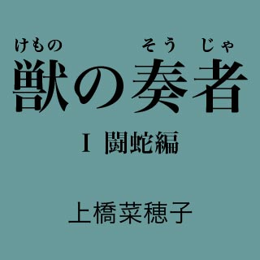

| 獣の奏者01 闘蛇編 | |
| 上橋菜穂子 | |
| 講談社 (2012) | |
ebpaj-guide-1.0

獣の奏者 Ⅰ闘蛇編
主な登場人物
エリン 物語の主人公。闘蛇衆の村で育った少女。母を失って村を離れ、数奇な運命を辿る。
ソヨン エリンの母。闘蛇衆と結婚してエリンを産み、獣ノ医術師として暮らす霧の民。
アッソン エリンが幼いころに死んでしまった父。闘蛇衆の頭領の息子。
ジョウン 蜂飼い。孤児となったエリンをひきとり、めんどうをみる。
アサン ジョウンの息子。
エサル ジョウンの学友。カザルム王獣保護場の学舎で、教導師長を務める女性。
カリサ カザルム学舎の寮母。
ユーヤン カザルム学舎に二人しかいない女子学生の一人。エリンの親友。
トムラ カザルム学舎で学ぶ男子学生で、エリンの先輩。
ハルミヤ リョザ神王国の王で、真王と呼ばれる、聡明でやさしい老女。
セィミヤ ハルミヤの孫で次の王となる娘。
ダミヤ ハルミヤの甥。
ジェ リョザ神王国を築いた王祖。
大公 闘蛇を操る兵を持ち、リョザ神王国の国防を担う重臣。
シュナン 大公の長男。
ヌガン 大公の次男。
イアル 真王の護衛士「堅き楯」の一人。
カイル 真王の護衛士「堅き楯」の一人。
ヤントク イアルの幼馴染み。

序 章 母の指笛
1 闘蛇の弔い笛
戸があいた音で、エリンは目をさました。
夜が明けるにはまだ間がある時刻で、雨が薄板葺きの屋根を打つ音が、闇の中に絶え間なく響いている。
母が、土間の水場で手を洗っているのが、ぼんやりと見えた。足音を忍ばせて寝間にあがってきた母が、寝具に身体を滑りこませると、ふうっと雨の匂いと、闘蛇の匂いが、漂ってきた。
戦士を乗せて水流を泳いでいく巨大な闘蛇の鱗は、麝香のような独特な甘い匂いがする粘液でおおわれている。闘蛇の背にまたがって戦に行く戦士たちは、どこにいても、その匂いでわかるほどだ。
闘蛇の世話をする母もまた、いつも、この匂いをまとっていた。エリンにとっては、生まれたときから嗅ぎつづけている、母の匂いだった。
「......おかあさん、さっき、雷が鳴った？」
「遠雷よ。雷雲は山向こうにあるから、心配しないで寝なさい」
エリンは吐息をもらし、目を閉じた。
母の白い手が、闘蛇の巨体をゆっくりと慎重になでていくさまが、瞼の裏に浮かんだ。じっと闘蛇を見つめる、静かな母のまなざしが、エリンは大好きだった。
母は、闘蛇のなかでも、常に先陣を駆け、敵陣を食い破る役目を担う最強の闘蛇――〈牙〉たちのお世話を任されている。友達のサジュの父や、チョクの父だって、〈牙〉たちがいる岩房は任せてもらえない。闘蛇の世話役である闘蛇衆が、母の獣ノ医術の腕をそれほどに高く買っているのだと思うと、エリンは誇らしさで胸がはちきれそうになる。
母が闘蛇の世話をしにいくときは、水汲みをしていても縫い物をしていても、途中でほっぽって、必ずくっついていった。母がやるように、闘蛇の鱗に触れてみたくてたまらないけれど、母は絶対にだめだと言う。
――闘蛇は恐ろしい生き物なのよ。おまえが近づけば、その気配を感じて鎌首をもたげ、ひと口で、おまえの頭から腹まで嚙み裂いて、のみこんでしまうわ。
岩房の深く暗い溜め池の水面をうねらせながら泳ぐ、巨大な蛇を見つめながら、母は平淡な声で言った。
――おまえは、わたしが闘蛇に触れるのを見慣れているから、つい気楽に考えてしまうのだろうけれど、絶対に勘違いしてはいけないよ。
闘蛇は、けっして人に馴れない。......馴らしてはいけない生き物なのよ。
わたしたち闘蛇衆や戦士たちが触れるときは、この音無し笛で闘蛇の感覚を痺れさせているだけ。
母は、掌の上で、小さな笛を転がしてみせた。
母が笛を唇にあてる仕草は、もちろん見慣れていたし、教練に出る戦士たちがいっせいに笛を口にあてて息を吹きこみ、まるで丸太のように硬直した闘蛇の背に素早く鞍をかけ、よじのぼって、頭部に生えている二本の長い角をつかんでまたがるのも見たことはあった。
いったん背にまたがって角をつかんでしまえば、闘蛇は乗せた戦士の意のままに動くようになる。角をつかんで顎をあげさせていれば、水に潜ってしまうこともないという。
闘蛇には鋭い爪が生えた前脚と後脚があり、地上に這いあがって駆けだせば、その速さは、どんな駿馬にも勝る。地上を駆ける姿は蛇というよりは竜に見えたが、彼らの棲み処は水中であり、脚をぴったりと腹につけてうねりながら泳ぐ姿は、まさしく蛇だった。硬い鱗には矢も刺さらず、戦士を乗せて敵陣へ躍りこんでは人馬もろとも嚙み裂いて殺す、凶暴な蛇......。
闘蛇衆は、野生の闘蛇が産卵する季節になると、巣の中に産みつけられたたくさんの卵のなかから、闘蛇に見つからぬよう密かに、ひとつ、ふたつと、卵を採ってくる。その卵を孵化させたのち、幼体であるうちに、その耳の部分をおおっている蓋のような鱗の一部を切りとってしまう。
母がその作業を行っているのを、エリンは見たことがあった。その蓋をとることで、闘蛇は耳をふさぐことができなくなり、音無し笛の音で操れるようになるのだと母は教えてくれた。戦士たちは、笛を使って闘蛇の背にまたがったあと、万が一にも敵に操られぬように、闘蛇の耳に、闘蛇の鱗を加工して作った覆いをはめるのだそうだ。
ぼんやりと掌の上で笛をもてあそびながら、闘蛇を見ていた母の顔は、なぜか、とても暗く、哀しげだった。
――これから成長して、十五歳ぐらいの一人前の娘になっても、おまえがまだ闘蛇に触れたいと思うようなら、そのとき考えましょう。
母の声があまりに虚ろだったので、気をのまれてしまって、そのときはなにも言えなかったけれど、でも、十五歳になるには五年も待たねばならない。そんなに長く、どうやったら待てるだろう？ 光をはじいて七色に輝く鱗に触れたらどんな感じがするのか、毎日そればかり考えているのに。
そう言うと、サジュやチョクは、エリンは変だと言う。彼女らは闘蛇が怖いらしい。そばに行くのさえいやなのだそうだ。闘蛇はたしかに怖い生き物だから、エリンもその気持ちはわからないわけではない。
だけど......自分でもなぜだかわからないけれど......エリンは闘蛇を見ていると、時を忘れてしまう。なめらかに水底に潜ってから、黒い水をまとって、うねりながら浮かびあがってくるその姿を見ると怖くて鳥肌が立つけれど、それでも、目が離せない。
ずっと、一日中でも闘蛇を見ていたかった。
闘蛇も夜には眠るのだろうか？ 夜半の見回りにも、ついていきたかったけれど、どうしても起きることができなくて、まだ一度も行っていない。母が起きる気配で目がさめるたびに、起きようと思うのだけれど、瞼が膠でくっついてしまっているようで、目をあけることもできないのだ。
闇の中に母の寝息が聞こえはじめるまえに、エリンは深い眠りに吸いこまれていた。
どのくらい眠っただろうか。
突然、耳をつんざくような甲高い笛の音が鳴り響き、エリンは、びくっととび起きた。
かたわらで、母が寝具をはねのけて起きあがるのが見えた。もう夜が明けはじめた時刻らしく、母の姿はさっきよりはっきりと見えていた。
笛の音は続いている。ひび割れた金属の管を力いっぱい吹き鳴らしているような、歯がむずむずするような音だった。エリンは両耳を手でふさいだ。
「おかあさん！ これ、なんの音？」
母は答えなかった。手早く着がえるや、
「おまえは、ここにいなさい」
と言いおいて土間におり、手間のかかる長靴は履かずに草履をつっかけると、外へ駆けだしていった。
ここにいろと言われても、いられるはずがない。
切迫した悲鳴のような音が、あちらこちらから大気を渡って響いてくる。いったいなにが起きているのだろう？
エリンは寝巻きの上に外着をはおって、大急ぎで母のあとを追った。
雨はあがっていたが、地面はぬかっていて、草履ではずるずる滑って走りづらかった。ほかの家々の戸も引きあけられて、ばらばらと闘蛇衆たちが外に出てきた。その背後から家の者たちもとびだしてきて、ざわめきながら、東の崖へ向かって駆けだした。東の崖の岩屋の奥に、闘蛇が棲まう岩房がいくつも築かれている。悲鳴のような笛の音は、たしかにその岩房のほうから聞こえていた。
岩屋の入り口は、巨人が灰色の崖に手をかけて裂いたような形をしている。崖のはるか高いところまで裂け目は広がり、裂け目が地面と触れ合っているところは、大人が数人、横に並んで歩けるほどの幅があった。
岩屋の入り口には、敵国の者が忍びこむのを防ぐ兵士たちが不寝番をしている。不気味な笛の音にうろたえて、岩屋の奥をのぞきこんでいた彼らは、エリンの母を先頭に闘蛇衆がやってくると、ほっとした表情で脇にどいた。
岩屋には、数十歩おきに松明が焚かれており、湿った岩肌を輝かせている。
入ってすぐのところには、〈広間〉と呼ばれる広大な空間があり、その奥は、いくつもの細い洞窟に分かれていた。洞窟はそれぞれ、岩房と呼ばれる孤立した大きな岩穴に通じている。岩穴には〈イケ〉と呼ばれる深い水溜まりがあり、闘蛇はそこで飼われていた。
三百年もまえの先人たちが造ったという〈イケ〉は、地の底をどうやって穿ったのかと驚くほど巨大な水溜まりだった。それでも、縄張り意識が強い闘蛇は、ひとつの〈イケ〉に十頭以上入れると、互いを食い合ってしまうので、この地の底には、無数の〈イケ〉が築かれているのだった。
それぞれの〈イケ〉は、〈闘蛇の道〉と呼ばれる水路で結ばれている。ふだんは分厚い樫の板の堰で隔てられているが、教練のときや戦時には、その堰があけられて、戦士を背に乗せた闘蛇が出陣していくようになっていた。
いま、地の底はすさまじい音の嵐にゆれていた。無数の〈イケ〉から甲高い笛の音が響き、洞窟に反響しながら吹きあげてくる。岩屋に入った人々は、いっせいに耳を押さえ、歯をくいしばった。
〈闘蛇の道〉の両脇には、人が通れる通路がある。エリンの母は耳を押さえもせず、薄暗く足もともさだかでないその通路の上を駆けぬけて、〈牙〉たちがいる岩房へ足を踏み入れた。
エリンがようやく母のいる岩房に辿りついたときには、すでに闘蛇衆のほとんどが、その岩房に集まっていた。
石像のように立っている大人たちのあいだに身体をねじこんで前に出ると、不思議な光景が目にとびこんできた。
暗い〈イケ〉の水面に、ぼうっと光る巨大な丸太が何本も浮かんでいるのだ。母が、胸まで〈イケ〉につかって、その丸太に触れようとしている。
やがて、エリンは、それがなんであるのかに気づいて、息をのんだ。
「〈牙〉......！」
母のほうに行こうとしたエリンの肩を、誰かがつかんだ。ふりあおぐと、祖父がいた。こわばった顔で、母を見つめている。
「......死んでいるのか」
祖父の声に、母がうなずいた。
「五頭、すべてか？」
また、母がうなずいた。
いつのまにか、あの不思議な笛の音は、やんでいた。静寂のなかを複数の足音が近づいてきて、やがて、闘蛇衆が三人、岩房に入ってきた。
「......隣の岩房でも〈牙〉が死んでおります！」
闘蛇衆がざわめいた。エリンは、肩をつかんでいる祖父の手に、痛いほどに力がこもるのを感じた。
「ほかの闘蛇はどうだ？」
「〈胴〉や〈尾〉たちは、皆、無事です。......さっきまで弔い笛を吹いていて、いまも興奮した様子で〈イケ〉の中を泳いでいますが、無事です」
祖父は、闘蛇衆を見まわしながら、厳しい口調で言った。
「おまえたちは、それぞれ担当する岩房へ行け。興奮して泳ぎまわると、岩に肌をこすりつけて、傷をつくる。これ以上、一頭たりとも損なうな！」
闘蛇衆がいっせいにうなずき、岩房の外に走りでていくのを見届けてから、祖父は〈イケ〉のほうへ歩み寄った。
「......原因は、なんだ」
母は、義父のほうを見ず、硬直して浮きあがっている闘蛇の鱗を、めくるようにして見つめながら答えた。
「まだ、わかりません」
「ワシュ（発光虫）にたかられたせいで、窒息したのか？」
「いいえ。鰓はきれいです。これは、死後に寄ってきたのでしょう」
「特滋水（〈牙〉にだけ与える薬草入りの水）は欠かさず与えていたのだろうな？ 夜半の見回りのときには、異常がなかったのか？」
母は、無言で首をふった。
そんな母を、祖父は、じっと睨みつけていたが、やがて、こわばった口調で言った。
「〈牙〉をすべて死なせるなど......、とてつもない大罪だぞ。監察官が来たら尋問され、裁かれることになる」
母は、ゆっくりと頭をめぐらして義父を見上げた。そして、つぶやくように言った。
「覚悟しております」
祖父は、苛立たしげに拳を握りしめた。
「覚悟か！ ソヨン。わしも覚悟せねばならんな！
闘蛇衆の頭領として、おまえの義父として、さぞ監察官に厳しく問われることだろう。なぜ、霧の民のおまえを、大公の宝たる〈牙〉の世話係にしていたのかと」
祖父の声は、怒りにふるえていた。
「アッソンの遺言さえなければ......アッソンの子を孕んでおらねば......」
口の中でつぶやいてから、祖父は首をふった。
「いや、それだけではない。たしかに、おまえの獣ノ医術の腕は卓越している。だから、皆の反対を押しきって、わしは息子の遺志を叶えたのだ。だが、こんなことになるとは......」
吐き捨てるようにそう言うと、祖父は母に背を向けて、岩房から出ていった。
エリンは、しゃがみこんだ。膝がふるえて、立っていられなかったのだ。
「おかあさん......おかあさん......」
ささやくと、母が顔をあげた。しばらく、虚ろな表情でエリンを見ていたが、やがて、その目に、すこし生気がもどってきた。母は、かすかに微笑んだ。
「大丈夫よ」
「でも、大罪だって......」
「大丈夫」
母は、硬直した闘蛇の身体を、そっとなでた。
「――お祖父さまは、あんなふうにおっしゃったけれど、お祖父さまの父親の代のときも、同じように〈牙〉がすべて死んでしまったことがあるのよ。
〈牙〉はね、ほかの闘蛇より身体が大きく、力も強い。でも、ほかの闘蛇よりも病には弱い。それは、皆が知っていることだわ」
母は、水の冷たささえ感じていないように、ただ、じっと闘蛇を見つめていた。母の目に浮かんでいるのは哀しみの色だけではなかった。なにかをこらえているような、苦悩の色があった。
奥の岩房のほうから岩を伝わって虚ろに響いてくる、なにを言っているのかもわからない闘蛇衆の声を聞きながら、エリンは長いこと、母と、死んだ闘蛇たちを見つめていた。
岩壁を穿って差しこまれている松明の炎に、無数の羽虫が寄り集まって舞い飛んでいる。その羽虫は、闘蛇にもたくさんまとわりついていた。
それを見ているうちに、ふっと、エリンはつぶやいた。
「おかあさん、闘蛇は死ぬと匂いが変わるの？ それとも、病にかかったから、匂いが変わったのかなあ」
まるで、鞭で打たれでもしたかのように母が顔をあげたので、エリンはびっくりした。
母は、エリンを見つめた。
「......なぜ、そう思ったの？」
エリンは瞬きした。
「え......だって、この匂い、ちょっと、いつもの闘蛇の匂いとは、ちがうよ。だから、こんな変な羽虫が寄ってきているのかなって......思ったんだけど......」
母が凍りついたように身動きもせず、じっと見つめているので、語尾が尻すぼみになってしまった。
母が、ささやくような声で促した。
「それで？」
エリンは、瞬きをして、言った。
「ワシュ（発光虫）はよく水の中にいるけれど、こんな羽虫は岩房で見たことがないもの。まえに、おかあさん、教えてくれたでしょ。花によって香りがちがうから、寄ってくる虫もちがうって。それと同じに、闘蛇の匂いが変わったから、こんな羽虫が寄ってきたんじゃないかと思ったの」
母の目には、なんとも言えぬ色が浮かんでいた。
「おまえは......」
感嘆をにじませた声で、そう言いかけて、口を閉じ、それからひとつ首をふって、母は、静かな声で言った。
「エリン、その思いつきを、誰にも話してはいけないよ」
「どうして？」
母は微笑んだ。
「......人のなかには、くだらない勘繰りをする者がいるものよ。おまえが、わたしを助けようとして、作り話をしていると思われたら、おまえを叱る人もいるでしょう」
エリンは顔をしかめた。母がなにを言いたいのか、わかるようで、わからなかった。なんとなく、はぐらかされたような気がしたけれど、なぜ、母がそんなことをするのかも、わからなかった。
母は、大儀そうに岩床に手をついて、水からあがってきた。エリンはあわてて母に駆け寄り、衣をひっぱって、母があがってくるのを手伝った。母の身体は氷のように冷えきっていた。
「ありがとう」
母はつぶやくと、ふいに、慈しむようにエリンの頭をなでた。
それから、死んだ闘蛇が浮かんでいる〈イケ〉のほうに向き直ると、両膝をつき、頭をさげて額を岩床につけた。そのまま、母は長いこと、動かなかった。濡れた衣から滲みだした水が、母の身体の周りに黒々と広がっていた。
2 霧の民
温浴場を出ると、夕日が山肌を染めて沈んでいくのが見えた。
長い一日だった。
死んだ闘蛇を洞窟の〈広間〉に敷いた筵の上に並べ、明日、監察官が到着したときに調べやすいように整えたあと、母は、長いこと、ほかの闘蛇衆とともに集会堂にこもっていた。
エリンは心配でたまらなかったけれど、昼餉時になっても母たちは集会堂から出てこず、隣家のサジュの母が、エリンに昼餉を食べさせてくれた。
夕刻になって、母たちは、疲れきった表情で集会堂から出てきた。戸の外で待っていたエリンの手をとると、母はなにも言わずに家に着がえをとりにもどり、それから、いつものように温浴場に向かったのだった。
一日中、冷たい〈イケ〉につかって仕事をする闘蛇衆が暮らすこの集落では、温浴場は欠かせない設備だったが、たくさん薪を使って火を熾すので、火事の危険を考えて、集落の西の外れに造られている。
エリンと母は、いつも、ほかの闘蛇衆や女衆たちが入ったあとの、仕舞い湯を使った。物心ついたときから、ずっとそうしていたから、いままでエリンは、そのことをとくになぜかと考えたこともなかった。けれど、今日は、人けのない温浴場で、母と二人、湯につかりながら、なぜ母は、人のいないときに湯に入ることにしているのか、それが気になってしかたがなかった。
母と自分は、なんとなく、集落のほかの人たちとは隔たりがある。
面と向かってなにか言われたりしたことはないけれど、折に触れて、心のどこかで感じとっていたことが、寄り集まって、ひとつの意味を成しはじめていた。
たとえば、サジュの祖父母は、もっとサジュにやさしい。第一、ひとつ屋根の下で、いつも一緒に暮らしている。従兄弟やはとこたちも、頻繁に出入りしている。
エリンは祖父母と暮らしたことはなかった。闘蛇衆の頭領である祖父は、エリンにとっては、いつも、なんとなく怖い人だった。祖母も、新年の祝いや祭りのときに挨拶に行けば、祝いの餅を分けてくれたが、エリンにも母にも笑顔を向けてくれたことはなかった。
父の弟妹である叔父、叔母や、その子らも、あまり近しい存在ではない。彼らが祖父母と気楽に話しているのを見るたびに、なぜ祖父母は、自分や母とは、あんなふうに話してくれないのだろうと思ったけれど、なんとなく、それは口にしてはいけないことのように思えて、これまで、母にさえ、尋ねなかった。
母は、集落の女たちの誰よりも背が高い。
母の顔かたち、瞳の色が、集落の人々とずいぶん異なることに気づいたのは、いつだっただろうか。「エリンはお母さんと同じ緑色の瞳をしているね。霧の民はみんな、緑色の瞳をしているの？」と、サジュに言われたときだったかもしれない。
サジュは、声を低めて、おそるおそるという感じで、訊いてきたのだった。
「ね、ほんとうは、エリンも魔力を持っているの？ 霧の民と村人のあいだに子が生まれるなんて、ふつうは、ありえないことなんだって。そういう子は、魔がさした子って言うんだって。エリンは、魔物にさされたの？」
そのとき、エリンは曖昧に微笑んでみせただけで、答えなかった。なぜか、心を鈍くして、やりすごしたほうがいいと、とっさに感じたからだ。
誰から教えられた知恵でもないけれど、なにも聞かず、知らないふりをして時を過ごしていけば、母も自分も哀しまずにすむような気がしていた。
山稜を縁どる夕焼け雲を見ながら、エリンは、そっと母の横顔を見上げた。
おかあさんは、霧の民だったの？ わたしのおとうさんは、どんな人だったの？ わたしは、魔がさした子なの？ ――喉もとまで、その問いが突きあげてきたけれど、声にはならなかった。
エリンの視線を感じたのか、それまで、ぼんやりと夕焼け雲を見つめて歩いていた母が頭をめぐらして、エリンを見た。
「......疲れたね」
つぶやいて、母は微笑んだ。
「今日は、夕餉に、猪肉を食べようね」
エリンは、びっくりした。味噌の中に埋めてある猪肉は、お祝い事や祭りのときぐらいしか口にできないご馳走だった。
「ほんと？ ほんとに、猪肉を食べるの？」
「ええ。疲れをとって、明日もがんばれるように、今日はお腹いっぱいおいしいお肉を食べましょう」
家に帰りつくと、母はエリンに炉に火を熾すように言って、奥の部屋へ入っていった。奥の部屋から出てきたとき、母は小さな包みを手に持っていた。
「それ、なあに？」
母は、エリンの問いには答えず、
「......お米は研いであるから、炊いておいてちょうだい。ご飯が炊けるころには、もどってくるからね」
と言いおいて、隣のサジュの家へ行ってしまった。なにを話しているのか、母はなかなか帰ってこなかった。
お釜から米が炊きあがったよい香りが漂いはじめたころ、ようやく母がもどってきた。
竈の前にしゃがみこんで、母は火加減を確かめた。
「いい匂いね。......お腹がすいたでしょう。すぐ猪肉を料理するからね」
そう言いながら、母はしかし、立ちあがる様子もなく、ぼうっと竈の火を見つめていた。そして、ふいに、懐から笛をとりだすと、それを、ぽん、と火にくべてしまった。
「おかあさん！」
びっくりしてエリンが叫ぶと、母は立ちあがってエリンの頭を抱き寄せた。
「......ごめんね」
かすれた声で、母は言った。
「おまえには、ほんとうにかわいそうなことをしてしまったね。......でも、おかあさんは正直なところ、二度とあの笛を持たなくてよくて、ほっとしているのよ」
エリンは驚いた。
「なんで？ おかあさん、ほんとは、闘蛇をお世話するのがいやだったの？」
母は首をふった。
「闘蛇を世話するのは、いやではなかったわ。......この笛を使うのが、いやだったのよ」
エリンの髪をぼんやりとなでながら、母は低い声で言った。
「笛を鳴らした瞬間、硬直する闘蛇を見るのは、ほんとうにいやだった。......人に操られるようになった獣は、哀れだわ。野にいれば、生も死も己のものであったろうに。人に囲われたときから、どんどん弱くなっていくのを目のあたりにするのは、つらかった......」
それは、独り言のようだった。
「人に飼われると、闘蛇は弱くなるの？」
エリンは尋ねた。
「特滋水をあげて、強くしているんじゃないの？」
「......特滋水を与えれば牙の硬度が増して、骨格も野生のものより大きくなるわ。でもね、特滋水を与えていると、弱くなってしまう部分もあるのよ」
「どこが弱くなっちゃうの？」
母はエリンの頭に手をおいて、しばらく考えていたが、やがて、後悔したように言った。
「よけいなことを、つい、おまえに話してしまったね。いま、おかあさんが言ったことは、忘れておくれ。ほかの闘蛇衆は知らないことだから、おまえが、こんなことをしゃべったら、大変なことになるわ。――他人には言わないと、誓っておくれ」
エリンは顔をしかめた。
母は、ときどき、こういうことを言う。
「......誓うけど、その代わり、おかあさん、答えを教えて。どこが弱くなっちゃうの？」
母は微笑を浮かべた。
「考えてごらんなさい。野にいる闘蛇ならば、ごくふつうに為すことで、〈イケ〉に飼われた闘蛇には、できなくなることがある。......おまえなら、きっと、自分で答えを見つけられるわ。
でも、答えを見つけても、他人に話してはだめよ。――なぜ、他人に話してはいけないのか、それがわかるようになるまでは、話してはだめ」
そう言って、母はエリンの髪の毛をくしゃくしゃっとなでると、すっと手を放した。
「さ、猪肉を甕からとりだしておいで」
エリンが甕から猪肉をとりだして、味噌を落としているあいだに、母は、竈の灰を分けて、その上に大きなラコス（甘い実のなる木）の葉を広げた。
エリンは目を丸くして、ラコスの葉を見た。
「なにしてるの？」
母は笑った。
「まあ、見ててごらん」
母は猪肉の塊を受けとると、それをラコスの葉の上に並べ、ラコスの実の甘い果肉をむしって、その上にのせた。そして、トイ（辛味をつけた味つけ味噌）をすこしその上に垂らしてから、手早く肉や果肉を包みこむようにして葉っぱを閉じ、上に熱い灰をかぶせた。
ずいぶんたって、エリンが空腹に耐えられなくなったころ、母はようやく葉っぱの包みを灰からとりだして、素焼きの大皿に移した。
葉っぱをあけると、ふわっと蒸気とともに、甘く香ばしい匂いが立ちのぼった。
「うわあ......」
蒸し焼きになった猪肉はやわらかく、とろとろになったラコスの甘い果肉と、トイの辛味とが染みこんでいた。嚙みしめると、濃厚な旨味が口いっぱいに広がった。
「おいしいかい？」
エリンが夢中で猪肉にかぶりつきながら、うなずくのを見て、母はうれしそうに笑った。
「その汁をご飯にかけてごらん」
葉に残っていた肉汁をご飯にかけて頰ばると、これまた、とてもおいしかった。
「ラコスの葉は冬でもしっかりと残っているし、どの山でも日当たりのよい斜面に行けば、たいがい手に入ったから、山々を渡り歩いていたころは、よくこうして鍋代わりに使ったものよ。鍋とちがって、肉の臭みをとって、よい香りをつけてくれるしね」
母の言葉を聞きながら、エリンは食べる手をとめた。母は、おだやかな表情をしていた。こんなふうに、母が昔のことを話すのは、初めてだった。
「おかあさん......」
いまなら、訊いてもいいような気がした。
「おかあさんは、子どものころ、村にいなかったの？ どこにいたの？」
心ノ臓が、ドンドンと激しく打っている。
緊張しているエリンの顔を見ながら、母は答えた。
「いろいろなところを、旅しながら暮らしていたわ。これまで、おまえに、そういう話をしたことはなかったね。おまえも、尋ねなかったけれど......訊いてはいけないような気がしていたのかい？」
エリンがうなずくと、母も、うなずいた。
「......おまえも、たくさんのことがわかる年頃になったし、今夜は、おかあさんのこと、おまえのおとうさんのことも、話しておこうね」
そう言って、母は、皿を膝におろした。
「今日、お祖父さまが、おかあさんのことを霧の民と呼んだでしょう。
おまえは、霧の民と聞くと、どんな感じがする？ 深い霧の中から現れて、また霧の中へ消えていく、背の高い不思議な人々だと、村の人は思っているようね。とてもよく効く秘薬を売ってくれて、医術に優れているけれど、奇妙な神々を信仰している、気味の悪い人たちだと思う？」
エリンは、小さくうなずいた。母は、目もとに微笑を浮かべていた。
「外の人たちから見れば、そんなふうに見えるのでしょうね。......たしかに、わたしたちは、ひとところにとどまって暮らすことをせず、独特の暮らし方を守ってきたから。
でもね、霧の民というのは、わたしたちの名乗りを人々が聞き間違えたことから生まれた名前なのよ。アー（霧）のリョ（民）というのが、わたしたちの印象と合っていたために、そういうふうに広まってしまったのだろうけれど、ほんとうは〈アォー・ロゥ〉――『戒め（アォー）』を『守る者（ロゥ）』という意味なのよ」
「戒め？」
「......ずっとずっと昔に起きた過ちを、二度とくり返さぬように、という戒めよ。その戒めを、己の命よりも、家族の命よりも大切なものとして守れと、おかあさんは教えられて生きてきたの。そういうふうに、戒めを守って生きるから、アォー・ロゥとわたしたちは名乗っていたのね」
「ずっと昔に起きた過ちって、なんだったの？」
母は、しばらく口を閉じて、言葉を探していた。
「......人も獣も死に絶えるような――そういう恐ろしい過ちよ。
おかあさんの祖先はね、滅びの危機を二度と再び迎えることがないように、戒めを守ることを誓い、真王に仕えることも、大公に仕えることもなく、野や山を巡り暮らすようになった人々だった。
一族の者たちは、生まれ落ちたときから、掟に従うことを厳しく教えこまれながら、何世代にもわたって暮らしてきた。......一族以外の者と婚姻してはならない。一か所にとどまって暮らしてはならないという掟を守りながら」
母の目に、哀しげな笑みが浮かんだ。
「おかあさんはね、その掟を破ってしまったの。おとうさんと出会い、おとうさんとこの村で生きることにしたときから、おかあさんは〈アォー・ロゥ〉ではなくなったのよ」
エリンは瞬きをした。
「でも......だけど、おかあさんのおかあさんやおとうさんは、いま、どうしているの？」
「おとうさんは、早くに亡くなったわ。......おかあさんたちは、いまも、どこかを旅しながら暮らしているんでしょうね」
なんと言ってよいかわからずに、エリンは呆然と母を見ていた。
戒めとか、掟というのが、どうもよくわからなかった。――父と出会って、この村に住むことが、なぜ、そんなにいけないことなのだろう？ そんなことぐらいで、なぜ、母は自分の家族と会えないのだろう？
顔をしかめ、一生懸命考えているエリンを見て、母が訊いた。
「おかあさんの話、むずかしい？」
「......うん」
「そうでしょうね。......じゃあ、ずっとあとで、おまえが大人になったら、思いだして考えてごらん。いまよりは、きっと、わかるようになっているはずだから」
そう言って、母は手招きをした。
お皿をおいて立ちあがり、そばに行くと、母は、エリンがもっと幼かったころのように、エリンを膝に座らせて、すっぽりと抱きかかえてくれた。
「おかあさんが、おとうさんと出会ったのは、サモックの岩場だったの。岩場に咲くチャチモ（紫色の花を咲かせる植物。胃腸の薬になる）を探していて、崖の中腹に倒れている若者を見つけたのよ」
「それが、おとうさんだったの？」
「そう。......鹿狩りをしていて、足を滑らせたんですって」
「おとうさん、怪我してたの？」
「ええ。頭を強く打っていたし、足の骨も折れていたわ」
「おかあさんが、助けてあげたのね」
母は微笑んで、エリンをゆすった。
「そうよ。......それが、おとうさんとの出会い。アッソン......おとうさんは、お祖父さまともお祖母さまとも似ていない、やさしい人だった。あまりしゃべらない人だったけれど、笑うとね、お天道さまが雲間から顔を出したように、あたりが明るくなるの。
おまえは、おとうさんにそっくりよ。......そばにいてくれるだけで、温かい」
そう言うと、母は、ぎゅっとエリンを抱きしめた。
3 母の指笛
村の道を、ものものしく槍を携えた兵士たちをともなった騎馬の一行がやってくるのを、エリンは女たちのあいだに交じって、身を硬くして見つめていた。
集会堂の前の広場には、村人のほとんどが集まり、緊張した面持ちで、監察官の一行を出迎えた。村人より一歩前に、一列に並んでいる闘蛇衆のなかに、母も立っている。
赤い衣に太い飾り帯を巻き、黒い冠をかぶった監察官は、馬から降りることもなく、自分の前に並んでいる闘蛇衆を睨みつけた。
「......大公の宝たる〈牙〉を、十頭すべて死なせたというのは、まことか」
エリンの祖父が一歩前に進みでて、深く頭をさげた。
「まことでございます。お詫びのしようもございません」
監察官の目の縁が、ぴくぴくと痙攣していた。監察官は、いきなり怒鳴った。
「〈牙〉のお世話をしていた者は誰だ、前に出よ！」
エリンは、びくんと跳ねあがった。
母が前に進みでるのが見えた。母は、胸の前で両の掌を重ねて、深く頭をさげる最敬礼をした。
「......わたくしでございます」
監察官は、驚いて目を見開いた。
「なんと......まさか、おまえ、霧の民か？」
監察官はエリンの祖父に顔を向けると、すさまじい声で怒鳴りつけた。
「おまえ、なにを考えておる！ 霧の民の女などに、大公の宝のお世話をさせていたというのか！」
エリンの祖父は、こわばった顔で答えた。
「申しわけございません。しかし、この者は抜きんでた医術の腕を持っておりまして......」
監察官は、さっと乗馬用の鞭をふりあげるや、祖父の頭を打った。祖父の額から血が飛び散った。祖父は片手を額にあてたが、うつむいたまま、その場から動かなかった。
「抜きんでた医術の腕だと？ さもあろうよ。霧の民とは、そういう、奇妙な術を使う輩だ。
だが、いいか、頭領！ よく聞くがよい。闘蛇のお世話をする者は、医術の腕に優れていればよいわけではない。なにより大切なことは、大公への、ゆるぎない忠誠心を持っていることだ！ 闘蛇衆の頭領ともあろう者が、そんなこともわからぬのか！」
祖父は顔をあげた。
「畏れながら申しあげます。この女は、十年以上まえに、霧の民から破門され、わたくしの息子と結婚し、村人となった者でございます。もはや霧の民の掟には従っておらず、大公さまに忠誠を誓っております」
監察官は、鼻で笑った。
「わかるものか。霧の民にとって掟は至上のものと聞く。我が子さえ、掟に逆らえば殺すそうな」
母を睨みつけ、監察官は言った。
「なぜ、おまえがお世話をしている〈牙〉だけが全滅したのだ。医術に優れているのなら、死因も解明できていよう。答えよ！」
母は、硬い声で答えた。
「畏れながら申しあげます。......〈牙〉の死因は、中毒死でございます」
あたりが静まりかえった。
監察官は、眉根を寄せた。
「なんだと？ 中毒死？ それはどういう意味だ。おまえは、〈牙〉に毒物を与えたというのか！」
母は首をふった。
「ちがいます。......闘蛇衆なら、誰もが知っていることでございますが、〈牙〉に与える特滋水は、かなり強い成分を持っております。しかし、闘蛇の身体をおおっている粘液には、身体を保護する力がありますので、特滋水が粘液と混ざりながら体内にとりこまれれば、闘蛇の健康を損ねることなく、よい成分だけを与えることができるのです。
しかし、昨日の朝は、なぜか、闘蛇の身体をおおう粘液が、ところどころ薄くなっておりました。夜半の見回りのときには、そのようなことはなかったので、いつものように特滋水を与えたのですが......」
監察官は、目を細めた。
「わずか数時間で、そのような変化が起きたというのか。なぜだ？」
母は、監察官を見上げて、首をふった。
「......わかりません」
重苦しい静けさが、広場をおおった。
ふいに、監察官が、背後の兵士たちをふり返った。
「この女を捕らえよ！ 尋問ののち、刑に処する！」
エリンは、身体をふるわせた。心ノ臓に、なにかが刺さったような鋭い痛みが走った。
「......おかあさんっ！」
とびだしていこうとしたエリンを、隣のサジュの母が背後からがっちりとつかんでとめた。
「行っちゃだめだよ！」
泣き喚くエリンの口を、サジュの母は肉厚の手でおおって、声が漏れないようにした。
サジュの母は大柄で力が強い。エリンはくるったようにもがいたが、その腕をもぎ離すことはできなかった。
母が縄をうたれ、引きたてられていくのが、涙にゆがんで見えた。
それから三日間のことを、エリンは、ほとんど覚えていない。
母は、あらかじめ、サジュの両親に、貯めていた給金から多額の金を渡して、エリンのことを頼んでいたのだそうで、サジュの両親は、エリンを家に連れて帰って、やさしくいたわりながら、面倒をみてくれた。
祖父母がひきとるのが筋だろうが、彼らがどんな感情を持ってエリンに接するか、母にはわかっていたし、サジュの両親も、それは察していたのだ。
サジュの両親もサジュも、なぐさめてくれたが、すべての物音が遠くから聞こえてくるようで、エリンは、哀しみと恐怖以外のなにも感じられなかった。
母が捕らえられて三日目の夜更け、庭の奥にある厠に行ったエリンは、寝間に帰ろうとして足をとめた。サジュの両親の寝間から、サジュの母の興奮した声が、聞こえてきたからだ。
「......それじゃ、明日の夜明けに、〈闘蛇の裁き〉にかけられるってのかい？」
「しっ、声が大きい。子どもらが目をさましたら、どうする！」
夫にたしなめられて、サジュの母の声は幾分小さくなったが、それでも彼女の声は生まれつき大きく、庭にいても、聞きとることができた。
「でも、それは、あまりにひどいじゃないか。いくらなんでも、そんな惨い死刑にしなくたって......」
ぼそぼそと、サジュの父がなにか言い、また彼女の声が聞こえた。
「ああ......そうなんだろうね。原因もわからずに、〈牙〉だけが死んだとなれば、監察官も大公さまからお咎めを受けるもんね。すべてをソヨンのせいにしてしまおうってわけかい。それにしたって、ひどすぎるよ。野生の闘蛇に食い殺させるなんて......」
そこまで聞いて、エリンは、そっと足音を忍ばせて走りはじめた。月の光を頼りに、サジュの家の裏手にまわり、雑木林を抜けて、自分の家にもどった。
喉を冷たい手でつかまれているようで、息苦しかった。
母を助けなければ。――明日の夜明けに、母は、闘蛇に食い殺されてしまう。
〈闘蛇の裁き〉というのは、きっと、以前に大人たちが話していた、恐ろしい処刑のことだろう。敵に内通した者や、大公さまに反逆した者が処せられるという死刑だ。罪人の手足を縛り、足に石の錘をつけて、野生の闘蛇がうようよいる、ラゴゥの沼に落とすのだという。
暗く、冷え冷えとした土間に立って、エリンはふるえていた。
サジュのおかあさんたちが、エリンがいないことに気づいて捜しにくるまえに、家を出なければならない。見つかって連れもどされたら、母の処刑が終わってしまうまで、外に出してもらえないだろう。
ラゴゥの沼がどこにあるかは、知っていた。村からは、とても遠い。でも、まだ夜明けには間があるから、一生懸命歩いていけば、きっと処刑が始まるまえにつける。
エリンは、土間の壁にかけてある、母の短刀をとった。思っていたより重くて、危うくとり落としそうになった。これは、闘蛇の硬い鱗を切って治療ができるほど、よく切れる短刀だから、これなら、母の縄を切れるはずだ。
ラゴゥの沼の岸辺に潜んでいて、母が沼に投げこまれたら、泳いでいって、この短刀で縄を切ってあげれば、きっと、助けられる。
短刀を懐に入れ、エリンは棚から旅灯をとりだした。炉はすっかり冷えていて、埋み火も消えてしまっていたので、大急ぎで火打ち石を打って火口に火を移し、旅灯に火を灯した。それから草履を脱ぐと、革の短靴に履きかえて、外に出た。
春の月が、ぼんやりと天の藍色をにじませている。
木々も草も、黒い影になって静かに眠っている。
エリンは唇を嚙みしめて、歩きだした。
長い夜だった。歩いても歩いても山道は途切れず、ときおり、なにともわからぬ獣が、藪をゆらして駆けぬける音が聞こえた。
エリンは、口の中で「おかあさん、おかあさん」とつぶやきながら、ひたすらに歩きつづけた。
（おかあさんを助けたら......）
心の中で、エリンはそのあとのことを、思いめぐらした。
（村から出て、二人で旅をしながら暮らせばいいわ。おかあさんは、小さいころ、そうやって暮らしていたんだもん）
母と一緒に野山を歩き、遠い街々を巡る暮らしを思い描き、おいしかった猪肉の味、母の温もりを思いだしているうちに、暗い山道が、すこし怖くなくなってきた。
森が途切れ、目の前に葦の原が広がったときには、天はもう薄青い色になっていた。夜が明けたのだ。みるみるうちに、天は、わずかに赤みを帯びた灰色に変わっていく。
エリンが葦の中に分け入ろうとしたとき、ふいに、太鼓の音が、大気をふるわせて鳴り響いた。ドーン、ドーン、と腹に響く音だった。
驚いた水鳥の群れが、葦原をゆらして、いっせいに天に舞いあがった。
太鼓の音は、まだ続いている。
沼の縁にびっしりと生えている葦は、エリンよりずっと丈が高く、どこに太鼓があるのか見えなかったけれど、きっと、あの太鼓のそばに、母はいるにちがいない。
そう思ったとき、ふいに、恐ろしい考えが浮かんできた。もしかすると、太鼓の音は処刑の合図なのかもしれない。太鼓の音がやんだら、母は、沼に落とされるのではなかろうか。
鼓動が速くなり、胸が苦しくなってきた。音のするほうへ走りだそうとしたが、葦原はじゅくじゅくとぬかるみ、足をとられて、ひどく歩きにくかった。よろけて葦をつかむと、鋭い葉で手が切れた。それでも、エリンはひたすら、太鼓の音がするほうへ進んでいった。音が途絶えるまえに、母のそばに行かなくては......！
日が昇っていく。
あたりは、いつのまにか、すっかり明るくなっていた。
葦を搔き分けると、ふいに視界が開けた。鋼色の水面がはるか彼方まで広がっている。この沼は、川によって、いくつもの沼や湖とつながっていて、西の端は隣の真王領まで達しているのだと母が話していたのを、エリンは思いだした。
すぐ向こうの沼のほとりに野営地が築かれていた。そこに太鼓が据えられ、兵士たちが大きな枹をふりあげては、打ち鳴らしている。
別の兵士たちが小舟を沼に運んでいく。その様子を数人の男たちが見ていた。馬にまたがっているのは、あの監察官だろう。
沼のほとりに立っているのは兵士だけではなかった。エリンの祖父をはじめ、闘蛇衆のなかでも、上の位にある者たちが勢揃いしている。
エリンは息をのんだ。天幕の中から、母が引きだされてきたのだ。
その姿を見て、全身が、すうっと冷たくなった。
母は血まみれだった。後ろ手に縛られ、両脇を兵士に抱えられて、ひきずられていく。エリンは歯をくいしばって、泣き声を必死にのみこんだ。胸の中に湧きあがってきたのは哀しみではなくて、激しい怒りだった。
母の足に太縄が結びつけられるのが見えた。縄の先には重そうな石がくくりつけられている。母が小舟に乗せられたとき、エリンは懐から短刀をとりだして、鞘を投げ捨てた。
母を乗せた小舟が、沼の上に押しだされていく。
あそこまで、泳げるだろうか？
かなり遠いけれど、きっと泳げる。葦原にしゃがみこみ、短靴を脱いで、沼に入ろうとしたとき、片手に短刀を持っていたら泳げないことに気がついた。
また懐に入れようか？
でも、泳いでいるあいだに落ちてしまうかもしれない。
迷っているあいだに、舟はどんどん前に進んでいく。
エリンは、しかたなく短刀を口にくわえて、歯でぎゅっと嚙んで泳ぐことに決めた。沼に入ると、冷たい水が身体を押し包んだ。
短刀をくわえているので、息継ぎができない。顔を水面に出して、口の脇と鼻とで息をしながら泳ぎだしたが、短刀が重くて、すぐに顎が痺れはじめた。
ドーン！ と、ひときわ大きく太鼓が鳴った瞬間、母の身体が小舟から突き落とされるのが見えた。水しぶきをあげて、母が落ちるのを見届けると、小舟はさっさと向きを変えて、岸のほうへもどっていく。
母は、いったん水の中に沈んで見えなくなったけれど、じきに水面に顔を出した。エリンは短刀の重みでさがりそうになる顎を必死に上にあげながら、母に向かって泳ぎつづけた。
「あれはなんだ、子犬か？」
岸に立っていた兵士の一人が、いぶかしげな声をあげた。
「いや......犬じゃない。子どもだ」
並んでいる兵士のあいだに、ざわめきが起きた。
「口になにかくわえているぞ」
「......刃物のようだな。罪人を助ける気か？」
弓を持ちあげて、兵士の一人が監察官をふりあおいだ。
「射殺しますか？」
馬上の監察官は、額に手をかざして、半ば沈みそうになりながら、もがくように泳いでいる小さな姿を目で追っていたが、やがて、鼻で笑った。
「その必要はあるまい。......見ろ」
罪人の周りを遠巻きに囲むように、沼の水面が、奇妙な波紋を描きはじめていた。なにか巨大なものが、いくつも、うねりながら水面下を泳いでいるのだ。
「太鼓の音で目をさまされた闘蛇たちが、投げ入れられた生き餌に気づいたようだぞ」
エリンの祖父は、かすかに口をあけて、その光景を見つめていた。
わずか十歳の孫娘が、母を助けようと泳いでいる姿は、あまりにも哀れだった。
（......いや、きっとこれでよいのだ。どうせ、あの子は、魔がさした子。母と一緒に逝ってしまったほうが、あの子には幸せだ）
異族と交わって生まれた、穢れた子だ。生まれてきたのが間違いだったのだ。間違いはこういうふうに正されて、消える。それが世の運命なのだろう。
そう思いながらも、孫の背後の水面に、ゆっくりと闘蛇の黒い背が盛りあがるのを見ると、鳥肌が立った。
ソヨンは、必死に水面に顔を出していた。
さほど深い場所ではないが、足は立たない。ただ、足に結ばれた錘は沼の底についたらしく、もう重さは感じなかった。闘蛇を寄せるために、腹につけられた深い刺し傷から、血が流れだしていく。血とともに、命も流れでていくのを、ソヨンは感じていた。
殴られて腫れふさがった瞼を、なんとか持ちあげて目をあけたとき、目にとびこんできた光景に、ソヨンは愕然とした。
エリンが泳いでくる。こちらに向かって、泳いでくる......！
なにをくわえているのだろう？
（......短刀だわ！）
幼い娘がなにをしようとしているのかがわかって、ソヨンは喉に熱い塊がこみあげてくるのを感じた。視界が涙でにじんだ。
「エリン......！」
縛られている足で水を蹴り、ソヨンは、懸命に娘のほうに進もうとした。
エリンは、いまにも溺れてしまいそうだ。短刀が重すぎるのだ。口の中に溜まった涎を、息と一緒にすする音が聞こえてきた。
エリンは、ついに口から短刀をとって右手で持ち、左手だけで泳ぎはじめた。
「エリン、おかあさんにつかまりなさい。おかあさんの肩に......！」
エリンの小さな手が、すがるように自分の肩につかまったとき、ソヨンは、娘の背後の水面が盛りあがるのを見た。
（......闘蛇！）
何頭もの闘蛇が、自分たちを囲んで泳いでいる。――大きな獲物を見つけたとき、彼らが行う、〈睨み合い〉と呼ばれる行動だった。獲物を遠巻きにして、ぐるぐるまわり、寄ってきた闘蛇同士が、互いの力量を見定め合うのだ。やがて、もっとも力のある闘蛇が、獲物に襲いかかってくる......。
「......お、おかあ、さん」
エリンは咳きこみながら、つぶやいた。
「手、縄......」
ソヨンは、身体をねじり、娘が縄を切りやすいように、手首をなるべく娘のほうへ持ちあげた。エリンは息を整えていたが、ひとつ大きく息を吸うと、頰を膨らませて息をとめ、水に潜った。
手首を縛っている縄は太く、水を吸って硬くなっていたが、ソヨンは、力いっぱい縄をひっぱって刃が立ちやすいようにした。闘蛇用の短刀は鋭く、エリンの力でも、何度かくり返してこするうちに、縄に切れ目を入れることができた。
縄が、ぶちぶちと切れはじめたのを感じて、ソヨンは歯をくいしばり、渾身の力をこめて縄を引きちぎった。
ソヨンは娘を抱きしめ、抱きあげた。
エリンは水面に顔を出すや、ゲホゲホと咳きこんだ。
「ありがとう......ありがとう......」
ソヨンは娘をきつく抱きしめ、頰をすりつけた。
「おかあ、さん、足の縄も......」
「いいわ。足の縄は自分で切るから。短刀を渡して」
エリンが短刀を手渡してくれたとき、ソヨンは、自分たちをとりまいて泳いでいる闘蛇たちの動きが変化したのを感じた。〈睨み合い〉が終わったのだ。
足の縄を切っている時間はない。もう、わずかのうちに、最初の一頭が襲いかかってくるだろう。
深い傷を負っている自分が助かる望みは、最初からなかった。
だが、エリン一人なら、助ける方法がある。――それは、しかし、たとえ娘の命を守るためでも、けっしてしてはならぬことだった。生まれたときから、骨に刻みこむようにして、教えこまれてきた戒めだった。
いま、岸にいる人々の前でそれを行えば、あとあとどれほど恐ろしい災いを呼ぶか、ソヨンにはよくわかっていた。それは、自分一人の命では償えないことだった。
ソヨンは幼い娘の顔を見た。涙と水とでぐしょぐしょの顔を。胸を締めつけていた葛藤が、その顔を見たとたん、はじけて消えた。
ソヨンは娘を抱きしめてささやいた。
「エリン、おかあさんがこれからすることを、けっしてまねしてはいけないよ。おかあさんは、大罪を犯すのだから」
なにを言っているのかわからず、エリンは母を見ていた。
母は、微笑むと、エリンの頭を片手で抱いて、言った。
「生きのびて、幸せになっておくれ」
そして、母は短刀を投げ捨て、口に指をあてると、力いっぱい、指笛を吹き鳴らした。
甲高く、複雑な音程の音が、鋭く響き渡った瞬間、闘蛇の動きがとまった。それまで波立っていた沼が、ゆるやかに静まっていく。
闘蛇は、硬直しているのではなかった。ただ、静かに動きをとめ、鎌首をすこしもたげて、母を見つめている。
「......なんだ？ あの女、なにをしているのだ？」
監察官が眉をひそめ、エリンの祖父に問うた。エリンの祖父は首をふった。
「わかりません。指笛を吹いているようですが......」
「だが、闘蛇が動きをとめたぞ？ 指笛に、そんな力があるのか？」
エリンの祖父は、青ざめた顔で、呆然とつぶやいた。
「いや、そんなはずは......。野生の闘蛇は、音無し笛でも、とめることはできぬはず......」
ソヨンは、高く低く、指笛を吹き鳴らしていたが、最後に、奇妙な抑揚をつけて、強い調子で指笛を吹き鳴らした。
まるで猟犬が犬笛に耳を傾けるように、ソヨンの指笛に耳をすましていた闘蛇たちは、それを聞いた瞬間、いっせいに、ソヨンめがけて集まってきた。
エリンは悲鳴をあげた。水しぶきをあげて巨大な闘蛇の顔が迫ってきたからだ。闘蛇の頭部に水草のように生えている鬣が頰に触れ、生臭い息の匂いと甘ったるい粘液の匂いがむっと顔をおおった。
エリンは、身体がぐいっと持ちあげられるのを感じた。母が腋の下に手を入れて、持ちあげたのだ。
「エリン、角をつかみなさい！ 闘蛇の背にまたがるのよ！」
無我夢中でエリンは手を伸ばし、闘蛇の角をつかんだ。そして、粘液に包まれた闘蛇の背によじのぼった。
「両足でしっかり闘蛇の胴をはさみなさい！ 角を放してはだめよ！」
そう叫ぶなり、母はまた、指笛を吹き鳴らした。
とたんに、闘蛇が泳ぎはじめた。ものすごい速さだった。エリンは二本の角を両手でつかみ、ふり落とされぬように足に力を入れながら、あわてて母をふり返った。
「おかあさん！ おかあさん！」
母の声が聞こえた。
「行きなさい！ ふり返ってはだめ！ 行くのよ！」
母の姿は、あっというまに、たくさんの闘蛇にのまれて消えてしまった。
「おかあさんっ！ おかあさんっ！」
泣き叫ぶ声を、水しぶきがさらっていく。エリンは、闘蛇から降りようとしたけれど、粘液が、まるで膠のように衣を鱗に貼りつけ、降りることができなかった。
水しぶきをあげながら闘蛇は身を左右にうねらせ、沼を切り裂くようにして泳いでいく。西へ、西へと、すさまじい速さで。
母も、生まれ故郷も、あっというまに背後に消え去り、目の前には、灰色の水面が果てしなく広がっていた。
4 精霊獣
枝の細い影に縁どられた夕空に、星が瞬きはじめていた。
若い娘が、夕餉に使うための粗朶を腕に抱えて、森の中を足早に歩いていた。かすかに緑色がかった灰色の外套をまとい、頭巾を深くかぶったその姿は、獣のように森の影に溶けこみ、目立つところはひとつもなかった。
と......どこかから、小さく鈴が鳴るような音が聞こえてきた。
娘は、はっと足をとめた。前方の空から、蛍火のような緑色の光が集まってくる。ちらちらする黄緑色の小さな光は、あっというまに寄り集まって、鳥のような姿になった。
（......精霊鳥！）
精霊鳥が、木々のあいだに舞いおりていく。その光が肩に宿ることで、それまで木の影にしか見えなかった黒いものが、うっすらと人の姿に浮かびあがった。
蛍火色に輝く精霊鳥は、ふわっと無数の光に変わって、その人影の周りを輝く浮塵子のように飛び交い、また、寄り集まると、今度は人影の頭頂部――木の枝に似た、二本の角のあいだに宿り、すうっと人影の中に溶けていった。
光が溶けていくにつれて、人影が、ぼんやりと蛍火色に輝きはじめた。
人の姿によく似た......しかし、明らかに人とは異なる二本足の獣が、それまでつぶっていた目をあけた。瞬きをせぬ金色の目が、じっと娘を見つめた。
娘は、ふるえながら、粗朶を地におろし、ひざまずいた。目を閉じて、息を整え、耳をすました。
獣が口をあくと、チリチリと、鈴を鳴らすような音が高くなり、無数の音が重なって、ひとつの響きになった。人の言葉によく似たその響きを、娘は息をとめて聞きとろうと努めた。
やがて、鈴の音が消えると、獣の頭部から、無数の光が舞いあがった。そして、瞬きする間もなく、獣の姿も森の闇の中へと消え去っていた。
娘は、びっしりと細かい汗を額に浮かべ、口の中で、いま精霊に告げられたことをくり返しながら、粗朶を拾うのも忘れて駆けだした。
猟師さえ訪れることのない、深い森の奥、峡谷の崖の中腹に、岩屋があった。
入り口は小さく、繁茂する羊歯や灌木の茂みに隠されて、たとえ近くまで来た者があったとしても、見つけることはできないほどだったが、その小さな入り口をくぐると、奥には、驚くほどに広大な空間が広がっている。闘蛇の岩房によく似たその岩屋は、しかし、闘蛇の岩房とはちがって、よく乾いていた。
十七ほどある岩壁の深いくぼみは、それぞれが一軒の家ほどの広さがあり、厚織りの布を垂らして区切られている。それぞれの布の奥には、床に、みごとな技で水滴さえもはじくほどにきっちりと織られた絨毯が敷きつめられ、燭台に火が灯った、居心地のよい空間があった。
娘は、息をきらして岩屋の入り口をくぐるや、広間に立って、鳥のさえずりによく似た音の、指笛を吹いた。
その音が岩屋中に響き渡るや、ぐるりと広間をとりまいている十七の厚織りの布が持ちあがって、中から、大勢の人々が出てきた。老人もいれば、壮年の者も、若者も、子どもたちもいる。皆、すらりとした身体つきで、緑色の瞳をしていた。
白髪の老人と老女が、娘のもとに近寄ってきた。
「なにごとか」
静かな声で、老女が問うた。
娘は、口を開いた。
「わ、わたしは、精霊獣に出会ったのだと......思います。精霊鳥が、角のある獣に宿って、言葉を発せられました」
人々が、わずかに息をのむ音が聞こえた。誰かがささやくように言った。
「なんと......。まだ、このあたりの森に精霊獣が生き残っておられたのか。もう死に絶えてしまわれたのでは、なかったのか......」
老女がふり返って、その声の主を黙らせた。それから娘に向き直り、鋭い声で促した。
「精霊獣は、そなたに、なにをお伝えになった」
娘は、震えをしずめようと拳を握ったり開いたりしながら、言った。
「わたくしは未熟でございます。きちんと聞きとれたかどうか、不安でございますが、申しあげます。精霊獣は、こう告げられました。――〈操者ノ技〉が使われた。闘蛇の指笛を奏でた者がいると」
老女の顔が、さっとこわばった。かたわらに立つ老人をふり返ると、老人は、背後に立っていた、老いた人々を手招きした。
長老たちが輪をつくり、その中央に立たされた娘は、緊張に青ざめていた。
「精霊獣がお告げになった言葉は、それだけか」
「はい。それだけでございます」
老女がうなずいた。
「よく、聞きとった。......そなたは、もどってよい」
そして、背後にたたずんでいる人々をふり返った。
「これより長老会議を開く。話し合われたことは、あとで告げるゆえ、皆、岩房へもどりなさい」
人々は一礼すると、岩房へともどっていった。
広間に残った長老たちは、車座になって絨毯の上に、腰をおろした。
「......使われたのが、闘蛇の指笛ということは、戒めを破ったのは、ソヨンだろう」
老女がそう言うと、長老の一人――六十ほどの老女が身をこわばらせ、床に額をつけた。
「申しわけございません。あのような娘を育ててしまいましたのは、すべて、わたしの責任でございます」
長老たちは、床に額をつけたままの老女を見つめた。
最初から話の主導権を握っている老女が、静かな声で言った。
「......あの娘は賢く、心のよい......毅い娘であったのに。まさか〈操者ノ技〉を使うとは」
長老の一人が、口を開いた。
「まずは、なにが起きたのか、どのような状況で闘蛇の指笛を吹いたのか、〈探索者〉に調べさせましょう」
ほかの長老たちが、うなずいた。
なかの一人が、暗い表情で言った。
「急がねばなりません。もし、人前で吹いたのであれば――我らが闘蛇を操れることを見せてしまったのであれば、いずれ、必ず、大公の耳に入るでしょう。
そうなれば、大公は目の色を変えて我らを捜し、我らから、闘蛇を操る技を訊きだそうとするにちがいありません」
長老たちは、うなずいた。
老女が言った。
「一族のすべての者たちに、このことを伝え、身を隠すように告げねばならぬ。事態がはっきりとわかるまで警戒を怠らず、人里におりることのないよう、伝えねば」
＊
精霊獣が現れて四日ののち、ソヨンが暮らしていた闘蛇衆の集落を調べにいっていた、〈探索者〉の若者がもどってきた。
若者の報告を聞きおえた長老たちは、複雑な表情で黙りこんでしまった。
「ソヨンは、すでに処刑されていたのだね」
最長老の老女が、つぶやいた。
若者はうつむいたまま、くいしばった歯のあいだから押しだすように言った。
「ひどい......殺され方だったようです。監察官は、己が監督不行き届きであったことを問われぬよう、闘蛇が死んだのは、ソヨンが企んだ悪事であったということにして、処刑をしたのだそうです。ただ......」
若者は顔をあげて、言った。
「皮肉なことですが、ソヨンは実際に、闘蛇の死に、深く関わっていたと言えるかもしれません。密かに闘蛇の死体を調べてみたのですが、明らかな粘液の変化が見られましたから。――繁殖期が来ていたようです」
長老たちが、眉をひそめた。それが意味することを、彼らはよく知っていた。
一人の老女が、哀しげにうなずいた。
「......あの聡いソヨンが、粘液の変化に気づかなかったはずがないものね。ソヨンはなにが起きたのか知りながら、それでも特滋水を与えたのだね。特滋水が、粘液の質が変わった〈牙〉にとっては、毒であることを知りながら......」
最長老の老女がつぶやいた。
「ソヨンは、戒めを守ったのだね」
彼女は、ひっそりと涙を流しているソヨンの母に目を向けた。
「そなたの娘は、一族の心を捨ててはおらなんだ。自らが処刑されるかもしれぬと知りながら、闘蛇の変化の秘密を漏らさぬために、闘蛇を死なせることを選んだのだから」
ソヨンの母はなにも言えずに、ただ喉の奥を鳴らしながら涙していた。
「......だが、我が子が闘蛇に食い殺されるのは、耐えられなかったのだね。ぎりぎりのところで、ソヨンは、情に負けてしまった......」
長老たちは、暗い表情で沈黙した。
長い沈黙のあとで、最長老の老女が、口を開いた。
「ソヨンの娘は、どうなったのだね？」
若者は首をふった。
「ナソンが跡を辿っておりますが、あのあたりは複雑に水路が交錯しておりますから、闘蛇がどの水流を通ったのか見つけることは、むずかしかろうと存じます。
それに、わずか十歳の娘では、いつまでも闘蛇にしがみついてもおられますまい......」
長老たちも、若者も、うつむいて、目をつぶった。
遠くから、夜鳴き鳥の長く尾をひく、寂しげな声が聞こえてきた。その鳴き声が、夜のしじまに溶けて消えたとき、若者が口を開いた。
「......ソヨンと、その幼い娘は、ほんとうに哀れでしたが、監察官が小心な男だったことが、唯一の救いです」
長老たちが目顔で先を促すと、若者はしっかりした声で続けた。
「監察官は、監督不行き届きとして咎められ、自分の経歴にわずかでも傷がつくのを恐れたのでしょう。闘蛇衆に、ソヨンが霧の民であったことは、くれぐれも口外するなと厳命したと、村人たちが噂しているのを、忍び聞くことができました」
それを聞くや、長老たちの表情が、目に見えてゆるんだ。
「......そうか。それは、よかった」
最長老の老女がつぶやいた。
「ならば、ソヨンが〈操者ノ技〉を使ったという噂が広まることはないね」
若者は、うなずいた。
「おそらく、大丈夫であろうと思います」
「ご苦労であった。これからも油断なく監察官の動きを探っておくれ。
いかなる理由があろうとも、戒めを破ることは、災いをもたらす可能性を秘めておる。
我らはもう二度と、我らの技によって、世に災いをもたらしてはならぬ。
精霊となった祖先たちは、戒めが破られたせいで......ひとつの糸が綻びたせいで、次々に布が破れていくことがないよう、精霊獣に宿って、告げてくださったのだろう」
そう言ってから、老女は、静かな口調でつけくわえた。
「たとえ、大公の耳に噂が届くことはなくとも、我らの姿が、噂を心に呼び起こす縁となってはいけない。ともかく、我らはしばしこの国を離れ、山隠れをしたほうがよいだろう。このたびのことで生じた噂の火が消えるまで」
長老たちは、深くうなずいた。
第一章 蜂飼い
1 流れついた子
湖畔にすっくと立つサロウの大樹が、満開の時を迎えていた。
湖に張りだした枝にびっしりと咲いている白い綿毛のような花が、朝の光を浴びて、ちらちらと輝いている。
小さな蜜蜂たちが、くるったようにその花の周りを飛び交っているのを見上げ、ジョウンは、白いものが交じりはじめた硬い髭をさすりながら、微笑んだ。
今年は、いい年になりそうだ。味のよい蜜がたんと採れるだろう。
広大な湖に風が渡ると、さあっと小波が立ち、花の香りが漂ってくる。
ほかの木々の花のつき具合を確かめようと、湖畔を歩きはじめたジョウンは、ふと、足をとめた。奇妙な光景が目にとびこんできたからだ。
嘴の黄色い小鳥たちが、興奮した様子で鳴き交わしながら、せわしなく岸辺に舞いおりては、なにかをつついている。岸辺の草の上に、大きな泥の塊があって、それをつついているのだ。
（......なんだ、あれは？）
その泥の塊がなんであるかに気づいて、ジョウンは、はっと身体をこわばらせた。
（死体だ。......溺れ死んだやつが、打ちあげられたんだな）
小さな死体だった。子どもなのだろう。
（さて、朝っぱらから、とんでもないものを見つけちまったな。どうしたもんか......）
ここは、人里からずいぶん離れているから、人手を集めて、埋葬してやるというわけにもいかない。とはいえ、大人の死体ならともかく、子どもの死体だと思うと、そのままにしておく気にはなれなかった。
覚悟を決めて近寄っていくと、ふわっと麝香のような、独特の甘い匂いが漂ってきた。
ジョウンは、あわてて岸辺を見渡した。どこかに、闘蛇がいるのではないかと思ったのだ。
しかし、水面は静かで、闘蛇が出てくる気配はなかった。
闘蛇の匂いは、この子どもの死体から漂っているのだと気づいて、ジョウンは、泥人形のような死体の脇にかがみこみ、しげしげと、見つめた。
泥が、膠のように身体全体にこびりついているが、顔は比較的きれいだった。血の気のない白い顔を見ながら、ジョウンは顔をゆがめた。
「......かわいそうになあ。こんな幼い女の子が......」
顔をこちらに向けて、瞼を閉じている少女の口もとは、かすかにあいていた。その唇に触れている草が、ゆれているのに気づいて、ジョウンは、はっとした。
たしかに、草がゆれている。
ジョウンは、あわてて少女の口もとに顔を近づけた。頰に息がかかった。
「生きてる！」
怒鳴るや、ジョウンは少女の頰を平手でパシパシと叩いて、肩をゆさぶった。
「おいっ！ おいっ！ 目をさませ！ わかるか？ 感じるか？」
少女は、かぼそい声で唸って、わずかに目をあけたが、すぐにまた閉じてしまった。
「大変だぞ、こりゃ」
ジョウンは、ぐいっと少女の身体の下に腕を差し入れ、静かに抱きあげた。ぐったりしていても、軽い身体だった。
温かい湯が全身を包んだ感触で、エリンは、ぼんやりと意識をとりもどした。
手足に傷があるのか、お湯がぴりぴりと沁みて痛かった。
誰かが頭を支えて、髪を洗ってくれている。衣は着たままで、そのまま湯船につけられているらしい。奇妙な湯船だった。背中に、なにか硬いものがあたっている。
「お......気がついたか？」
目をあけると、見知らぬ男の人の顔が、すぐそばにあった。
エリンは瞬きをして、背にあたっている硬いものを手で探った。どうも、板らしい。
男が笑いだした。
「背中が痛いか？ まあ、がまんしろ。おまえを丸ごと入れられる湯船なんぞ、このあたりにはないからな。小舟に湯を張ったんだ。......とにかく、この泥を落とさんことには、怪我をしているのかどうかも、わからんから」
身体がだるく、声も出せなかった。エリンは目をつぶり、また、すうっと深い眠りの中へ落ちていった。
次にエリンが目をさましたのは、夕暮れ時だった。
森閑とした部屋に、エリンは一人、横たわっていた。
目をあけ、ぼんやりと、天井を見つめた。不思議な天井だった。なにか細い木で編んだ布のように見える。赤みを帯びた西日が部屋の壁を照らし、ゆっくりと埃が舞っている。
全身が熱い。
エリンは目を閉じた。そして、再び眠りに吸いこまれていった。
それから、エリンは恐ろしい夢を見た。切れ切れの恐ろしい夢をいくつも、いくつも。水しぶきが顔にかかる。うねる闘蛇の身体が、まだ腹の下にあるような気がした。身体がひりひり痛い。痛くて、重い。
母の最期の声が耳に響き、その姿が闘蛇の群れの中に消えていく光景がくり返し夢に現れた。それを見るたびに、腹から胸へ、切り裂かれるような痛みが走った。
まともに泣くことさえ、できなかった。身の内を、なにかが食い荒らしているように痛くて、苦しい。息すらもできないほどに、苦しかった。
ひんやりとしたものが、額にのせられたのを感じた。誰かの大きな手が、布団の上から身体をゆっくりさすってくれている。静かに、静かに。
「大丈夫だ。夢だよ。おまえは、夢を見ているんだ。怖いことは、なんにもないぞ」
低いおだやかな声を聞くうちに、エリンは、ゆっくりと悪夢から解き放たれていった。
水で濡らして絞った布で、汗がびっしり浮いている顔をぬぐってやりながら、ジョウンは、眠っている幼い娘の寝顔を見ていた。頰がリンゴのように真っ赤で、小さな口で、せわしなく息をしている。
さっきまで夢を見てうなされ、泣いていたが、いまは静かになっていた。
もう、これで一昼夜、娘はわずかに目ざめては、また眠るということをくり返していた。
高熱が出ているので解熱の効能があるラウを煎じた薬湯を飲ませてみたが、苦いせいか、うまく飲んでくれなかった。
飲ますことができたのは、カリム（柑橘系の果実）の果汁に蜂蜜と貴重な女王の乳を混ぜて、冷たい水で割ったものだけだったが、これだけ汗をかいているのだから、その果汁だけでも、与えつづけたほうがいいだろう。
まだ、十歳ぐらいだろうか。子どもの身体では、これほどの高熱には耐えられないかもしれない。だが、女王の乳には、ふつうの蜜蜂の幼虫を女王蜂に変えてしまうほどの力がある。蜂蜜と女王の乳が、この子の命を支えてくれることを祈るしかない。
看病していて、いたたまれなくなるのは、この子の泣き声を聞いているときだった。
よほどひどい目にあったのだろう。この娘の泣き方は、ただ親を求めて泣く、子どもの泣き方ではなかった。身を絞るような、聞いているだけで息苦しくなるような泣き方だった。
（いったい、なにがあったのか......）
この娘が着ていた衣は、このあたりの子どもたちが身にまとっている衣とは、形がちがった。ずっと東の、大公領民（混血というような意味。大公領民に対する通称）がまとう服装に見える。
しかし、一番近い大公領との領境でも、ここまでは、馬でも三日はかかる。こんな幼い娘が、どうやってここまでやってきたのだろう。親たちは、どこにいるのか。
それに、なぜ、全身に泥と闘蛇の粘液がこびりついていたのだろう？ 衣から出ている腕や掌、それに膝から下は、切り傷だらけだった。
もうひとつ、気になっていることがあった。――それは、この娘の瞳の色だ。わずかに目をあけたとき、はっとしたのだが、この娘は緑色の瞳をしていた。
（......もしかすると、霧の民の血をひいているのかもしれんな）
とんだ拾い物をしてしまったものだ。煩わしい重荷を背負いこんでしまったのかもしれない。
ジョウンは、ため息をついた。
「そうは言っても、拾ってしまった以上、生きのびてほしいわな」
心配なのは、破傷風だった。手足にある切り傷は、泥がすりこまれたようになっていたし、いまは、地腫れがしている。化膿しているだけなら治療法はあるが、破傷風に感染していたら、手の施しようはない。
だが、心配していてもしかたがない。とにかく、化膿している傷口だけでも、手当てすべきだった。
ジョウンは顎に手をあてて、考えこんだ。
（思いきって、あれをやってみるか。だが、あれは化膿した腫れ物などには絶大な効果があるが、強い毒でもあるからな。大人でも喉がつまって死ぬ者もいるというし、子どもにやってもいいものか......）
そのとき、娘がうっすらと目をあけた。喉が渇いたのだろう。唇を動かしている。
「お......」
ジョウンはつぶやいて、娘の頭の下に手を入れて、ゆっくり起こしてやった。そして、果汁が入っている椀を持ちあげると、娘の口にあてて、すこしずつ飲ませてやった。
娘は、コクコクと音をたてて果汁を飲んだ。
「おいしいか」
娘がかすかにうなずいた。
すこし、意識がはっきりしてきたようだ。いまなら、訊いたことに答えるかもしれない。
「おまえ、蜂に刺されたことはあるか？」
娘は、熱でとろんとした目でジョウンを見ていたが、やがて、かすかに首をふった。
「蜂に刺されたことはないんだな？ 確かだな？」
娘は、うなずいて目を閉じた。
娘を寝かせてやりながら、ジョウンは心を決めた。
ジョウンは立ちあがると、棚から空の竹筒をとり、それから蜜蠟燭も一本とって火を移してから、外へ出ていった。
ひんやりとした夜の匂いを感じながら、ジョウンは軒下に何本も吊るしてある、干したハサク（油分が多い草）の束をとり、束の先に火をつけた。
もくもくと煙が出はじめたハサクの束を持って、家の裏手にまわり、かなり離れた落葉樹の下においてある蜂の巣箱のところに行くと、脇に立って、蓋をトントンと叩いた。
それから蓋をあけ、ハサクの煙が巣枠の表面に漂うように、ゆらゆらと束を動かした。
なにごとかと、巣枠のそばにうろうろしていた蜂が静かになるのを見届けてから、一匹、二匹と、蜜蜂をつまみあげては竹筒に入れた。
「......お邪魔さん。騒がして悪かったな」
つぶやいて、蓋を閉めると、ジョウンは竹筒を持って家にもどった。
ジョウンは、とってきた蜜蜂を灯りにかざしながら、竹製のトゲ摘みで尾の針をつまんで抜いた。その針を布の上に並べ、竹筒に針を抜いた蜂をもどすと、ちょっと手を合わせた。
蜜蜂は、針を抜かれると死ぬ。小さな虫だが、ジョウンにとっては、一匹一匹がかけがえのない大切な宝物だった。かわいそうだが、ゆるしてもらうしかない。
「さて......」
つぶやいて、ジョウンは布団をはがし、娘の手足の傷を調べた。ひどく膿んでいる傷が、両方の膝の内側にあった。
ジョウンは眉をひそめた。馬の鞍にこすれると、この場所に傷ができるが、この娘の傷は擦り傷というより切り傷に近かった。
地腫れがしているその傷口のそばに、ジョウンは慎重に蜂の針を刺した。あまり深くは刺さず、蜂毒がたくさん注入されぬように気をつけて、すぐに針を抜いた。ほかの化膿している傷口にも、同じことを試みた。
刺された瞬間、娘は、びくん、と顔をしかめて目をあけたが、すぐにまた目をつぶってしまった。
ジョウンは額の汗をぬぐった。
「やれやれ。......効いてくれるといいが」
蜂毒を解毒するファラン（薬草）を煎じたものを、すぐ飲ませられるように手もとにおいて、今夜は徹夜で看ていよう。明日の朝、熱がさがってくるようなら、助かるにちがいない。
＊
鳥のさえずりで、エリンは目をさました。
どこからか、風が入ってきている。朝露に濡れた草の香りが風に乗って漂ってきた。
悪夢の名残がさっぱりと消えて、目の前がはっきりと見えた。
ゆっくりと寝返りをうつと、寝床の脇の床に、大きなおじさんが座っていた。あぐらを組んで座り、腕を組んだ姿勢のままで、頭を垂れてぐっすりと眠っている。
頭の重さにひっぱられるようにして、身体が斜めに傾いていくが、あるところまで傾くと、おじさんは目をつぶったまま、びくっと頭を起こした。そしてまた、身体が傾いていく。エリンはそれを、ぼんやりとながめていた。
よほど疲れているのだろう。今度は、おじさんの頭はどんどん下に落ちていき、次の瞬間、あっと思うまもなく、頭から床に、ごろんとひっくり返った。ゴツンッという音がして、おじさんは、うめき声をあげて目をさました。そして、なにごとが起きたのかわからないという顔で、うろたえて、あたりを見まわした。
エリンは口を押さえた。笑ってはいけないと思ったけれど、こらえられなかった。
起きあがったおじさんは、瞬きをし、しげしげとエリンを見た。
「......こいつ。笑うんじゃない」
そう言いながら、自分も笑いだした。
熊のように大きくて、髭がもじゃもじゃに生えた、見知らぬおじさんだったが、笑っているせいか、エリンは怖いとは思わなかった。
ようやく笑いをおさめると、おじさんは、しげしげとエリンを見た。
「熱がひいたようだな。さっぱりした顔をしとる。......身体はきつくないか」
エリンは、小さくうなずいてみせた。
「そうか。......ちょっと、膝の傷を見せてみろ」
おじさんが布団をめくると、エリンは、自分が大きな衣にくるまれていることに気づいた。このおじさんの寝巻きだろうか。袖は何回もまくられていて、それでようやく手の先が出ている状態だった。上衣だけを帯で縛ってくれていたが、エリンには、それで立派に寝巻きになっていた。
おじさんは膝の傷を見て、ほっとした顔になった。
「昨日より、ずいぶん腫れがひいているな。このぶんなら、すぐによくなるだろう」
そう言って、おじさんは、また布団をかぶせてくれた。
「これでひと安心だ。運の強い子だ、おまえは。黄泉の河の河原あたりまで行ってたのに、引き返してきたんだから」
それを聞いたとたん、母のことが、どっと心によみがえってきた。
闘蛇の群れにのまれて消えた母の姿が目に浮かび、腹から胸、喉へと、鋭い痛みをともなった熱い塊がこみあげてきて、涙があふれた。
（......おかあさん）
おかあさんに会いたい。
（おかあさん、おかあさん、おかあさん......）
身を縮め、胸を押し絞るようにして、エリンは泣きはじめた。
おじさんが手を伸ばして、布団の上から身体をさすってくれた。夢の中で、さすってくれていた手だった。
「思う存分、泣きな」
おじさんは言った。
「涙は哀しみの汁だ。涙がどんどん流れでれば、哀しみも、それだけ減っていくってもんさ。おまえを、そんなに哀しませていることも、やがては、忘れられるようになる」
その言葉は、心の中に、小波を立てた。
そうなのだろうか。
涙が流れて、流れて、流れきってしまったら、哀しみは軽くなり......おかあさんを、だんだんに、忘れてしまうんだろうか。
エリンは、目をつぶった。
おかあさんを忘れるなんて、絶対いやだった。
涙があふれて、とまらない。しゃくりあげながら、エリンは息を胸いっぱいに吸いこみ、歯をくいしばって、泣き声をとめようとした。うめき声とともに息が漏れ、エリンは激しく咳きこんだ。
おじさんは、ぽんぽんと布団をはたいた。
「おいおい、そんな無理をして、泣きやもうとするなや。泣いていいんだぞ」
エリンは首をふった。そして、枕に顔をうずめると、枕をぎゅっと抱きしめて涙をとめようとした。
「どうしたんだ、え？」
背に手をおいて、困ったような声を出したおじさんに、エリンは、くぐもった声で、切れ切れに答えた。
「......泣き、たくない」
おじさんが、いぶかしげな声を出した。
「なんだって？ なんでだ？」
エリンは答えず、必死に枕に顔を押しつけた。
おじさんは、しばらく、眉のあたりをくもらせてエリンを見つめていたが、やがて、したいようにさせておこうと思ったのだろう、「よっこらせ」とつぶやきながら立ちあがった。
おじさんが土間でなにかをしている音を聞くうちに、エリンの涙は、すこしずつおさまっていった。
枕から顔をあげ、身体を起こそうとすると、めまいがした。エリンはあわてて、もう一度枕に頭をつけた。ずっとめまいが続いたらどうしようと怖くなったが、めまいは、すぐにおさまっていった。
身体が抜け殻になってしまったように頼りなく、じーんと頭が痛くて、指先がふるえるような感じがする。
涙を手でぬぐい、土間のほうへ顔を向けると、おじさんが竈のところにしゃがみこんで、なにかを鉄箸ではさんで炙っているのが見えた。あけはなたれている玄関から、白い朝の光が射しこみ、風に乗って、かすかに香ばしい匂いが漂ってくる。
その匂いを嗅いだとたん、グウッとお腹が鳴った。猛烈にお腹がすいてきて、口の中に唾が出てきた。
いつからご飯を食べていなかっただろう......。考えてみて、エリンはびっくりした。サジュのおかあさんの家で夕飯を食べてから、ずっとなにも食べていないのだ。お腹がすくわけだ。
おじさんは、土間の厨でさかんに立ち働いていたが、やがて、木椀をふたつ持って、寝間へあがってきた。
「ほれ、朝餉だ」
おじさんは、エリンの頭の下に手を入れて、ゆっくりと起こしてくれた。
「身体を起こしていられそうか？」
エリンはうなずいた。ゆっくり起こしてもらったせいか、めまいはしなかった。
「そうか。なら、自分で食べたほうがいいだろう。ほれ」
手渡された、温かい木椀の中身を見て、エリンはびっくりした。
木椀に入っていたのは、お米のご飯ではなかった。ぱさぱさに乾いたお餅のようなものを香ばしく焼いて、それがお乳につけてあるのだ。その上に、たっぷりと黄金色の蜂蜜がかかっていた。お乳と蜂蜜が滴っているお餅をつまみあげて頰ばり、嚙みしめたとたん、口の中にじゅうっと甘く香ばしい味が広がった。
「うまいか？」
目をまんまるくして、うなずくと、おじさんはうれしそうな顔になった。
「うまいだろう！ おれのかわいい蜜蜂たちが、せっせと作った蜂蜜だ。国一番の味だぞ」
蜂蜜は、高価なものだったから、エリンはいままで、こんなにたっぷりと食べたことはなかった。それに、エリンが食べたことがある蜂蜜より、この蜜はずっとこくがあり、よい香りがした。
エリンは夢中で食べた。食べ物がお腹に入ると、じんわりと身体が温かくなった。
人心地つくと、自分がなにを食べているのかが、気になってきた。
「......これは、なんですか？」
乾いたお餅のようなものを見せながら、尋ねると、おじさんは、一瞬、けげんそうな顔をした。それから、うなずいて教えてくれた。
「それはファコ（雑穀から作る無発酵のパン）だ。おれたちは、いつも、こいつを食べる。
雑穀を挽いて粉にして、水で練って焼くんだよ。香ばしくて、うまいだろう？」
エリンがうなずくのを見ながら、おじさんは、おだやかな声で言った。
「おまえは、いつも朝餉には、なにを食べていたんだね？」
エリンは、小さな声で答えた。
「......お米のご飯に、お汁です」
「そうか。――おまえは、やっぱり、大公領民なんだな。大公領は、おれたちが暮らす真王領より、はるかに広大で、水源の豊かな平野に恵まれているから、稲もよく実る」
エリンは驚いた。
「......ここは、大公領ではないんですか？」
「ここは、真王領の東の端、サンノル郡だよ。山がちの土地でね、米より、雑穀や麦のほうがよく実るからな。ファコを食べるのさ」
そう言って、おじさんは、エリンに微笑みかけた。
「おまえは、自分がどこにいるのか、知らなかったのか。......親御さんは、どこにいるんだね？」
エリンは顔をこわばらせた。また、涙がこみあげてきそうになったので、唇をぎゅっと嚙みしめ、息をのみこんで、エリンは首をふった。口を開いたら、泣き声が出てしまいそうだった。
「......親も、家族も、いないってことかい？」
おじさんが静かな声で尋ねた。エリンは、うつむいたまま、うなずいた。
おじさんは顔をくもらせて、さらに尋ねた。
「なにがあったんだ？ どうして、湖のほとりに倒れていたんだね。あんな泥まみれで」
エリンは、うつむいたまま、答えなかった。
処刑された母のことも、闘蛇にまたがったまま一昼夜も水の上をひきずられてきたあと、水の中に落ちてしまったことも、口に出すのは、なぜか恐ろしかった。
じっとうつむいている娘を見て、おじさんは、ため息をついた。
「......まあいい。話したくないなら、無理に話さんでも。だが、名前ぐらいは教えてくれるだろうな。おれは、ジョウンと言う。おまえは、なんと言うんだね？」
そう言われて、エリンは真っ赤になった。あわてて手に持っていたファコを木椀にもどして、居住まいを正した。膝の傷が痛かったけれど、がまんして正座をした。
命を助けてもらって、看病もしてもらったのに、ただ、おいしい朝餉を頰ばって、礼も言わず、名前さえ名乗っていなかったことを思うと、恥ずかしくて、顔から火が出そうだった。
エリンは胸に両の掌をあてて、額を床につける最敬礼をした。
「わたしは、エリンです。助けてくださって、どうもありがとうございました」
おじさんは微笑んだ。
「エリン（山に自生する野生のリンゴ）か。いい名だなあ」
ジョウンは、ぴしっと正座をした小さな娘をながめながら、心の中に、いよいよ疑問が膨らんでくるのを感じていた。
この娘は、流れ者や旅芸人の娘ではない。たぶん、職人階級か、それ以上の身分の出だ。まとっていた衣は高級なものではなく、いささかくたびれてはいたが、それでも、しっかりとしたよい生地の衣だったし、大公領が豊かとはいえ、毎日の朝食に米の飯を食べられるのは、中流以上の身分の者だろう。
それに、この姿勢と礼儀、言葉遣い。......親は、厳しくこの子をしつけたのだ。大公領民でも真王領民（真王領民に対する通称）でも、職人階級の者たちは己の技量に誇りを持ち、質素だが堅実な暮らしを営んでいる。そんな家族に育てられた子なのだとしたら、いったい、なぜ......。
それに、こうして朝の光で顔を見ると、はっきりと、この子の瞳の色がわかった。大公領民らしい切れ長の目をしているのに、やはり、瞳の色は緑だ。
職人階級の者たちは流れ者を嫌う。霧の民などと血を交えるだろうか。いや、そもそも霧の民は、けっして同族以外と血を交えることはないと聞く。いったい、この子は、どういう身の上なのだろう......。
考えれば、考えるほど、疑問が湧いてくる。
（......まあ、おいおいわかってくるだろうさ）
ジョウンは、娘に声をかけた。
「さあ、頭をあげな。朝餉の途中でよけいなことを訊いて、かわいそうなことをしたな。病みあがりなんだから、たんと食べな」
エリンは顔をあげ、もう一回ぺこんと礼をすると、おずおずとファコに手を伸ばした。いつのまにか、身体の芯にあった頼りないだるさが消えていた。
おじさんも、自分の椀を持ちあげて、うまそうにファコを食べている。
静かだった。外から人の立ち働く物音が聞こえてくることもなく、ただ、二人が口を動かす音と、鳥たちのさえずりだけが聞こえていた。
やがて、食べおわると、おじさんは手早く食器を片づけて、エリンの寝床の横に、薄い毛布を広げた。
「おれは、ほとんど徹夜だったから、これからひと寝入りする。おまえも、今日は、横になっていたほうがいいぞ。厠に行きたかったら、玄関を出て右だ」
それだけ言うと、おじさんは毛布にくるまった。ほどなくして、くぐもった鼾の音が聞こえはじめた。
横たわったまま、エリンは、おじさんの鼾を聞いていた。
どこか家の裏手のほうから、寝ぼけたような山羊の鳴き声が聞こえてきた。鶏の鳴き声も聞こえた。
闘蛇衆の集合を告げる鐘の音も、サジュの妹が泣く声も、犬の吠え声も聞こえない。音も、匂いも、故郷のそれとはちがう朝だった。
（......おかあさん......）
エリンは心の中でつぶやいた。
（わたし、これから、どうしたらいいの）
どうしたらいいのか、わからなかった。
おかあさんは、もういないのだ。どうしたらいいか教えてくれる人はいない。家に帰っても、もうおかあさんはいないのだ......。
そう思うと息苦しいほどの恐怖が襲ってきた。
おじさんにお金を借りて、村まで帰ろうか。村に帰れば、サジュのおかあさんがいる。サジュのおかあさんに、助けてもらいながら、家で、一人で暮らそうか。
エリンは顔をゆがめた。
そういう暮らしを思い描いたとたん、胸の底から、苦い液のようなものが、こみあげてきたのだ。
血だらけになって、沼に投げこまれた母を、沼の岸辺に並んで見ていた、祖父たちの顔が目に浮かんだ。
（......お祖父さまたちは、ずるい）
仲間なのに、母を助けようともしてくれなかった。祖父の顔を、もう一度見ることを思うと、吐き気がした。祖父があの硬い表情で、かけてくる言葉など、聞きたくなかった。
あそこは、おかあさんを見殺しにした人たちが住む村だ。......もう、おかあさんのいない村だ。
エリンは腕で顔をおおった。
2 女王の飛翔
「昨日より、ずっといい顔をしているな。昨日は、池に落っこちて、しなびたリンゴみたいな顔をしてたが、今日は、ちゃんと、つやつやした赤いリンゴの顔をしとる」
朝の外仕事を終えてもどってきたおじさんは、エリンの顔を見て笑った。
「子どもってのは、しょっちゅう熱を出すが、治るのも早いもんだ。......今日は、家の外に出てみるか？」
エリンはうなずいた。横になっているのは、もう、あきあきだった。
「おまえの衣も、もう乾いているから、そっちに着がえろ。おれの寝巻き姿じゃ、トッチとノロたちに笑われる」
エリンはびっくりした。この小さな家に、ほかに誰かいるのだろうか。
「......トッチとノロって......？」
「おれん家の、馬と山羊だ」
おじさんはそう言って、鴨居にかけてあったエリンの衣を手渡してくれた。
それを手にとって、エリンは赤くなった。それは外着ではなく、寝巻きだったからだ。サジュの家で夜中に厠に立って、あの話を耳にしてからずっと、自分が寝巻きで動きまわっていたのだということに気づいて、エリンは、どうしようもなく恥ずかしくなった。
「どうした？」
おじさんは、どうやら、これが寝巻きだとは気づいていないらしい。エリンはうつむいたまま、短袴をはき、上衣をまとって、帯を締めた。
衣から漂ってくる闘蛇の匂いが胸をついたが、エリンは唇をぎゅっと結んでこらえた。
「ほれ、これを持ってろ」
おじさんは、壁の釘にかかっていた笠のようなものをとると、エリンに手渡してきた。藁で編んだ笠の下に、ぐるっと、薄い網のようなものが縫いつけてある。
エリンがしげしげとそれをながめていると、おじさんは、大きな手袋を床から拾いあげて、エリンに手渡した。
「裏庭に行ったら、そいつをかぶって、この手袋をはめるんだ。おまえには、でかすぎるが、小さいよりは、ましだろう」
「......これ、なんですか？」
「おれの宝物から、おまえを守ってくれる防具さ。......ま、見てのお楽しみだ」
不器用に片目をつぶってみせて、おじさんは、すたすたと外へ出ていってしまった。
エリンは、あわてて、言われたとおりに網つきの笠と、手袋を持って、おじさんのあとを追いかけた。
外に出て、エリンは息をのんだ。
目の前に、天をつくような壮大な山脈が聳えていたからだ。
見つめていると、目がくらくらした。あたりの景色から、かけはなれた巨大さなので、なんだか、そこにほんとうにあるような気がしないのだ。手前のなだらかな緑の野山とはまるでちがう、異様な姿をした山脈だった。
山脈の峰は真っ白に雪をかぶり、青空をくっきりと切り裂いている。雪煙のような雲が、うっすらと峰々をなでながら流れていた。
「......神々の山脈を見るのは、初めてか」
おじさんの声に、エリンはうなずいた。
「あれが、人の世界と、神々の世界を隔てている壁だ。真王の祖先は、かつて、あの向こうの神々の国に暮らしていたのだそうな」
エリンは、呆然と、その光景を見つめていた。
（あれが、神々の山脈......）
母が話してくれた神々の物語の中に出てくる畏ろしき神々が、人界と神々の世界を隔てるために築いたという山脈が、こんなふうに、ほんとうに目の前にあるなんて、信じられなかった。
「そんなに目を見開いていると、目ん玉を落っことすぞ」
笑いを含んだ声でおじさんは言い、エリンの肩に手をおいた。
「神々の山脈は、この世の始まりからあそこにあったんだ。ちょっと目を離したくらいじゃ、消え去りはせんから、あとで思う存分ながめればいい。まずは、おれのお宝を見にいこうや」
おじさんについて、家の裏手にまわり、雑木林のあいだを抜けると、日当たりのよい、広い庭が現れた。広葉樹の下に、箱が何個もおかれている。箱は煉瓦を組んだ台の上におかれ、箱の上には藁が敷きつめられていた。
奥の箱の周りには、ブンブンと、数匹の蜜蜂が飛び交っているが、一番日当たりのよい場所におかれている箱の周りには、まったく蜂がいなかった。
その箱の様子を見ると、おじさんは顔をくもらせて、足をとめた。そして、エリンの肩に手をおいた。
「......ちょっと、待て」
おじさんが、そう言った、そのときだった。
異様に静かだった箱から、黒い煙が立ちのぼりはじめた。――いや、煙ではなかった。それは万という数の蜜蜂の大群だった。
蜂の大群は空中に舞いあがるや、円形の黒い雲のようになって、渦巻きながら舞いはじめた。それは、ものすごい光景だった。ヴヴヴ......ンという唸りが、大気をふるわせている。
「こりゃ、いかん......分封だ......！ 王台を見落としたか......！」
おじさんがつぶやいた。
ヴーンヴーンと唸り、円を描きながら、蜂の大群がこちらに向かってくる。エリンは、恐ろしさのあまり、頭を抱えて、しゃがみこもうとした。おじさんが、エリンの肘をつかんで、それをとめた。
「急な動きをするんじゃない。そっと、ゆっくり、笠をかぶれ」
歯をカチカチ鳴らしながら、エリンは、ふるえる手で、言われたとおり、そうっと笠をかぶった。いまにも蜂が襲いかかってくるのではないかと思うと、腹のあたりがぎゅっと縮こまって、冷や汗が出てきた。
「じっとしていれば、あの群れは襲ってはこない。心配するな」
おじさんがささやいた。
身体をこわばらせて、じっと立ちつくしているエリンたちの頭上を、蜂の群れは黒い塊になって、唸りをあげながら移動していく。大気が何万という蜂の羽音でふるえ、肌がむず痒くなってきた。
やがて、先頭を飛んでいる蜂が一本の木の太い枝にとまると、次々にほかの蜂たちもその周りに群がり、あっというまに枝が黄色と黒のうごめく瘤におおわれてしまった。
おじさんが、フウッと息をついた。
「......もう大丈夫だ。動いていいぞ。ゆっくりとな」
エリンは、つめていた息を吐きだした。
「ああやって、枝にとまってしまえば、半日ぐらいは、まず動かない。急激な動きをするものが近寄らないかぎりはな」
おじさんの声を聞きながら、エリンは、うごめく塊に目を吸い寄せられていた。刺されるのではないかという恐ろしさが薄れると、そのものすごい大群がうごめく姿の奇妙さが心に迫ってきた。
「......なぜ、あの枝に、とまっているのですか？」
エリンはささやいた。
「あの枝から、蜜が出るの？」
おじさんは、かすかに笑いを含んだ声で答えた。
「いや。蜜を吸うために集まっているんじゃない。あれはな、新天地を求めて古巣を捨てた女王が率いている群れさ」
エリンはびっくりして、おじさんを見上げた。
「あのなかに女王さまがいるの？」
「一番最後を飛んでいた、大きな蜂がいただろう。あれが女王蜂だ。群れが大きくなりすぎて、居心地が悪くなったと感じると、女王蜂は、新しい女王蜂になる幼虫にあとの群れを託して、自分は半分ぐらいの働き蜂の群れを率いて、新天地を求めて飛び立つのさ」
一糸乱れぬ群れの飛翔は、恐ろしいけれど、ものすごい力を感じさせるものだった。
「じゃあ、これから、あの群れは、遠くへ旅をしていくんですか？」
エリンが問うと、おじさんは苦笑した。
「そうされちゃあ、おれは御飯の食い上げだ。遠くへ逃げてしまわないように、女王蜂の羽は、あらかじめすこし切ってあるんだよ。かわいそうだが、そう遠くまでは飛べない。
さあて、ちょっと手伝ってくれ。新しい巣箱を用意せにゃならん」
おじさんについて、家の西側にまわっていくと、厩と山羊の囲いがあった。エリンたちが近づくと、馬と山羊が、興味津々といった顔でエリンたちを見た。彼らがトッチとノロなのだろう。......どちらがどちらなのかは、わからなかったが。
家をまわって、北側に出ると、倉が建っていた。
倉の壁は分厚く漆喰が塗られていたが、いかにも素人が塗った感じで、でこぼこしている。中には様々な道具や蜜蜂の巣箱がおかれ、北側の棚には、ずらっと壺が並んでいた。突きあげ式の窓は小さくて、小屋の中は薄暗く、ひんやりとしている。
おじさんは、空の巣箱を持ちあげると、顔をくもらせた。
「......そうだった。空の巣箱は、こいつしか残ってなかったな」
そうつぶやくと、おじさんは、エリンに顎で倉の奥を示した。
「おれはこの箱を持って出るから、おまえは、あそこにある黒い壺を持ってきてくれ」
おじさんの顎が示している方向を見ると、たしかに、小さな黒い壺があった。蓋の代わりに、取っ手のようなものがついている。
「黒い壺って......噴霧器ですか？」
尋ねると、おじさんがびっくりしたようにエリンを見た。
「そうだ。よく、あれが噴霧器だとわかったな」
母が闘蛇の傷を治すときに、あれとよく似た噴霧器を使って薬液を吹きかけていた。噴霧器を持っていた母の白い手が瞼の奥に浮かんだ。
エリンは黙って奥に行き、噴霧器を両手で抱えて、おじさんのあとについて外に出た。
日向の草原に巣箱をおいて、おじさんは蓋をあけ、中から、何枚もの、不思議な模様がついた板のようなものをとりだした。
エリンが、じっと見つめているのに気づいて、おじさんは言った。
「こいつは、巣枠というんだ。蜂たちのお家だよ。......噴霧器をくれ」
噴霧器を手渡すと、おじさんは巣枠と巣箱とにシュッシュッと、なにか吹きかけた。甘いお酒のような、いい香りが漂ってきた。
薬液の匂いがすると思っていたエリンは、驚いておじさんを見上げた。
「......いい匂い！」
おじさんは、笑顔になった。
「いい匂いだろう。蜂たちも、そう思ってくれるといいが」
「あ......そうか！ あの蜂たちをこの箱に誘いこむために、匂いをつけるんですね。蜂は花の香りに誘われるから」
おじさんは、しげしげとエリンを見た。
「おまえ、いくつだね？」
「え？ ......十歳です」
ふーむ、と、おじさんは唸った。
「おまえは、年に似合わん話し方をするなあ」
エリンは瞬きをした。まえに、サジュにも、「エリンは、大人みたいな話し方をするのねえ」と言われたことを思いだして、赤くなった。
エリンの表情を見て、おじさんは言った。
「べつに、生意気だと責めてるわけじゃないから、気にせんでいい。むしろ、感心しているんだ」
微笑んで、そう言ってから、おじさんは噴霧器をふってみせた。
「だが、残念ながら、おまえの推測は外れだ。あの群れをこの巣箱に誘うのは、これから、この巣箱に吹きかける砂糖水さ。
この液を吹きかけたのは、別の理由からだ。......なぜだか、わかるかね？」
言ってから、おじさんは苦笑した。
「まあ、わかるはずがないな......」
一枚一枚、巣枠に液を吹きかけていくおじさんの脇に立って、枠を支える手伝いをしながら、エリンは、じっと考えこんだ。
香りで誘うのでないなら、なぜ、こんなに強い香りが必要なのだろう。蜜蜂を、酔っぱらわせてしまうのだろうか......。
考えているうちに、ふと、ひとつの光景が目の奥に浮かんできた。老衰で死んだ闘蛇の代わりに若い闘蛇を〈イケ〉に入れるとき、おかあさんたちが、死んだ闘蛇の粘液を、若い闘蛇に塗りつけていた光景が。
「おじさん......」
エリンはつぶやいた。
「うん？」
「この巣箱、まえは、別の蜂たちの巣だったんですか？」
おじさんは手をとめて、エリンを見つめた。
「......なぜ、そう思った？」
エリンは、小さい声で言った。
「この液を使うのは、別の蜂たちの匂いを消すためじゃないかなと思って......」
おじさんは唸った。
「こいつは驚いた。そのとおりだ。匂いを消すためというのが、正解だよ」
うれしくて、エリンは、ぱっと笑顔になった。
その表情を見て、おじさんは眉をあげ、笑みを浮かべた。
「お......笑ったな。おまえは、いい顔で笑うなあ」
枠を手でさすりながら、おじさんは言った。
「たしかに蜂の群れにはそれぞれ匂いがあって、仲間かそうでないか嗅ぎ分けるらしいが、こいつで消したい匂いは、蜜蜂の天敵の匂いなんだ。このまえ、この巣箱にゴス（強い匂いを出す小さなカエル）が入りこんでな。気がついたときは、蜂がみんな逃げてしまっていたんだ。いちおう、洗って干してはあるが、蜂は匂いに敏感だからなあ」
おじさんは、噴霧器の先をエリンの鼻に近づけて、匂いを嗅がせた。
「こいつは、ナファランという花から抽出した液なんだ。蜜蜂が大好きな花でな、おもしろいことに、興奮している蜜蜂を落ちつかせる力があるんだよ。だから、この液でゴスの匂いをごまかせるかどうか、試してみようと思ったんだが......それにしても、よく、匂いを消すってことに気がついたもんだ。――おまえの家でも、蜂を飼っていたのか？」
エリンは首をふった。
うつむいてしまった少女を見ながら、ジョウンは心の中で自分を叱った。
（ほい、しまった。......せっかくお日さまが顔を出したのに、また、くもらせちまったか）
この子にとって、家族の話は、触れれば痛む傷のようなものなのだろう。それをわかっていながら、ついよけいなことを訊いてしまうのは、好奇心が疼いているからだ。
（おれの悪い癖だ。せっかちすぎるんだな）
この子は、驚くほど聡い子だ。詮索すれば、それと察してしまう。この子の気持ちを楽にしてやるには、探るようなまねはいっさいしないほうがいい。
「......よし。じゃあ、巣箱に巣枠をもどすから、手伝ってくれ」
ジョウンの言葉に、エリンはうなずいた。
3 女王の乳
いったい、どうやってあの群れをこの箱に入れるのだろう。
エリンが興味津々で見守るなか、おじさんは、エリンに渡していた手袋をはめ、網つき笠をかぶった。それから、砂糖水を吹きかけ、蜂蜜も入れて準備をととのえた箱を、逃げだした群れが真っ黒く垂れさがっている枝の下に持っていった。
それをすますと、おじさんはまた倉に行って、今度は、大きな袋と手斧、そして踏み台を持ってもどってきた。
「見ていたいなら、ここにいてもいいが、これ以上近づくんじゃないぞ」
おじさんはそう言って、袋と踏み台を持って枝の下に向かった。そして、踏み台を枝の下におくと、その上に立って、大きな袋をそろそろと黒くうごめく塊のほうへ持ちあげはじめた。
（あの袋で、群れを包むんだ......！）
エリンは思わず首をすくめた。
あんなことをしたら、蜂が怒って、襲ってくるのではなかろうか。
袋が、そろそろと下から黒い塊を包んでいく。枝はかなり高いところにあって、おじさんが爪先立ちになって両手をいっぱいに伸ばしても、群れの一番先のほうは袋に入らなかった。
おじさんは全部入らなくても気にしていないらしく、群れの大半が袋に入ったところで、きゅっと袋の口を閉じると、手斧をふりあげて、蜜蜂が群れていないあたりにふりおろし、あっというまに枝を叩き切ってしまった。
するっと枝が袋の中に落ちた。
枝に残っていた蜂が、ぶわっと舞いあがり、興奮したように飛び交いはじめたが、おじさんはあわてもせずに、手斧を地面に放り投げると、袋を持って台から降り、袋の口を巣箱の下のほうの細い隙間にあてた。
エリンのいるところからは、よく見えなかったけれど、どうやら、袋の中から、蜂たちが巣箱に入っていっているようだった。
それでも、まだ、たくさんの蜂がブンブン空を舞っている。
エリンは首をすくめたまま、おじさんを見つめていた。
おじさんは、長いこと、じっと巣箱の入り口を見つめていたが、やがて、袋をそこにおいて立ちあがった。
そして、ゆっくりとこちらへもどってきた。
「さて、これで終わりだ。昼飯にしようや」
「え......」
エリンはびっくりした。あの巣の入り口をあけっぱなしで大丈夫なのだろうか。
「あのままじゃ、逃げちゃうんじゃ......」
おじさんは笑った。
「大丈夫だ。昼飯のあとに来てみな。いま、外でうろうろしているやつらも、素直に巣箱に収まっているから」
エリンは、巣箱を見つめた。ぞろぞろと蜂が出入りしているし、落ちつかずにブンブン舞っている蜂もたくさんいる。
新天地を求めて飛び立った群れなのに、こんな近くで、また箱に閉じこめられてしまって、ほんとうに逃げないのだろうか。いまは砂糖水を舐めているのだろうけれど、舐めおわったら、また逃げてしまうのではなかろうか。
おじさんは、エリンの肩に手をおいた。
「そんなに気になるなら、気のすむまで監視してな。おれは、さきに家に入っているから。飯だって呼んだら、来るんだぞ。......それから、くれぐれも、あの巣箱に近づくなよ」
エリンはうなずいた。
おじさんが家に入ってしまうと、あたりが急に静かになったような気がした。風が枝をゆらす音と、蜂の舞う音だけが響いている。
エリンは、じっと蜂の動きを見つめていた。
やがてエリンは、「あ......」と、小さくつぶやいた。
最初はせわしなく舞っていた蜂たちのなかから、一匹が、あの巣箱のほうへすうっと降りていく。それを追うように、一匹、また一匹と、まるで磁石に吸い寄せられるように、次々と、蜂たちが、あの箱のほうへ降りていく。
巣箱の入り口に降り立つと、蜂たちは、まるで、ただいま、と言っているように羽をたたみ、ぞろぞろと中へ入っていく。
気がついたときには、蜂は、一匹もいなくなっていた。
なんとなく魔術を見せられたような気分で、エリンは突っ立ったまま巣箱を見ていた。あの中で、いま、蜂たちはなにをしているのだろう。新天地に行くつもりだったけれど、この巣箱でも、まあいいやと、話し合っているのだろうか。
あの、ものすごい塊が、あの箱の中にどんなふうに収まっているのだろう。
のぞいてみたい......。
近づくな、と言われたけれど、巣箱にさわらないで、あの入り口のところからのぞくだけなら、蜂を驚かせないで、中を見られるかもしれない。
エリンは、ちょっと後ろをふり返ってから、抜き足差し足で巣箱に近づきはじめた。
巣箱の中は、とても静かだった。巣箱の前にしゃがみこむと、エリンは、横に細長くあいている入り口から中をのぞきこんでみた。
真っ暗で、なにも見えない。
いや......動いているものがいる？ あれが蜂だろうか。
ブーンと羽を鳴らしている音が聞こえてくる。なにをしているのだろう......。
顔を横にして、夢中で見つめていると、ふいに肩をつかまれた。
びっくりして声をあげそうになった口を、大きな手がふさぎ、あっというまにエリンは横抱きにされて、巣箱から離されてしまった。
家の玄関のところまで抱えてくると、おじさんは、エリンを地面におろした。
「巣箱に近づくなと言っただろう！」
叱られて、エリンは首を縮めた。
「......ごめんなさい」
「蜜蜂はめったに人を刺さないが、興奮していたり、敵だと思ったら、命がけで襲ってくるんだぞ」
「......はい」
小さくなっているエリンを見下ろして、おじさんは、肩の力を抜いた。
「まったく。肝が縮んだぞ」
そう言ってから、おじさんは、おだやかな声で尋ねた。
「そんなに、あの群れが素直に巣箱にもどったのが、不思議だったのか？」
エリンはうなずいて、小さな声で答えた。
「はい。......巣箱に囚われているのがいやで飛び立ったのに、あんなふうに、まるで自分のお家に帰るみたいに、一匹残らず、あの巣箱に入っちゃったのが、とても不思議でした」
おじさんは微笑んだ。
「それはな、あの巣箱が、あの群れの家になったからだ。女王蜂が棲むと決めたところが、群れの蜜蜂にとっては我が家なのさ」
「あ......」
エリンは顔をあげた。
「おじさんが、もうこれで大丈夫だって言ったのは、女王さまが、あの巣箱に入ったからだったの？」
「そうだ。女王蜂があの巣箱の中に落ちついてしまえば、ほかの蜂たちは必ず従う。
蜂はな、おれたち人より忠誠心が強いんだろうよ。反乱を起こすやつなんかいないのさ。
蜜蜂の群れを見ていると、おれもときどき気味が悪くなることがある。......まるで糸にひかれるように、一匹残らず巣箱に入っちまっただろう？」
エリンはうなずいた。
たくさんの蜂たちが、いっせいに飛び立ったあの姿。そして、魔術にかかったように、ぞろぞろと、女王蜂がいる巣箱に入っていった蜂たちの姿を思いだして、エリンは、つぶやいた。
「女王蜂は、魔法を使うのかしら」
おじさんは、かすかに笑った。
「案外そうかもしれんな。母親ってのは、半分魔女みたいなもんだから」
「母親？ ......女王蜂は、おかあさんなの？」
「ああ。あのすべての蜂の母親だ」
「えっ！」
心底びっくりして、エリンは目を見開いた。
「あれ全部？ あの蜂たち、全部、あの女王蜂が産んだの？」
「信じられないだろう。......だが、そうなんだ。何万という働き蜂は、みんな、あの女王の娘たちだ。働き蜂はみんな雌だが、卵を産まない。せっせと蜜を集め、働きつづけるだけだ。女王蜂だけが、何万という卵を産むんだよ」
エリンは、かすかに口をあけて、おじさんを見つめていた。
腕に鳥肌が立っていた。
何万という卵を、たった一人で産んでいく女王。生まれてくる娘たちは、働き蜂となって、ひたすら働きつづける......。
なんと不思議なのだろう。
蜜蜂の母子は、おかあさんと自分の場合と、なんとちがうのだろう。
無数の卵を産んでいく女王の姿を思い浮かべ、その卵から娘たちが生まれてくる姿を想像しているうちに、ふと、エリンは、おかしなことに気がついた。
「あれ？」
首をかしげたエリンを見て、おじさんが眉をあげた。
「なんだ？」
エリンは、おじさんを見上げた。
「働き蜂は女王さまの子どもなら、女王さまの血をひいているでしょう？ どうして女王さまになれないのですか？」
「ふーむ」と、おじさんは唸った。しばらく、エリンの顔を見ていたが、やがて、エリンの肩をそっと押した。
「......いいものを見せてやる」
おじさんが連れていってくれたのは、さっき巣箱と噴霧器をとりにいったあの倉だった。倉に入ると、おじさんは、床に敷いてある簀の子を持ちあげて片側に立てかけ、その下から現れた板の蓋を持ちあげた。
蓋の下には、ぽっかりと穴があいていた。おじさんは腹這いになって、穴に手をつっこむと、小さな黒い壺をとりだした。
きっちりはめてある蓋をとると、おじさんは手招きした。
「こっちに来て、これを見てごらん」
そばに行ってのぞきこむと、壺の中に、かすかに黄色がかった、ねっとりとしたものが入っているのが見えた。おじさんは小さな匙でそれをすくった。
「舐めてみな」
言われるままに、エリンは匙を舐めた。
最初は、甘い、と思った。が、次の瞬間、舌から喉に、刺されたような、強いすっぱさが広がった。
「うええ......」
エリンは舌を出し、思わず顔をくしゃくしゃにした。なんとも言えぬ、きつい匂いが、口から鼻に突きぬけてくる。
おじさんは笑いだした。
「こりゃ悪かった。そんなにきつかったか。......ほれ、こいつで口直しをしな」
おじさんは、棚から蜂蜜の壺をとって、蜂蜜を舐めさせてくれた。
すっぱい味は消えたけれど、ちょっと山羊の乳の匂いに似ているきつい匂いは、まだ口の中に残っていた。
「こいつが、女王の乳だ。これを与えて育てられた幼虫が、女王蜂になるんだよ」
おじさんは、壺にきっちりと蓋をしながら言った。
「そろそろ新しい女王蜂が必要だと思うと、働き蜂たちが王椀という特別の器を作る。それが、王台という王女さまの揺り籠になるんだ。
女王蜂が王台に卵を産みつけ、幼虫が孵化すると、若い働き蜂たちが、入れ代わり立ち代わりやってきて、自分たちの体内で作った、この女王の乳を与える。そうやって、新しい女王蜂が育てられるのさ」
壺を地下の室にもどして蓋を閉めてから、おじさんは、エリンを見て、にやっと笑った。
「面白いことを教えてやろう。――おれはな、女王さまをつくれるんだぞ」
どういう意味かわからず、エリンがけげんそうな顔をすると、おじさんの笑みは、いよいよ深くなった。
「いいか。こうするんだ。まず、蜜蠟を型押しして、王台を作っておく。
そうしておいて、女王がいる巣の部分と、蜂蜜を溜める巣の部分のあいだに枠を入れて隔ててしまって、上の巣には女王がいない状態にする。
そうするとな、上の巣にいる働き蜂たちは、うろたえてしまうんだな。女王が欲しくて欲しくて、たまらなくなる。そうなったころを見はからって......」
おじさんは立ちあがって、棚から、ごくごく小さな耳搔きのようなものをとると、エリンに見せた。
「こいつで、そうっと、ふつうなら働き蜂になる幼虫をすくって、おれが作った王台に入れる。そうすると、若い働き蜂たちが大あわてでやってきて、その卵から孵った幼虫に女王の乳を与えはじめるんだよ。――そのままその幼虫が女王の乳で育てられれば、立派な女王蜂になるんだ」
エリンは、眉をひそめた。
「え......え？ それじゃ、女王さまになる卵と、働き蜂になる卵は、同じ卵なの？」
「そうだ。違いは、ただひとつだけ――女王の乳を飲んで育つかどうかなのさ。
女王の乳はな、ふつうの働き蜂を女王に変えてしまう、不思議な魔力を持った乳なんだよ」
舌に残っている匂いが、さっきよりきつく感じられ、なんだか怖くなってきた。
エリンは思わず舌を出して、そこにさわってみた。
「おじさん......わたしの舌、大丈夫？ 変なふうにならない？」
おじさんは、また笑いだした。
「ならん、ならん！ おまえの舌が女王蜂になったりはせんから、安心しろ！
それどころか、こいつのおかげで、おまえは元気になったんだぞ。おまえが高熱を出して寝込んでいたあいだ、女王の乳と蜂蜜と果汁を混ぜたものを飲ませてやったんだ」
そう言って、おじさんは、さっき女王の乳を舐めさせてくれた匙をふってみせた。
「感謝しろよ。女王の乳は長寿の秘薬だから、ものすごく高価なんだぞ。さっき、おまえが舐めたこの匙ひとすくいで、いくらすると思う？」
エリンは息をつめて、おじさんを見つめた。
おじさんは、ささやくように言った。
「......なんと、小粒銀、一枚はするんだぞ」
「えっ！」
エリンは心底びっくりして、目を丸くした。
「こ......小粒銀一枚？」
小粒銀一枚といえば、上等の牛の肋肉を大人の拳三つ分は買える。自分の小指の先ぐらいの量なのに、そんなに高いなんて......！ それなら、おじさんは、自分を救うために、大変な金額の女王の乳を与えてくれたことになる。
エリンは青ざめた。すうっと身体が寒くなってきた。――そんな金額、とても、自分には返せない。
「......おじさん」
「うん？ どうした？ 気分が悪くなったか」
エリンは首をふった。そして、顔をこわばらせ、ささやくような声で言った。
「おじさん......わたし、お金、持っていません」
おじさんは驚いたようにエリンを見た。それから、真顔になると、手を伸ばしてエリンの肩をつかんだ。
「......こいつは、おれが悪かった。考えなしに、よけいなことを言ったな」
おじさんは、エリンをまっすぐに見つめて、ひと言、ひと言、区切るようにして言った。
「おれはな、おまえから金をとろうなんて思っちゃいない。そんな汚い了見は持っておらんから、心配するな。
おれは金持ちじゃないが、貧しくもない。......養う家族もおらん。おまえみたいな小さな子ども一人の食い扶持や薬代なんて、屁でもない。だから心配するな」
そう言ってもらっても、心は楽にはならなかった。
母はエリンを託すために、隣のサジュの両親に、貯めていた大粒銀をたくさん渡した。家族でない人に、ただで甘えるわけにはいかない。
けれど、自分には、帰る家は、もうないのだ。――このおじさんに、ここにおいてもらえなかったら、ご飯を食べられないし、眠る場所もない......。
心細くて、こみあげてきた涙を、唇を曲げてこらえ、エリンはうつむいた。
そして、床に両手をついた。
「......おじさん、わたし......は、帰る家......が、ありません。お金も、持っていません」
自分の声が、遠くから聞こえるような気がした。
「でも、わたしは、料理ができます。繕い物も、できます。山羊や馬の世話も、できます。一生懸命、働きます......から、ここに、おいて、くださいませんか」
ジョウンは、つかのま、かける言葉を見つけられずに、小さな両手を床につけて、ふるえている少女を見つめていた。
こんなに幼い子が、金銭で自らの世話をしてもらおうと考えていることが、ジョウンには驚きだった。
かつて彼が暮らしていた場所には、こういう子どもはいなかった。十歳ぐらいの子どもなど、飽き飽きするほど見慣れていたが、世の中の苦労を知らぬ子どもの純真さで、あっけらかんと、大人に甘えていたものだ。
職人階級の子というのは、こういうものなのだろうか。だとすれば、職人階級の子は、貴族はもとより、高級職能者階層の若者たちよりも、ずっと大人なのかもしれない。
それでも、この子もまだ、大人の気持ちは察せられないようだ。とっくにジョウンは、エリンをひきとってやる気になっていたのだが、それに気づいていない。
やりきれない思いをしたあの事件のせいで、家族から離れ、蜂を飼いながら暮らしはじめて、そろそろ四年になる。独りでいることが、寂しいと思うこともあった。
女の子を育てた経験はないが、この子は男の子よりしっかりしているし、ずいぶんと聡い。なんとかやっていけるのではなかろうか。――もちろん、この子がほんとうに、家族がいない天涯孤独の身であるならの話だが。
この子には、かなり特別な事情があることは間違いない。ひきとれば、面倒事に巻きこまれるかもしれない。そこは情に負けずに、慎重に考えておくべきだろう。
それでも、わずか三日間一緒に過ごしただけなのに、すっかり情が移ってしまって、手放したいとは思えなくなっていた。この子の親がひょっこり現れて、この子を連れていってしまうようなことがあれば、寂しい思いをするにちがいない。
だが、この子はそんなジョウンの気持ちを知らない。ジョウンを他人としてきっちり線を引き、面倒をみてもらうことを借りと感じている。やさしく頭をなでてやるだけでは、この子の気持ちは楽にならないだろう。
「......旅に出て」
ジョウンが口を開くと、エリンが顔をあげた。
「宿屋に泊まると、一日いくら宿代をとられるか、知っているか」
エリンは、こわばった顔で首をふった。
「だいたい小粒銀一枚だ。......それじゃあ、貴族の館や商家に雇われた下働きの子どもの日当がいくらか、知っているか？」
エリンは、また首をふった。
「これは、だいたい銅五十枚ぐらいが相場だ。小粒銀の半分だな。だから、おまえが、この家の家事をひきうけてくれるというなら、一日、銅五十枚ぐらいと考えていい。
さっき言った宿屋の宿代は、大人一人の料金だから、子どもなら半分。ちょうど、宿代とトントンだ。......どうだね、この取引は？」
エリンの表情がぱっと明るくなるのを見て、ジョウンは微笑んだ。
「よし。それじゃあ、取引成立だ。身体が本調子になったら、しっかり働いてくれ」
エリンは、力をこめてうなずいた。
第二章 天翔ける獣
1 蜂と竪琴
春は、蜂飼いにとって、一番忙しい季節だ。
忙しいが心躍る季節でもある。次々に花が咲き、蜜蜂たちは毎日元気よく飛び立って、たくさんの蜜を集めてくる。群れにも勢いがつくから、分封に気をつけなければならない一方で、うまく群れを増やせれば、増収を見込める。
もちろん、蜜も搾らねばならない。朝早く起きて、大気が、すん、と澄み渡るほどに晴れていると、ジョウンとエリンは、張りきって採蜜にとりかかる。
蜜蜂は、蜜を小さな六角形の巣房いっぱいに溜め、水分を蒸発させると、白い蠟で蓋をする。ジョウンが巣の下から上へと蜜刀を動かし、その蠟だけをうまく切りとっていくさまは小気味よくて、エリンはそれを見るたびに、やってみたくて、手がうずうずした。
ジョウンは蠟の蓋をとると、今度は、蜂蜜でいっぱいの巣を、巣枠ごと、大きな樽のような装置に入れる。ジョウンが、樽の上についている取っ手を持って、ぐるぐるとまわすと、樽の下のほうから黄金色の蜂蜜が流れでてくるのだ。
それを清潔な布で濾して、清潔な壺に詰めて蓋をするのは、エリンの役目だった。しっかり働けば、おいしい蜂蜜をたっぷり舐めさせてもらえるのが、うれしかった。
採れたての蜂蜜のおいしさよりも、エリンを驚かせたのは、花粉の味だった。
蜂は蜜を集めるだけでなく、花粉をいっぱい集めてきて、それを巣に溜めておく。両肢に丸めた花粉をつけて帰ってくる姿はかわいかったけれど、まさか、その花粉を食べることができるとは思っていなかったので、ジョウンに促されて食べてみて、びっくりした。花粉は甘くて、とてもおいしいのだ。
目を丸くしているエリンに、ジョウンはちょっと誇らしげに言った。
「二日もすると、発酵してすっぱくなるからな。花粉のおいしさを知っているのは、蜂飼いだけだろうな」
朝から晩まで、手を休める暇なく、次から次へと仕事が待っている。ありとあらゆることがエリンには珍しく、面白くてたまらなかった。
夜は布団に入ると、すぐに寝入ってしまうし、朝目がさめれば、一日の仕事が待っている。そういう日々を過ごすうちに、いつしか、母を失った生々しい痛みは、エリンの心から薄れはじめていた。
それでも、雨の日など、ふっと、寂しさが襲ってくる。ジョウンがそばにいても、その寂しさは消えなかった。母がいない寂しさは、なにをもってしても埋められなかった。
涙がこみあげてくると、エリンは厩に行って、気のいい雌馬のトッチが、もしゃもしゃと飼い葉を食んでいる脇にしゃがみこんで泣いた。
エリンがそうやって隠れて泣いていることを、ジョウンは気づいていたのかもしれないが、なにも言わずに放っておいてくれた。
春から、ゆっくりと夏に向かうにつれて、ジョウンは、エリンが自分に告げたとおり、ほんとうに帰る家がないのだということを信じはじめていた。なにか惨いかたちで親を失っていることは間違いないが、追われているわけでもなさそうだった。
七日に一度、市が立つ日に、ジョウンは馬で一ト（約一時間）のところにある、コジョン街道の市ノ辻におりることにしている。暮らしに必要なものを買ったり、蜂蜜を売ったりするためだが、そのときにエリンを一緒に連れていってやると、エリンは大喜びでついてきた。
もともと、この子は、どちらかというと無口なほうで、市についても、ジョウンのそばを離れず、ただ黙って目を輝かせて露店の店先に並んでいる商品や看板を見ているが、人に見られることを恐れている様子はなかった。
顔馴染みの商人たちは皆、ジョウンが、明らかに霧の民の血をひいているとわかる少女を連れているのを見ると、興味津々といった表情で問いかけてきたが、ジョウンはただ、知り合いの娘をひきとったとだけ答えることにしていた。
このあたりの娘たちが好んで着る、袷せ襟に花の刺繡をした服を買ってやると、エリンはうれしそうに礼を言ったが、市におりてくる途中の山道で、ホアク（細い葉を持つ大木）にぶらさがっていた、細長い葉の形そっくりの蜂の巣を見つけたときのような、顔全体が輝くほどの喜び方ではなかった。
どうやらこの子は、衣装や装身具よりも、生き物に心を惹かれるらしい。
巣箱に蜂が出入りするさまを、時を忘れて見つめているし、新しい女王が羽化したときなどは、ピー、ピピーと美しい声で鳴くのを聞いたとたん、よほど心を動かされたのだろう、上気した顔で涙を浮かべていた。
蜜蜂たちのあとを追って野を歩きまわり、野生の蜂が、種類がちがえば、巣の作り方から、食べるものまでちがうことに興奮して帰ってくる。
もっとも、エリンは、子どもたちがよくするように、息せききって帰ってきて、見つけてきたことを報告することはなかった。
初めジョウンは、エリンがまだ自分に馴染んでいないせいだろうと思っていたが、時がたつにつれて、そうではなく、この子は自分が発見したことを、黙って考える性質なのだと気がついた。
竈の灰を搔き出したり、山羊の糞掃除をしていても、この子の頭は、様々な疑問やら、推測やらでいっぱいらしく、よく独り言をつぶやくことがあった。この独り言をそばで漏れ聞くのは、面白かった。
たとえば、蜂蜜の濾過を手伝っていたとき、エリンが、とろとろと出てくる蜂蜜を見つめながら、口の中でつぶやいたことがある。
「......やっぱり、ちがうわ。花の蜜じゃないわ」
ジョウンは採蜜樽の取っ手をまわしながら、エリンがなにを言っているのか、聞き耳を立てていたが、エリンは自分が独り言を言っていることにも気づいていない様子で、流れだす蜂蜜を見つめて、つぶやいていた。
「でも、サロウの花が咲いていたときの蜜の色と、ノサンが咲いていたときの蜜の色は、ちがうから......やっぱり、花の蜜なんだけどなあ」
がまんできなくなって、ジョウンは声をかけた。
「おい。なんで、こいつが花の蜜じゃないなんて、突拍子もないことを考えているんだね」
びっくりしたように、エリンは顔をあげた。そして、顔を赤らめて、ちょっとのあいだ黙っていたが、やがて口を開いた。
「......このあいだ、蜜蜂たちが舐めていた花の蜜を舐めてみたの。そしたら、甘かったけど、蜂蜜の味とは、全然ちがったの」
ジョウンは、はっとした。
この子がなにを疑問に思っていたのか、ようやくわかった。あたりまえのことだと笑い飛ばせるようなことだったが、わずか十歳の子が、自分で花を舐め、蜂蜜との味の差に疑問を抱いていたことが、ジョウンにはとても面白く思えた。
「なるほど。そのとおりだな。では、蜂蜜というのは、なんだろうな？」
つい、昔の口調になっていることに気づき、ジョウンは心の中で苦笑したが、エリンはそんなジョウンの様子には気づかず、真剣な表情で答えた。
「蜜蜂は、花の蜜を飲んで、お腹に溜めて帰ってきて、巣房に吐きだすんだから、蜜蜂の唾が混じっているのかと思ったんだけど......」
それ以上、なにを疑問に思っているのだろうと、興味津々でジョウンが聞いていると、エリンは首をかしげながら続けた。
「蜜蜂は、すごく遠くまで飛ぶの。わたしが走っていっても、息がきれて、疲れてしまうくらい遠くの野原まで飛ぶの。
蜜蜂は、わたしの身体より、ずーっと小さいでしょう？ あんな小さな蜜蜂には、あの野原は、わたしが走っていくより、ずっと遠いんじゃないかしら」
ジョウンは思わず取っ手をまわすのをやめて、一心に話しているエリンを見つめた。
「まえに、おかあさんが言っていたの。人も獣も、食べ物を食べるのは、身体を育てるためだけじゃなくて、動くためでもあるって。たくさん働いたり、遠くへ歩いていった日に、ものすごくお腹がすくのは、そのせいだって。
だったら、蜜蜂は、あんなに小さな身体で、あんなに遠くまで飛んでいって、せっかく花の蜜を食べたのに、それを巣に持って帰って、吐きだしてしまって、なぜ生きていられるのかしら？
それに、あのうすーい花の蜜が、こんなふうに、黄金色のとろっとしたものになるくらい、唾を吐きだしてしまったら......蜜蜂の唾なんて、すっごくちょっとでしょう？ なのに、こんなに吐きだしてしまったら、身体が縮んでしまうんじゃないかしら。......どうして、こんなに、ふつうに、元気に、飛びまわれるのかしら」
ジョウンは唸ってしまった。それから、自分が採蜜の手をとめてしまっていることに気づいて、あわてて取っ手をまわしはじめた。
「......それに答えるのは、なかなか骨だな。おれにわかっていることは、ちゃんと教えてやるから、待っていなさい。まずは蜜搾りだ。仕事を終えてからな」
この日から、ジョウンは機会をみては、エリンに蜜蜂についての知識を懇切丁寧に語り聞かせるようになった。
この子は、まるで孵化したばかりの雛が餌を欲しがるように、知識を欲している。その知識欲が、ちょっとふつうではないと気づいたのは、そろそろ夏が近い、ある雨の日だった。
その日、ジョウンは取引商人と商談をするために、家のことはエリンに任せて、一人で馬に乗って、街道沿いの街におりた。行きは晴れていたのだが、帰り道の途中で雨が降りはじめ、家に帰りついたころには、土砂降りになっていた。
まえに、こういうふうに突然の土砂降りになったときには、エリンが傘を持って山道の途中まで迎えに出ていたことがあったので、この日も来てくれるかと期待していたのだが、家が見えてきても、エリンの姿は見えなかった。
トッチを厩に入れて濡れた肌を拭いてやり、飼い葉を与えてやってから、家の玄関に近づいても、家の中は静まりかえっていた。
この雨のなか、エリンはどこかへでかけているのかと、不安になりながら土間に入ると、土間と居間を隔てる障子の奥に、背を向けて座っているエリンの姿が見えた。
いったいなにをしているのか、ジョウンが土間に入っても、ふり向きもしない。そっと近づいて、肩越しにのぞきこんで、ジョウンは目を剝いた。
エリンは、ジョウンの書物に熱中していたのだ。頭をかすかに動かし、なにかつぶやきながら読んでいるその書物は、毒に関する医術書だった。
「......おい」
声をかけると、エリンは、びくんととびあがった。そして、目を見開いてジョウンを見つめた。
「ごめんなさい！」
エリンは青ざめていた。勝手に戸棚をあけて、書物をとりだして読んでいたことを、叱られると思ったのだろう。
ジョウンは居間にあがって、エリンの前にあぐらをかいて座ると、書物を手にとった。
「謝らんでもいいが......おまえは、字が読めるのか？」
エリンはうなずいた。
「学舎に通っていたのかね？」
ジョウンが尋ねると、エリンは首をふった。
「......おかあさんが、教えてくれました」
ジョウンは書物をふってみせた。
「おかあさんが？ これが読めるほど、高度な教育をおまえに施していたのか？」
エリンは肩をすくめた。
「それは......むずかしくて、読めない字がたくさんありました」
ジョウンは、ほっとして微笑んだ。
「そうか。それを聞いて安心した。正直、鳥肌が立ったぞ。薄暗い雨の日に、家に帰ってみたら、十歳の女の子が、一心不乱に『毒ノ書』を読んでいるんだからな」
エリンは、いよいよ首を縮めた。
「これは、高級職能者階層の少年たちが通う高等学舎で、十六歳の少年たちが学ぶ書物だ。これが、すらすらと読めるようなら、おまえは化け物だよ」
そう言って、ジョウンは、すこし顔色がもどってきた娘を見つめた。
「それにしても、すごい熱中ぶりだったな。おれが入ってきても気づかないほど、この書物が面白かったのか？」
エリンは答えに窮したように、うつむいた。
ジョウンがたくさん書物を持っていることを発見したのは、このまえ、ジョウンが商談のために外出したときだった。雨が降っていて外仕事ができず、退屈だったので、ジョウンの着物のほつれでも縫ってみようと、奥の間の戸棚をあけて、びっくりしたのだ。
人一人、入れるほど大きな戸棚いっぱいに、書物が積みあげられていた。ひとところにこんなにたくさんの書物があるのを見たのは、生まれて初めてだった。ジョウンのものを、勝手にさわってはいけないと思ったけれど、なんの書物なのか知りたくて、がまんできなかった。
一冊一冊、床におろして、順番を変えないようにしながら題名を見ていくうちに、エリンは、わくわくしてきた。物語らしきもの、蜂について書かれているもの、様々な国について書かれた書物......まるで、宝物の山を目の前に広げられたようだった。
そのときは、ジョウンが帰ってくるまでに間がなかったので、読んでみることはできなかったから、またジョウンが留守にする日を、心密かに待ちつづけていたのだった。
この日、ジョウンがでかけるや、エリンは戸棚をあけて、書物をひっぱりだした。どれから読もうか、目移りしてしまって、ずいぶん迷った。ジョウンが帰ってくるまでの時間しかないのだから、何冊も読むことはできない。
エリンが医術書を読みはじめたのは偶然だった。様々な書物をぺらぺらとめくって、中身をながめるうちに、この医術書の中に、「匂いの変化」という項を見つけたのだ。
それを見た瞬間、母が〈イケ〉に入って闘蛇の死因を探っていたときのことを思いだした。エリンが、闘蛇の匂いが変化したことを告げたとき、母は、心底驚いた表情を浮かべ、それを他人に話してはいけないと言った。
母は、なぜ、あんなことを言ったのだろう？ 闘蛇の匂いは、なぜ変わってしまったのだろう？ そう思ったとき、もうひとつの記憶がつられてよみがえってきた。おいしい夕飯を食べたあの夜の、母の言葉だった。
母は、人に飼われた闘蛇は、弱くなると言った。
でも、答えを見つけても、他人に話してはだめよ。――なぜ、他人に話してはいけないのか、それがわかるようになるまでは、話してはだめ。
母が残したその言葉は、ずっとエリンの心にひっかかっていた。だから、「匂いの変化」という項を見つけたとき、もしかしたら、ここにその謎を解く鍵が書いてあるのではないかと思ったのだ。
しかし、あまりにもたくさん、わからない言葉がずらずらと並んでいるので、何度読んでも、意味がよくわからなかった。
ただ、ほんのすこしわかったこともあった。人が毒を飲んでしまったりすると、身体の匂いが変わることがあるらしい。だから、死者の口の匂いを嗅いで、どの毒で死んだかわかることがあると書いてあるのが、とても気になった。
闘蛇の死因は中毒死だったと、母は監察官に言っていた。闘蛇の匂いが変わったのは、毒のせいだったのかもしれない――と考えていたところに、ジョウンが帰ってきたのだ。
自分が、なぜ、医術書に熱中していたのか、正直に話すわけにはいかなかった。
うつむいていると、ジョウンがぱたりと書物を閉じる音が聞こえた。
「......おまえは、こういう書物を読めるようになりたいのか」
心ノ臓がひとつ、ドックン、と打った。エリンは、ぱっと顔をあげた。
「はい」
ジョウンは、じっとエリンを見つめていたが、やがて、微笑を浮かべた。
「よし。それじゃあ、仕事の合間に教えてやろう」
かつて、ジョウンは思ったことがある。知識もなく、ほかの子どもより、ほんのすこし理解するのがゆっくりであるために、自分をだめだと思いこんでいる子どもにものを教え、その子が、それを理解したときの――自分でも大丈夫、そういうことがわかるのだと気づいたときの目の輝きを見るのは、なにものにも代えがたい喜びだと。
エリンを教えはじめて、ジョウンは別の喜びを知った。それは、どこまで伸びていくかわからない、途方もなさを秘めた子どもを育てていくという喜びだった。
生き物や書物のほかに、エリンが熱中したものが、もうひとつある。それは竪琴作りだった。
夏の準備の品々を買うために市におりた日、年に数度この市にやってくる常連の吟遊楽師たちが、明るい空の下、緋色の毛氈を敷いて、演奏の支度をしていた。
「ちょっと聞いていくか？」
ジョウンが言うと、エリンはジョウンを見上げて、うなずいた。
やがて始まった演奏は、なかなかみごとなもので、彼らが竪琴や笛で、物哀しい恋の歌から明るい舞踏曲まで、多彩な歌曲を奏でていくのを、エリンはまるで魂を吸いとられたような顔で聞いていた。
帰り道、いつものように山の中をトッチの背に荷を積んで歩きながら、エリンは楽しげに、さっき聞いたばかりの恋の歌を口ずさんだ。
「......月の夜には蛙の声、靄の夜明けは鳥の声、流れ流れて、しじまを乱す......」
歌の山場に来ると、エリンは、思いをこめて歌った。
「鳴くな夜明けの鳥よ、鳴くな。そなたの昨夜の声を、思いだすから......」
ジョウンは吹きだした。
「おいおい、その歌詞の意味が、わかるのかい？」
エリンは、きょとんとした顔でジョウンを見た。
「鳥に、鳴かないでって......言ってるんでしょ？」
ジョウンは咳きこむほど笑いながら、首をふった。
「まあ、いい。いずれ、わかるさ。......『夜明けの鳥』は、このあたりでよく歌われている歌だが、大公領でも歌われているんだな」
エリンは瞬きした。
「そうなんですか？ わたしは、聞いたことがなかったです」
ジョウンは驚いた。
「なんだと？ いま、歌っていたじゃないか」
エリンは、いよいよ困惑した顔になった。
「......さっき、聞いたから」
「おまえ、一回しか聞いていない歌を、歌えるのかね」
そう言われても、答えようがなかった。さっきの歌は耳に心地よかったので、覚えてしまったのだけれど、ほかの曲も覚えられるかどうかは、わからなかったからだ。
ジョウンは、しげしげとエリンを見て、なにか考えていたようだったが、家につくと、戸棚から小さな竪琴をひっぱりだした。
「ここのところ、しまいっぱなしだったからな......」
つぶやきながら、ジョウンは弦を搔き鳴らしてみて、真剣な表情で耳を傾け、小さなねじを巻いたり、ゆるめたりした。
やがて、ひとつうなずくと、エリンを見た。
「この曲を知っているかい？」
ジョウンが弾きはじめた曲は、やわらかい春の日射しを思わせる曲だった。エリンは、首をふった。
「知りません」
「そうか。いい曲だろう？」
エリンは目を輝かせてうなずいた。
「はい。......おじさん、上手！」
ジョウンは笑った。
「十二の年から、竪琴を弾くのが大好きだったんだ。父は、嗜みのひとつとして許してくれていたが、おれが竪琴を弾くだけじゃなくて、職人に教えてもらいながら、竪琴作りにまで熱中しはじめたので、おまえは楽師になるつもりかと怒ったものだ。
これも、おれが自分で作った竪琴だ。いい音だろう？」
エリンはうなずいた。
ジョウンは、夜空の月を見上げているような静かな曲から、踊りだしたくなるような軽やかな曲まで、様々な曲を流れるように奏でた。
エリンは、うれしくて、身を乗りだして頭をふりながら、フンフンと鼻を鳴らして曲についていった。
「エリン、この曲を、鼻歌で歌ってごらん」
ジョウンは、最初に奏でた春の日射しのような曲を、もう一度奏でた。
聞き終わるや、エリンは、鼻歌で、最初から最後まで、その曲を再現してみせた。
ジョウンは唸った。
エリンが、二度しか聞いていない曲を完全に再現できたことにも驚いたが、なにより驚いたのは、エリンの出した音が、なんとなくこんな感じだったという音ではなく、測ったように、弦の音程とぴったり一致していたことだった。
ジョウンは幼いころ、音感が優れていると竪琴師に褒められたことがある。しかし、エリンの音感は、それ以上だった。
この日から、ジョウンは、エリンに竪琴の手ほどきも始めるようになった。
最初にジョウンが気づいたとおり、エリンは極めて優れた耳を持っていて、一度聞いた音を完全に再現することができたが、その才は再現に限られていて、新しい曲を生みだす能力は、まったくないようだった。
エリンは、曲を作ることよりも、音を作りだすことに心を惹かれた。
弦の張り具合はもちろん、竪琴の本体を作る木の素材によっても、竪琴の形によっても、音が微妙に異なることが、面白くてたまらなかったのだ。
ジョウンに手ほどきしてもらって竪琴の作り方の基本を学ぶと、エリンは様々な木で、様々な形の竪琴を作ってみることに熱中した。
もちろん職人のような竪琴は作れなかったけれど、エリンの竪琴製作熱は、その後何年も冷めることはなかった。
2 夏の小屋
日の光がくっきりと木々の影を際立たせ、夜明けから蟬が鳴く季節がやってきた。
ジョウンの家は、かつてエリンが母と暮らしていた村よりも高地にあり、ずっと湿気が少なかったから、夏といっても朝夕は涼しく、過ごしやすかった。
湖畔のサロウの花が散り、野を一面の黄色に染めていたノサンの花も散るころになると、ジョウンは一番近い農家から馬を一頭借りてきた。
これは毎年のことで、麦の取り入れが終わり、次の豆作りに備えての作業もすんだころに馬を貸してもらい、秋にはまた返す約束ができているのだ。
きっちり防水布でおおってしまっておいた荷車を日向に出して、手入れを始めると、エリンが、なにごとかと駆け寄ってきた。
「......ノロたちの世話は終わったか？」
エリンがうなずくと、ジョウンは雑巾を手渡した。
「それじゃあ、この荷車の掃除を手伝ってくれ。板がゆがんでいたり、ガタついたりするところがあったら、教えるんだぞ」
もう一度うなずいて、エリンは荷台によじのぼった。エリンが知っているよりも、ずいぶんと縦に長い、大きな荷車だった。
「おじさん......これで、なにを運ぶの？」
「巣箱を全部積んで、おれたちの食糧や寝具も積んでいくのさ」
エリンはびっくりして、荷台の縁をぬぐっていた手をとめた。
「え？ わたしたち、どこかへ行くの？」
ジョウンは微笑んだ。
「花を追っていくんだ。ここより、ずっと山の上のほうへな。
カショ山の七合目あたりに、おれの夏の小屋がある。あのへんは夏になると、一面フジャクやサシャが咲き乱れる花畑に変わるんだ。そりゃあ、みごとなもんだぞ」
エリンの顔が、ぱっと輝くのを見ながら、ジョウンは言った。
「まあ、それを楽しみに働いてくれ。これからでかけるまでは、大忙しだからな」
二人が家の戸締まりをし、荷車に巣箱と荷物を積んで出発したのは、それから五日後の明け方だった。
朝靄が漂う山道を二頭の馬に荷車を曳かせていく。なるべく巣箱をゆらさぬように気をつけねばならないから、速く進める旅ではない。エリンは小さな枝を持って、山羊のノロを追い立てながら、荷車の後ろからついていった。
山道は生い茂る夏草と木々におおわれ、強い夏の日射しはさえぎられていたけれど、長い道のりのあいだに、エリンは汗びっしょりになった。ブヨが寄ってきて目に入ろうとし、かぼそい唸りをあげながら、蚊が、汗まみれの肌に集まってくる。
巣箱には金網が張られ、風が入るようになっていたが、ジョウンは霧吹きで巣箱に水を吹きかけて、巣箱の中の温度があがりすぎないように気を配っていた。
岩のあいだから、ちょろちょろと清水が湧きでているところに来ると、ジョウンは荷車を停めた。
エリンは指が痺れるほど冷たい清水を両手に溜め、喉を鳴らして飲んだ。顔を洗い、首をぬぐうと、生き返る気がした。
髪までびっしょり濡らしてから、ぶるぶるぶるっと頭をふると、ジョウンが笑った。
「......犬っころみたいなやつだなあ。女の子なんだから、もうすこし、しとやかにせんか」
エリンは、にこっと笑うや、もういっぺん、盛大に頭をふってみせた。
「わたし、犬っころのほうがいい」
ジョウンは苦笑しながら、よく日に焼けて、棒のような手足をした養い子をながめた。髪を結ってやれないので、襟のあたりで短く切りそろえてやったものだから、まるっきり男の子のように見える。
「しょうがないやつだ」
愛しさが、胸の底から湧きだしてきた。――かけがえのない授かりものだ、と思った。
二人はときおり休みながら、黙々と山道を登った。
木々の枝を透かして、赤みがかった黄昏の光が斜めに木の幹を照らすようになったころ、ふいに視界が開けた。
「うわあ！」
エリンは思わず息をのんだ。
見渡すかぎりの花畑だった。なだらかな斜面一面が、色とりどりの花におおわれている。野の果ては崖になっており、茜雲がゆっくりと野をこするように流れていた。
二人が立ちどまると、音が消えた。風が草をゆらし、花がこすれあう音だけが、絶えず、サラサラと聞こえている。
野の果て、深い谷間の向こうには、神々の山脈の雪の峰がくっきりと聳えている。風の音だけが渡っていく野に立っていると、異界へ迷いこんでしまったような心地になった。
「......さあ、行こう。あとすこしだ」
ジョウンはエリンの肩に手をおいて、そっと促した。
ジョウンの夏の小屋は、秋から春のあいだ暮らす家の半分ほどの小さな小屋だったが、昨年の秋に打ちつけていった板はそのままで、獣に荒らされた様子もなかった。
「......やれやれ、到着だ」
ジョウンは腰を叩いてから、うーんと伸びをした。
「山羊たちを囲いに入れてから、馬の世話も頼む。おれは、巣箱を設置しおえたら、板をはずして、煙出しの掃除をするから」
「はーい」
ここの夜は、真夏でもかなり冷えこむ。炉に火を入れなければ、とても夜を過ごすことはできない。煙出しには、鳥が巣をかけていることが多いから、まずは、その掃除から始めなければならなかった。
毎年、この移動日は、くたびれはてる。
昔から体力には自信があるほうだったが、五十五歳を過ぎたあたりから、こういう労働は身体にこたえるようになった。昨年は、煙出しの掃除などやる気になれず、毛布をひっかぶって寝てしまったのだが、今年はエリンがいるから、そうもいかない。
きつい思いをしても、毎年ここへ来るのは、採蜜量を増やすためだけではなく、ここが好きだからだ。
（......あと何年、ここへ来られるだろうかな）
黄昏の光に、やわらかく浮かびあがっている野をながめると、身体がすこし楽になるような気がした。今年は雨が多かったから、花がみごとに咲いてくれている。蜂たちは、たんと蜜を集めてくれるだろう。
今年は、養蜂だけでなく、薬草採りもするつもりだった。
以前、この山の渓谷の斜面で、チゴを見かけたことがある。チゴの根は内臓にできる腫れ物を治す特効薬だが、険しい山中の渓谷にしか生えないので、高価で取り引きされていた。
チゴが生えていたあたりは切り立った崖だから、ほんとうにあれを採取するなら、気をつけてやらねばならない。足を滑らせれば、深い谷底に真っ逆さまだ。谷底を流れる川には、野生の闘蛇が生息している。谷に落ちれば、まず命はないだろう。それでも、やってみる価値はある。チゴの根は、小ぶりなものでも大粒金一枚もの値がつくのだ。
これまでは、自分一人、食べていかれればよかった。老いて身体が動かなくなったら、この野原に横たわって、天を渡る雲を見ながら死のうと思っていた。
だが、いまはエリンがいる。あと六、七年もすれば嫁に行くかもしれない。きちんとした相手に嫁がせるには持参金もいるし、それなりの嫁入り道具をととのえてやる必要もある。
そう思うかたわらで、なんとなく、エリンは、ふつうの娘のような人生を辿らないのではないか、という予感もしていた。
あの子には、どこか人並みはずれたところがある。学問を教えはじめてから、一層、そう感じるようになっていた。
（あの子が男だったら......）
それに、霧の民の血をひいていなかったら、昔のつてを頼って、王都の学舎で学ばせてやれるのだが。正式な教育を受けたら、どんなふうにあの才が開花していくだろうと考えるたびに、歯痒さに苛まれる。
（......まあ、ぼちぼち考えるさ）
いずれにせよ、金は必要だ。――そう思うことは、負担ではなかった。むしろ、腹の底に力が湧いてくる。かつて我が子を初めて胸に抱いたときのような、この子の行く道を、幸せな道にしようと思う気持ちが、ふつふつと湧きあがってくるのだ。
＊
夏の小屋での日々は、おだやかに過ぎていった。
そろそろ夏の盛りというころ、夕餉を食べながら、ジョウンは、エリンに言った。
「ここの暮らしには慣れただろう？ おれが留守にしても、一日ぐらいなら大丈夫か？」
「はい」
「よし。それじゃあ、明日、ちょっと留守にするから、あとをしっかり頼むぞ」
「はい！」
ジョウンは、ひょいと眉をあげた。
「いい返事だが......おれの目がないからといって、くれぐれも、蜂にさわるんじゃないぞ」
エリンがぎょっとしたのを見て、ジョウンは、顔をしかめてみせた。
「おれが気づいていないと思っていたのか？ なんで、そんなことをしたいのか、さっぱり気が知れんが、おまえ、蜂にさわってみたくてしかたがないんだろう。巣箱の前にしゃがみこんで、指を出そうか出すまいか迷っていたのを見たぞ。――蜂に刺されたら、死ぬことだってあるんだ。甘く見ちゃいかん。わかったな？」
「......はい」
エリンはそっと親指で人差し指をさすりながら、うつむいた。
じつは、すでに刺されているのがばれたら、ほれ見たことかと叱られる。
蜜蜂は、きれいに刈りそろえたような短い毛でおおわれている。やわらかいのか、それとも針みたいに硬いのか、ずっとさわってみたかったのだ。
すごく気をつけて、そうっとさわったのだけれど、指先が触れた瞬間、蜜蜂は驚いて飛びあがり、あっと思う間もなく人差し指を刺されてしまった。......その痛さときたら！ 舐めても吸っても痛みはひいてくれなかった。
痛いのもつらかったけれど、もっとつらかったのは、翌朝、針のない蜜蜂が、草の上に転がっているのを見たことだった。蜜蜂は人を刺すと死ぬのだと教えられていたけれど、小さな死骸を目にした瞬間、それがどういうことなのか、初めて心に迫ってきたのだ。
草の上に転がって、動かぬ蜂を見たとき、胸の底に広がった気持ちがなんだったのか、よくわからない。胸の中に小さな穴があいていて、そこを冷たい風が、すりぬけていったようだった。
ほかの蜂たちが、姉妹が死んで転がっているのに気づく様子もなく宙を飛び交っている羽音を聞きながら、エリンは長いこと、動かない小さな蜂を見つめていた。
ジョウンは顔をしかめて、うつむいているエリンを見ていた。
「おまえは、ときどき、突拍子もないことをやるからな。どうも、一人でおいていくのが心配でならん。――あ、そうだ、絶対に、トッチの腹の下に入るんじゃないぞ！」
エリンはいよいよ首をすくめた。トッチは雌馬だと聞いたので、ふと、乳房を搾ったら、お乳は出るのかなと思って、腹の下にもぐりこんだのだが、まさか見られていたとは知らなかった。
「トッチはおとなしいから、このあいだは蹴られずにすんだが、虫の居所が悪ければ、急に暴れだすことだってあるんだぞ」
ジョウンは、うつむいているエリンに言った。
「顔をあげなさい」
エリンが顔をあげると、ジョウンは、おだやかだが、厳しい口調で諭した。
「いいかエリン、人と獣のあいだには大きな隔たりがあるということを忘れるんじゃないぞ。
トッチは気のいい雌馬だ。おまえにも、おれにも馴れている。家族みたいなものだ。
だが、たとえば、スズメ蜂に刺されて、その痛みで動転したりすれば、暴れた拍子に、一撃でおまえを蹴り殺してしまうかもしれんのだ。
人であれば、スズメ蜂に刺されて動転したって、仲のよい子どもを蹴り殺したりはしないが、馬には、そういう配慮はないんだぞ」
不思議な感覚に囚われて、エリンはジョウンの言葉を聞いていた。いま、ジョウンが言ったことは、かつて母に言われたことに、よく似ていた。
ジョウンは真剣な顔で、念を押した。
「わかったか？」
「......はい」
ジョウンはうなずき、表情を和らげた。
「よし。じゃあ、明日は、しっかり留守番を頼むぞ」
ジョウンが皿から乾酪（チーズのようなもの）をとりあげて、串に刺して炙りはじめたのを見ながら、エリンは尋ねた。
「おじさん、明日は、どこへ行くんですか？」
「ん？ ああ、薬草を採りにいくんだ」
「薬草？ ......おじさん、どこか、具合が悪いんですか？」
ジョウンは微笑んだ。
「ちがう、ちがう。売るために採ってくるんだ。おまえ、チゴの根を知っているか？」
エリンは首をふった。
「チゴの根はな、内臓にできる腫れ物によく効くんだ。このくらいの根で......」
ジョウンは親指と人差し指のあいだを広げてみせた。
「大粒金一枚で売れる」
「え！ ほんと？ 大粒金一枚！」
ジョウンは笑いながら、木皿から、もうひと塊、乾酪をつまみあげて、串に刺した。
「ほんとうだ。いい稼ぎだろうが。......だがな、〝チゴは、闘蛇の息で育つ〟という言い伝えがあるほど、深い峡谷に生える薬草だから、採りにいくのもなかなか骨だ。もしかすると、明日一日では、帰ってこられんかもしれんが、心配しなくていいからな」
串を炉に刺しおえ、顔をあげて、ジョウンは驚いた。
エリンが、血の気の失せた顔で、自分を見つめていたからだ。
「おい、どうした？ 具合でも悪いか」
エリンは首をふった。そして、やっと出ているような、かぼそい声で訊いた。
「......おじさん、闘蛇がいるところに、行くの？」
ジョウンは瞬きして、しばらくエリンを見つめていたが、やがて眉をあげ、微笑んだ。
「なんだ、おれの身を心配してくれたのか。......ありがたいが、そんなに心配することはない。このあたりを歩くのに慣れているし、谷底までおりていったりはせんから、安心して留守番をしていてくれ」
エリンはうなずいたが、暗雲のように湧きあがってきた不安は、そんな言葉で消えてはいかなかった。闘蛇の匂いが鼻の奥によみがえり、母に群がっていった闘蛇の群れの、うねる身体が目の奥に浮かんだ。
明日は早いからと、おじさんは早々に床についてしまったが、エリンは横になっても、眠れなかった。
谷底までおりるつもりはなくても、足を滑らせたら......？
恐ろしいことは、ふいに、降りかかってくるものだ。
ずっと一緒にいられると思っていた母が、あっというまに、殺されてしまったように。
（おじさんが、帰ってこなかったら......）
腹の底から、震えがこみあげてきた。
3 天を翔ける獣
白々と夜が明けはじめたころ、おじさんが寝床から起きあがった。
エリンを起こさないように静かに身支度をととのえている、かすかな音を聞きながら、エリンは寝床の中で、じっと目をつぶっていた。
やがて、荷を背負っておじさんは立ちあがり、戸をあけて、外へ出ていった。
戸が閉まる音を聞くや、エリンは、ぱっと夜具をはねのけて起きあがった。そして、寝床の中で考えていたとおりに大急ぎで動きまわり、身支度をととのえ、棚から昨夜の残りのファコと乾酪をとって袋に入れると、それを担いで、そっと戸を引きあけた。
まだ夜が明けきらぬ、薄青い闇の中に、おじさんが歩いていく影が小さく見えた。エリンは大急ぎであとを追った。しばらくは見晴らしのよい野中の道だから、おじさんがふり返ったら、見つかってしまうかもしれないけれど、そのときは、そのときだ。
考え事をしていなかったら、ついてくるエリンの気配に気づいたかもしれないが、ジョウンは険しい山道を谷のほうへ下っていくあいだ、ずっと、あることに気をとられていた。
（あの子は、闘蛇に襲われたことでもあるのだろうか......？）
「闘蛇がいるところに、行くの？」と訊いたときのエリンの顔色は尋常ではなかった。あのときは、自分のことを心配して青くなったのだと思ったが、いま思い返してみると、それだけではないような気がする。
湖の岸辺に倒れていたとき、あの子の身体をおおっていた泥は、ただの泥ではなかった。まるで膠のように硬くこびりついた泥の塊からは、闘蛇の匂いがぷんぷんしていた。
（だが、あんなふうに粘液と泥がこびりつくほど闘蛇に近づいたら、食い殺されるはずだ。闘蛇乗りなら、話は別だが）
そう思ってから、ジョウンは、ふと、眉をひそめた。
（待てよ、そういう可能性も考えられるか......）
真王は、闘蛇のような穢れた生き物を所有することはないが、聖性に縛られていない大公は、闘蛇衆と呼ばれる職能者たちを使って多くの闘蛇を育て、訓練していると聞く。
あの子は、大公領から来たのだ。しかも、たぶん、職人階級の出だ......。
（......エリンは、闘蛇衆の子どもか？）
しかし、大公ただ一人に絶対の忠誠を誓う闘蛇衆が、霧の民と血を交えることなど、まず、ありえまい。
（さてさて。......やはり、あの子は謎だな）
夜は明けたが、暗い日だった。どんよりとした雲が流れている。
降りださないでくれという願いも虚しく、峡谷に近づいたとき、大粒の雨が頭にあたりはじめた。雨は、すぐに、桶をひっくり返したような土砂降りになった。
枝を大きく張った木の下にとびこんで雨宿りしながら、ジョウンは、引き返そうか、どうしようか迷った。
雨がそのまま降りつづけば、あきらめて、引き返していただろう。
しかし、土砂降りは、やがて、葉を叩く静かな雨に変わり、ゆっくりと雲が晴れて、雲間から夏の太陽が顔を出した。
ぬかるんで足場が悪くなってしまったが、ここまで来て、引き返すのは億劫だった。ジョウンは荷をゆすりあげると、木々の葉から伝い落ちてくる雨粒を手ではらいながら、峡谷への道をまた辿りはじめた。
鳥か獣か、背後でしきりに藪がゆれる音がしているのが気になった。雨があがったので、獣たちも活動を始めたのだろう。ジョウンは背負っている袋とは別に、腰帯に結んである袋から、獣が嫌う匂いを出す木の実をとりだして、握りつぶし、衣にこすりつけた。
木の実から漂う強い匂いを嗅いだとき、蜂の飼い方から山歩きの知恵まで、惜しみなく教えてくれた老人の顔が、ふっと脳裏に浮かんだ。
あの老人と出会わなかったら、こんなふうに養蜂をして、暮らしてはいけなかっただろう。心の中で老人の冥福を祈りながら、ジョウンは歩きはじめた。
やがて、森が途切れ、深い峡谷が姿を現した。すり鉢のように湾曲した崖の底に、茶色に濁った水流が見える。川の源流のあたりでも雨が降ったのか、まえに見たときよりずっと水かさが増していた。
鬱蒼と草におおわれた崖の縁を、ジョウンはゆっくり足場を探りながら、一歩一歩おりていった。
去年はここに、なにか貴重な薬草はないか漠然と探しにきたのだが、崖の中腹に生えている大きなソシュの木の根もとに、チゴの花が咲いているのを見つけたときは、もう夕暮れになっていて足もとが見えず、下っていけなかった。
頑丈な縄がなければ下っていかれないような場所だったし、そこまでして、チゴを採りたいとも思わなかったので、そのときは、そのまま帰ってしまったのだった。
今回は、初めからチゴを採る気でいたから、頑丈な縄も持ってきている。ジョウンは、見覚えのあるソシュの大木を見つけると、袋を肩からおろして、中から縄をとりだした。
しっかりと根を張っている木の幹に縄を巻いて縛ると、小石をくくりつけてあるもう一方の端を、ソシュの大木のほうへ、ぽーんと放った。
縄は笹のあいだに落ちた。ジョウンは縄を伝い、足もとに気をつけながら、ゆっくりと後ずさりして、崖をおりはじめた。
二十歩ほど崖をおりたあたりで、ふいに、右足の下が崩れた。
あっと思う間もなく、左足をおいていた岩も崩れ、ジョウンは両手で縄をつかんだまま崖に叩きつけられた。いやというほど腹を打ち、その衝撃で息がつまった。縄にこすれた両手に、火がついたような激痛が走った。
「あつっ！」
思わず縄を放してしまったジョウンは、岩で腹をこすりながら、崖を滑り落ちはじめた。なにかにつかまろうとしたが、つかもうとした灌木の枝で顎を打ち、目の前に火花が散った。
気を失って、ジョウンは、為す術もなく滑り落ちていった。
なにかが顎の傷に触れ、鋭い痛みが走った。ジョウンは、うめきながら目をあけた。
ぼんやりとかすんでいた視界が、はっきりしてくると、涙と泥にまみれたエリンの顔が見えた。
「おじさん！ おじさん！」
しばらく、ジョウンは、ぼんやりとエリンの顔を見ていた。
口を開こうとしたとたん、また顎に激痛が走った。反射的に顎に手をやろうとしたが、小さな手が、その手を押さえつけた。
「さわっちゃだめ！ すごい傷になってるから、さわっちゃだめ！」
エリンは、一生懸命、ジョウンの手を押さえつけた。
ジョウンは涙を浮かべて、そろそろと唇を動かした。
「......ここは？」
すすりあげながら、エリンは答えた。
「崖の途中なの。だから、動いちゃだめ。......棚みたいになっているところに、おじさんは倒れているの。わたしと、おじさんがいるのが、やっとの広さしかないから、絶対、動かないで」
ジョウンは目で、わかったと、うなずいてみせた。
エリンは唇をふるわせて、ふいに、大声で泣きだした。
「おじさん、死んじゃったかと思った......！」
安堵したせいだろう。それまでこらえていた、恐怖と興奮が一気に噴きだしてきた。
エリンは、がたがたふるえながら、大声で泣いた。声を張りあげて泣くうちに、すこしずつ身体を絞りあげるような恐怖がほどけていった。
思う存分泣くと、エリンは息を吸いこみ、両手でむちゃくちゃに涙をぬぐった。
エリンは、ジョウンの顔をのぞきこんだ。
「お......おじ、さん、大丈夫？」
ジョウンは目でうなずいた。全身が痛かったが、手足の指が動くところをみると、脊椎はやられていないようだし、骨折もしていないようだった。
だんだんに、頭がはっきりしてきて、自分がどういう状況にいるのか、わかってきた。骨折はしていなくとも、かなりひどく足腰を打っている。しばらくは、崖を登るのは無理だろう。
ずいぶん長いあいだ、気を失っていたらしい。もう、日がかげりはじめていた。
そっと腕を動かそうとして、ジョウンは、自分の身体に毛布がかけられていることに気づいた。
「この......毛布は......」
「おじさんの毛布。木の下に丸めておいてあったから、背中に縛って、おりてきたの」
「なん......だと？」
「そんなに重くなかったよ。水と食べ物も持ってきました」
涙でぐしゃぐしゃの顔をしているくせに、エリンは水筒を持ちあげて誇らしげに笑った。
まさかエリンがついてきているとは思いもしなかったが、こうなってみると、エリンがいてくれることが、ありがたかった。
「......おま、えは、縄を伝って、登れる......か？」
なるべく顎を動かさぬよう小声で言うと、エリンはうなずいた。
「じゃあ......日が、暮れる、まえに、この毛布を持って、気をつけて登れ。今夜は、あの木の下で、眠れ」
エリンは首をふった。
「やだ。おじさんと、ここにいます」
「ばか、もん。......こんな、狭いところで、眠って、落ちたら、どうする」
「大丈夫です。そのくらいの広さはあるもの」
ジョウンは、あきらめて、エリンのしたいようにさせることにした。
日が暮れてくると、ぐんぐん寒くなってきた。
エリンは毛布を二人の頭からすっぽりとかぶるようにして、身体をぴったりくっつけてきた。それでも、あまりの寒さに、切れ切れにしか眠れなかった。
夜のあいだに、ジョウンは何度か目をさまし、エリンにそうっと身体を起こしてもらって、小用をすませた。身体を起こすたびに、腰にも足にも激痛が走るのもつらかったが、暗闇の中では、どこまでが岩棚なのか、その縁がわからないのも恐ろしく、朝まで目覚めずに眠っていられたらと願わずにはいられなかった。
長い夜が、ようやく明けはじめたころ、エリンは、ふと、馴染み深い、甘ったるい匂いを嗅いだような気がして、びくっと目をさました。
つかのま、いつも見るあの悪夢の名残かと思ったけれど、毛布から顔を出したとたん、そうではないことが、はっきりわかった。
氷のような夜明けの大気の中に、闘蛇の匂いが漂っている。
恐怖が喉もとを締めつけ、鼓動が速くなった。
おじさんを起こさぬように、そろそろと頭を動かして、岩棚の下をのぞいたが、なにも見えなかった。崖の斜面には、ところどころ、いまエリンたちがいるような岩棚があり、薄青い闇の中に、灌木の茂みが黒々と見えるだけだ。すこし下のほうには、水かさが増したときに打ちあげられたのだろう、倒木が何本か転がっている岩棚もあった。
しかし、風が吹くたびに、間違いようのない闘蛇の匂いが漂ってくる。
ふと、目の端でなにかが動いたような気がした。そちらに目をやって、エリンは、はっと身体をこわばらせた。
倒木が、かすかに......だが、たしかに、動いている。
背筋が、すうっと冷たくなった。
倒木ではない。――あれは、闘蛇だ。三頭もいる。......なにを狙っているのだろう？
闘蛇がじりじりと近づいていく先には、灌木の藪のようなものがあった。目を凝らして見つめると、その藪の中に、なにか動くものが見えてきた。
（なんだろう？ ......獣？ それとも、鳥の雛かしら？）
鳥の雛のようだった。あれは、きっと鳥の巣なのだろう。
そう思ったとき、エリンは奇妙なことに気づいた。
闘蛇は戦士を乗せて泳げるほど巨大な蛇だ。またがったことがあるから、闘蛇の頭が、自分の身体と同じくらい大きいことは、よく知っている。
それなのに、あの雛は、闘蛇の頭より、ずっと大きい......。
そんなに大きな鳥が、この世にいるのだろうか？ あれが雛でなくて、大人の鳥だとしても、自分の身体よりも大きな鳥なんて、見たことがない。
それに、やはり、あれは雛のようだった。ときおり翼を広げるような動作をするが、動き方がぎごちない。
親鳥はどこにいるのだろう？ 闘蛇は、もうずいぶんと雛に近づいている。もうちょっと近づけば、あとは一気に雛にとびかかり、頭から食いちぎってしまうだろう。
エリンは顔をゆがめた。雛がかわいそうだった。生まれたばかりなのに、食い殺されるなんて......。
なんとかしてやりたいけれど、石を投げたくらいでは、闘蛇をとめることなどできないのは、骨身に沁みて知っていた。
闘蛇たちが、いっせいに鎌首をもたげて身をたわめ、獲物にとびかかる姿勢をとった。
（食われる......！）
思わず目をつぶった、その瞬間、虚空から、ピーッと鋭い笛の音が鳴り響いた。
はじかれたようにエリンは顔をあげ、笛の音が聞こえたほうを見た。
天はまだ深い群青色だったが、朝日を背にした山の輪郭は、淡い金色に浮かびあがっている。その淡い光の中から黒い点が湧きだしたかと思うと、翼を広げた巨大なものが天を滑空し、みるみる頭上に迫ってきた。
複雑な抑揚をつけた、指笛に似た鋭い音を発しながら、それがエリンたちの上にさしかかると、あたりが一瞬暗くなった。
それは、鳥ではなかった。
目を閉じるのも、息をするのも忘れて、エリンは頭上を通り過ぎていくものを、目に焼きつけた。
岩棚をすっぽりおおうほど巨大な翼と白銀に輝く針のような体毛、狼のように精悍な顔、鋭い爪を持った大きな脚......。
翼が起こした風が毛布を吹き飛ばし、エリンはあわてて、毛布をつかんだ。
宙をなめらかに滑り、その翼ある獣は、闘蛇の上に舞いおりていく。
闘蛇を見下ろして、エリンは驚いた。
いつのまにか闘蛇は巣から頭をそむけ、まるで、我が身を食ってくださいというように身体を曲げて、腹を上に向けていたのだ。
それは、奇妙な狩りだった。
翼のある獣が襲いかかっても、闘蛇は鎌首をもたげもしなかった。鷲に食われる蛇のように、闘蛇が軽々とつかみあげられ、嚙み裂かれていく。
矢も刺さらぬ硬い闘蛇の鱗を、翼のある獣は、やわらかい皮を裂くように嚙みちぎった。三頭の闘蛇が、あっというまにばらばらにされ、食われていく。
朝の光が山の縁から射し、翼のある獣を白銀に浮かびあがらせた。
供犠の獣を食らう、畏ろしい神のような、美しい獣の姿から、エリンは目を離すことができなかった。
（あの獣の鳴き声は......）
耳の奥に焼きついている母の指笛の音と、よく似ていた。母が唇に指をあて、高く吹き鳴らした、あの指笛の音に。
なぜ、闘蛇はあの音にあんなふうに反応するのだろう？ 自分を支配する音なのに、なぜ、耳の蓋を閉じないのだろう？ それとも、耳の蓋を閉じても、あの音は、開いている口を通して、聞こえるのだろうか......？
闘蛇を食いおわった獣は、まるで毛づくろいをする猫のように、血で汚れた鼻面を胸もとにこすりながら、翼をたたんだ。
ロン、ロン、ロン......と、竪琴の弦をはじいているような音が風に乗って聞こえてきた。
雛が、獣に向かって小さな翼を広げ、甘えるような仕草をしながら、その奇妙な音をたてているのだ。
獣はそれを聞くや、ロ、ロロン、ロロンと、雛がたてたのとよく似た、竪琴の弦を爪弾くような音をたてながら、歩いて雛のもとへ行き、口を開いて、雛に餌を与えはじめた。
翼で慈しむように雛を抱きこみ、餌を与えている仕草は、闘蛇を引き裂いていた姿からは想像もつかぬ、やさしさに満ちていた。
背後で、ジョウンがゆっくりと身体を起こした。
「......おじさん」
エリンがささやくと、ジョウンはうなずいて、そっと崖の下をのぞいた。
「野生の王獣だ......」
エリンは獣を見つめながら、呆然とつぶやいた。
「あれが......」
神々が真王に王権を授ける印として、天界から遣わしたという、聖なる獣。
真王の庇護のもとで、多くの王獣が大切に育てられていると聞いたことがある。万が一にもその数が減ることがあれば、王国に災いが訪れるのだと。
「そうだ。あれが王獣だよ。おれは、王都で王獣を見たことがある。......だが、まさか、野生の王獣を見ることができるとはな......」
ジョウンは、ささやいた。
「王獣は、稀少な獣だ。一度に一頭しか子を産まないので、ああして、野に生きている王獣の数は、減る一方だと、聞いたことがある。
だが、真王の命を受けて育てられている王獣は、なぜか、子を産まない。
王族が誕生したときなどに、神の祝福の印として王宮の庭に放たれる王獣の数を維持するためには、野生の王獣の雛を探して、連れてくるのだそうだ」
そう言って、ジョウンは、ため息をついた。
「......王獣捕獲者は、いったい、どうやって、あの恐ろしい母親から、子を奪ってくるのだろうなあ」
昼には、ジョウンはかなり動けるようになった。
崖は垂直ではなく、傾斜はきついが、斜面になっているので、縄を伝って一歩一歩慎重に登れば、なんとか登ることができた。
エリンが先に足場を見つけながら登り、ジョウンはその足場に足をおきながら、ゆっくり登った。崖の上に辿りついたときは、身体がふるえるほどの安堵感に包まれた。
ほっとした反動の、深い虚脱感を感じながら、二人は、荷物をまとめ、黙々と帰途についた。
細い獣道を歩きながら、エリンはずっと王獣のことを考えていた。
日の光をはじいて白銀に輝いていた姿。そして、あの指笛の音のような鳴き声。
（王獣は、あの音で、闘蛇を動けなくした......）
闘蛇衆が音無し笛で、闘蛇を縛るように、王獣は鳴き声で闘蛇を縛れるのだろうか。
そう思ってから、エリンは心の中で首をふった。
（......ちがう。あれとは、ちがうわ）
音無し笛を吹かれると闘蛇は硬直するけれど、あんなふうに腹を上にして無抵抗になったりはしない。
目の奥に、母が指笛を吹いたときの光景がよみがえってきた。
あのとき、闘蛇はいっせいに動きをとめ、まるで猟犬が猟師を見るように、従順な仕草で母に注目した。そして、あたかも母の命令に従うかのように泳いできて、エリンを背に乗せられても抵抗しなかった。
母は、指笛で闘蛇を操ったのだ......。
王獣がやったのも、それだ。鳴き声で、闘蛇を操ったのだ。
あの音は闘蛇の言葉なのだろうか。そういえば、〈牙〉が死んだとき、闘蛇たちが長々と吹いた弔いの笛の音も、指笛によく似た音だった。
母も王獣も、指笛の音に複雑な抑揚をつけていた。......あれが闘蛇の言葉なら、同じ抑揚で指笛を吹けば、闘蛇を従わせることができるのだろうか？
うなじから背に、さあっと鳥肌が立った。
（指笛を吹いて、闘蛇が従えば......おかあさんと、同じことができれば......わたしは、闘蛇を操れる......？）
木の根につまずいて転びそうになり、エリンは、はっと我に返った。
「......大丈夫か？」
ジョウンが、ふり返った。
エリンは、うなずいた。ジョウンこそ、顔色が悪く、苦しそうだった。
「おじさん、足、痛い？」
ジョウンは苦笑した。
「足は痛いし、腰も痛い。顎も痛い。......痛いところだらけだが、山の中で夜を越すのは、こりごりだ。今夜は、暖かい夜具にくるまって、ぐっすり寝たいよ」
前を向いて歩きだしたジョウンのあとを、ゆっくり進みながら、エリンはまた、母のことを思った。
ラゴゥの沼の水草の匂い。冷たい水の中で抱きしめてくれた母の、ひんやりとした頰。
寂しくなると、懐からとりだして見るようにして、くり返し思いだしてきた、あのひとときの記憶のなかには、ずっとエリンを悩ませてきたことがあった。
母は指笛を吹くまえに、苦しげに顔をゆがめて迷っていた。そして、最後に、迷いをふりきるようにして、自分はこれから大罪を犯す、と言ったのだ。
――エリン、おかあさんがこれからすることを、けっしてまねしてはいけないよ。おかあさんは、大罪を犯すのだから。
そして、母は指笛を吹き、闘蛇を操って、自分を助けてくれた。
けっしてまねをしてはいけない大罪とは、なんだったのだろう。母のまねをして指笛を吹き、闘蛇を操ってはいけないという意味だったのだろうか。
でも、なぜ？ なぜ、あれが大罪なのだろう？
エリンの命を助けるためでも、母は明らかに、指笛を吹くのをためらったのだ......。そう思うと、苦い痛みが胸に広がるのを抑えられなかった。
（......最後には、おかあさんは、わたしを助けることを、選んでくれた）
でも、母は、たとえつかのまでも、エリンを助けるために、あの指笛を吹くことをためらったのだ。母にとっては、あれは、それほどの大罪だったのだ......。
そう思うたびに、心の奥底に押しこめて見ないようにしている暗い疑念が、頭をもたげてくる。
母は闘蛇を操ることができた。――それなら、自分自身を救うことも、できたのではなかろうか。
そうだとしたら、なぜ、母は、あのとき、自らの身を闘蛇に捧げてしまったのだろう？ 母は、あのとき、エリンと一緒に生きてくれることより、死を選んだのだろうか......？
そんなことはないと思いたかった。けれど、押しこめても、押しこめても、その疑念は心から消えていかなかった。
エリンは、ため息をついた。
母に訊いてみたいことが、山ほどある。母はたくさんの謎の答えを教えてくれぬまま、逝ってしまった。
母が残していった言葉の意味を――母がなぜああいうことをしたのかを知りたかった。それができたら、きっと、冷たい疑いの欠片に邪魔されることなく、まっすぐに母を思うことができる......。
目の奥に、雛を慈しむように抱いていた、美しい獣の姿が浮かんだ。
あの王獣は我が子を救うために闘蛇を操ることを、天の上で、ためらっただろうか。
枝の隙間から見える、淡い黄昏の色に染まりはじめた天を見上げながら、エリンはそんなことを思っていた。
第三章 幼獣の献上
1 神速のイアル
窓から斜めに射しこんでいる光が、いつのまにか淡い蜜色に変わっていた。
イアルは、紙やすりを床におき、いままで、なでるように慎重に紙やすりをかけてきた引き出しの上部に、そっと指を滑らせてみた。......指先から、これでよい、という感覚が伝わってきた。
手にしているその最後の一段を、イアルはゆっくりと簞笥の本体に差しこんだ。まるで吸いつくように引き出しは収まり、手を触れてもいないのに、下の一段が、ふわっと前に押しだされた。
イアルは微笑んだ。――完成だった。
立ちあがって、壁に立てかけてある箒をとり、床の木屑を片づけはじめたとき、通用口の戸を叩く音が聞こえてきた。
「......指物師のヤントクでございます。ご注文の品を持ってまいりました」
聞き慣れた乳兄弟のドラ声だったが、イアルは戸の前に立っても、すぐには戸に手をかけず、外の気配を探った。それから、ゆっくりと戸をあけた。
血色のよい大男が、腕に木材を抱えて入ってきた。男が中に入ると、イアルはしっかりと戸を閉めて、閂をかけた。
「相変わらずの用心深さだなあ。近くには、誰もいなかったぞ」
ヤントクは太い眉をあげて、からかうように言ったが、イアルはそれには答えず、乳兄弟を奥の部屋に通した。
ヤントクは、できあがったばかりの簞笥を見るや、床に木材をおき、そっと簞笥の前に膝をついて、慣れた手つきで、その出来具合を確かめはじめた。
やがて、ヤントクは、その姿勢のまま、ふり向いて、にやっと笑った。
「......いい出来だ。おれが作ったと言っても、皆、信じるだろうよ。本職でもないのに、たいしたもんだ」
イアルは、おだやかな声で言った。
「道楽だからな。気がすむまで時間をかけられるから、どうにか格好がつくんだろう」
ヤントクは簞笥に手をおいたまま立ちあがった。
「まあ、そういうことにしておこう。でないと、本職のおれは、立つ瀬がない」
簞笥をなでながら、ヤントクは、片方の眉をあげた。
「なあ、ほんとうに金はいらないのか？ これだけの簞笥なら、大粒金十枚でも売れるぞ。材料と引き換えじゃあ、大損だろうが」
イアルは首をふった。
「......金が欲しくて作っているわけじゃない。おれは、作るのが好きだから、作っているだけだ。楽しんだうえに、おまえの利益にもなるなら、これ以上のことはないさ」
ヤントクは眉のあたりをくもらせたまま、乳兄弟を見つめた。
がらんとした部屋の中に、簞笥と道具類だけがおかれている。細かい埃がゆっくりと舞う、黄昏の光が照らしている部屋の中は、まるで独房のようだった。
目の前にいる乳兄弟が、ヤントクは、哀れでならなかった。
（ほかに並びなき堅き楯〔王族の護衛士〕を哀れに思うなんて、おれぐらいのものだろうがな......）
イアルは、隣家の三男坊だった。
王都でも、貧しい職人ばかりが暮らすサッカラの裏通りのあばら家で、二人は兄弟のようにして育った。
イアルの母は身体が弱い人で、生まれた子は次々と死んで、生き残ったのはイアルと、イアルの妹だけだった。イアルを産んだとき、彼女は乳が出ず、ちょうどヤントクを産んだばかりだった母が、両腕に赤ん坊を抱いて育てたのである。
イアルの父は腕のよい指物師で、寡黙だが親方から頼りにされている男だった。あのまま、なにごともなく時が過ぎていれば、イアルは父の跡を継いで指物師になり、いまごろはヤントクと同じように嫁をもらい、子を育てて、暮らしていたことだろう。
イアルの人生を、根底から変えてしまったあの日のことを、ヤントクは、昨日のことのように覚えている。
女たちが朝のあいだの仕事を終えた昼すこしまえ、イアルとヤントクは、母親から手渡された弁当を、父親たちが働いている現場に持っていくために家を出た。
二人とも八歳で遊びたい盛りだったが、父親たちの弁当を届けるのは大事な仕事だったから、寄り道もせずに、そのころ父親たちが家を建てていた、富裕な商人たちが暮らす西地区へ向かった。イアルの父とヤントクの父は室内作り付けの家具を作る指物師として、同じ現場で働いていたのだ。
よく晴れて、暑い日だった。青空に、もくもくと入道雲が湧きあがり、西地区のお屋敷の白壁に、街路樹が濃い影を落としていた。
角をひとつ曲がり、父たちが建てている大きなお屋敷が見えてきたとき、ふいに地面がぐうんと持ちあがった。地の底で巨大な獣が身ぶるいしたように、足もとがゆっさゆっさとゆれはじめ、二人は足をすくわれて、地面にひっくり返った。
四つん這いになって顔をあげた二人の目の前で、父たちが建てている屋敷が傾ぎ、石と木がこすれる悲鳴のような音をたてながら、ぐしゃりと崩れた。
土煙がもうもうと舞いあがって、建物の残骸を包みこんだ。
二人が正気にもどって、現場に向かって駆けだしたのは、土埃がおさまりはじめたころだった。埃が鼻にも口にも入り、咳きこみながら、二人はくるったように父の名を呼んだ。
幸いヤントクの父は庭にいて、難を免れていた。全身埃にまみれ、灰をかぶったような姿だったが、かすり傷を負っただけだった。
だが、イアルの父は瓦礫の下敷きになっていた。埃にまみれた顔のなかで、鼻と口から噴きだしている赤い血の色だけが、異様にはっきりと見えた。
凍りついたように、父の姿を見ていたイアルは、ふいに、
「医術師を呼んでくる！」
と叫ぶや、父に背を向けて、走りはじめた。
あわてて、ヤントクもあとを追ったが、イアルは背に火がついたような、すさまじい走り方で通りを駆けぬけ、まったく追いつけなかった。
ぐんぐんあいだが開いていったが、ヤントクは、それでも、なんとかイアルを見失うことなく大通りまでは、ついていった。
イアルの小さな姿が、大通りにさしかかったときだった。
すごい勢いで走ってきた馬車の曳き馬が、地震で割れ目ができていた路面に蹄をとられ、馬車をひきずって横転した。反対側から走ってきていた馬車の曳き馬が、横転している馬車にぶつかって乗りあげ、その馬車も地響きをたてて横転していく。
ヤントクは凍りついた。
倒れていく馬車の真下に、イアルがいたからだ。
軋みながら倒れてくる馬車の下で、イアルは右足で地面を蹴り、前のめりになって身体を傾けた。馬具が絡み、車体と車体が絡んでいるなかをイアルはくぐりぬけ、痙攣して脚を蹴りあげている馬の腹によじのぼっていく。
小さなその姿が、ぽーんと馬車の向こう側にとびおりて見えなくなるまで、ヤントクは呆然と見つめていた。
そのイアルの信じられない身のこなしを見ていたのは、ヤントクだけではなかった。
偶然、その場に居合わせた王宮の堅き楯がイアルの動きに感銘を受け、根気よくイアルを捜してまわり、五日後にイアルの家にやってきたのである。
イアルの家は、葬儀の最中だった。
働き手を失い、乳飲み子の娘と八つの息子を抱えて呆然としていたイアルの母に、上等の衣をまとった堅き楯が救いの手を差しのべた。イアルを堅き楯見習いとして差しだせば、一生食べることに困らぬ大金を支払うと。
堅き楯は、真王とその子孫を守るためだけに生きる、いわば、生きた楯だ。いかなる弱みも持たぬように、妻帯を許されず、親兄弟との絆も完全に断たねばならない。
堅き楯は生涯を独り身で通し、いざというときは真王とその子孫の楯となって死ぬことを義務づけられている孤独な武人たちだった。
その代わり、どのような身分で生まれた者でも、堅き楯になれば、貴族と同じ扱いを受けるし、最高の忠義者としての栄誉を与えられる。そして、息子を堅き楯として差しだした者も、大金を与えられるのだ。
イアルの母には、選択肢は残されていなかった。
うつむいて唇を嚙みしめ、生家を出ていったイアルの姿を、ヤントクはいまも、ありありと思いだせる。ヤントクは大声で泣いたが、イアルは泣かなかった。堅き楯に手を引かれ、ふり向きもせずに、サッカラの裏通りから去っていった。
ヤントクがイアルと再会したのは、それから十二年もたってからだ。
どうにか一人前の指物師になったヤントクは、そのころ父と一緒に小さな店を構えていた。その店に、ひょっこりイアルが顔を出したのである。
応対に出た職人がヤントクであることに気づくと、イアルは、こわばった表情になり、店を出ようとした。すんでのところで、ヤントクはイアルの腕をつかまえた。
幸い、そのとき父は店におらず、見習いの職人たちも昼餉に出ていた。おまえと乳兄弟であることは、誰にも明かさないから、どうか行かないでくれと、ヤントクは頼みこんだ。イアルの家族がどうしているか、教えてやるからと言って。
その日から、イアルとの密かな交友が始まったのだった。
イアルは、しかし、ヤントクの言葉にほだされたことを後悔しているようで、二人が親しいことが外に漏れぬよう、常に警戒を怠らなかった。
その用心ぶりをヤントクが揶揄しても、イアルは怒らなかった。
ただ、かすかな苦笑を浮かべて、つぶやくように言った。
「おれが生きている世界は、人の情けを、つけこむ隙と見る世界だ。
おまえが、おれと親しいとわかれば、おまえや、おまえの家族の命を、おれとの取引に使おうとするやつが現れる。家族の幸せが大切なら、必要以上に、おれに関わるな」
イアルが生きてきた十二年は、自分の十二年とはまったくちがうのだろう。目もとや口もとにかつての面影をかすかに残しながらも、イアルはときに、研ぎ澄まされた刃のような冷徹な気配を漂わせることがあった。
イアルは、木屑だらけの普段着を脱ぎ、手早くたたんで壁際においてから、ヤントクをふり返った。
「次の非番は、十日後だ。昼ごろに、とりにきてくれ。見習いに手伝わせるのはいいが、くれぐれも、おれの名を見習いに告げるなよ」
「わかってるよ。何度も念を押すな。......おまえ、こんな時間から出仕するのか？」
壁にかかっている藍色の職人服に手を伸ばしながら、イアルはうなずいた。
イアルは王宮に入るまで護衛士の正装はまとわない。職人風の衣をまとい、深笠をかぶって、王宮に出入りする職人たちに交じって出仕するのである。
黙々と身支度をするイアルに背を向けて部屋を出ようとしたとき、イアルの声が聞こえた。
「気をつけて帰れよ」
ヤントクは苦笑した。
「ほいよ」
＊
雲にひと筋、夕暮れの色を残して、空は薄青い宵の色へと変わりつつあった。
魚を焼く匂いが、煙とともに漂ってくる路地を抜けて、イアルは大通りへ出た。
仕事を終えて家路についた人々や、一杯やっていこうと、いそいそと酒場が並ぶラサン街に向かう男たちで、通りはごったがえしていた。
大通りと路地が交わるところへさしかかったとき、怒声が聞こえてきた。
薄暗い路地の酒樽の陰に、数人の男がかたまって、怒鳴りながら誰かを蹴っている。蹴られているのは、まだ、十五、六に見える少年だった。路地に転がって身体を丸め、腹を蹴られないようにしている。
イアルは顔をくもらせたが、ぎゅっと唇を引き結ぶと、蹴られている少年から目を逸らし、また、歩きはじめた。
そのとき、雑踏を縫うようにして、後ろから聞き覚えがある足音が近づいてきた。イアルは歩調をゆるめず、歩きつづけた。
「......おい」
肩に手をかけられて、イアルはようやく足をとめた。
イアルと同じように職人風の衣をまとった男が、ひょいっと眉をあげてみせた。長身で肩幅が広い、逞しい男だった。衣から、かすかに商売女の残り香が漂ってきた。
「冷たいやつだなあ。見て見ぬふりか」
イアルは黙って、その男――同僚のカイルを見つめた。
カイルは舌打ちした。
「そうか。なら、助太刀はいらん」
くるりと背を向けたカイルの肘を、イアルはつかんだ。
「......やめろ、カイル」
カイルはふり返り、じろっとイアルを睨みつけた。
「いまは非番だ。とめるな」
イアルは首をふった。
「おれたちに、非番はない」
カイルの頰に血がのぼり、顎の筋肉が盛りあがった。
イアルは、言葉をついだ。
「明日には大公の一行が王都に入る。なにが起きても不思議じゃない。オッサルのことを忘れたわけではないだろう。それでも行くというなら、好きにするがいい」
イアルが肘を放すと、カイルは苛立たしげに腕をふった。
「オッサルなんぞと一緒にするな。ゴロツキに化けた刺客にやられるほど、やわじゃない」
吐きだすように、そう言いながらも、カイルは路地に背を向けて歩きはじめた。
二人は無言で、王宮へと通じる、なだらかな上り坂を登っていった。
王宮を包みこんでいる森は、新芽のやわらかな緑に包まれていた。夕暮れの光が、芽吹いたばかりの枝の先に躍っている。
歩きながら、カイルが、ぽつっとつぶやいた。
「いやな生き方だな」
それを聞くと、イアルは足をとめた。先に行きかけて、カイルはふり返った。
「なんだ？」
いぶかしげに問いかけたカイルに、イアルは、低い声で言った。
「いやな生き方だと思うなら、誓いを解け。堅き楯は、心に迷いを抱えたまま全うできる仕事じゃない」
「それは......」
言いかけたカイルの言葉にかぶせるように、イアルは続けた。
「そんな気持ちを抱えたまま、この職にとどまる意味がどこにある。――つらいだけだろう」
カイルは、じっと、イアルを見つめた。
「おまえは、どうなんだ？」
イアルの目に、かすかに苦笑のようなものが浮かんだ。
「おれは......いまさら迷うには、人を殺しすぎた」
歩きはじめたイアルのあとを、カイルは無言で追った。
こんな言葉を、イアルの口から聞いたのは初めてだった。――前を行く友は、冬の木立を思わせる物静かな男だ。職人の服装をまとっていれば、平凡な職人にしか見えない。
いま、すれちがっていく人々は、この男が〈神速のイアル〉であろうとは夢にも思わないだろう。この物静かな男が、いったん護衛に入れば、敏捷な武人に変わるのだ。
イアルはたしかに、堅き楯の誰よりも多く人を殺している。......それは、誰よりも早く刺客に気づき、ほかの者がなにごとかと目をあげたころには、刺客を射止めているからだ。
カイルはときどき、こいつは、頭の後ろにも目がついているのではないかと思うことがあった。まだ一人の刺客も手にかけたことのないカイルは、これまで、そういうイアルの才を、羨ましく思ってきたのだ。
夕日に長く伸びる木立の影が、イアルの背をなでていく。その姿を見ながら、カイルは黙々と王宮への道を歩いていった。
2 真王と大公
馬車を降りると、そよ風が頰をさすった。
風が吹き渡ると、萌えはじめたばかりの若芽が、さわさわと光をはじいていく。
王都の雑踏がすぐ背後に広がっているとは信じられぬほど静かな森が目の前に広がっている。どこにいるのか、しきりに鳥がさえずる声が聞こえた。
清浄な森――真王の在す森。
やはり、この森には、神々しさを感じるなにかがある。ずっと森の奥、王宮へと至る白砂を敷きつめた道に立ち、シュナンは額に両掌をあてて深く礼をした。
父の咳払いの音で、シュナンは我に返った。
家臣にかしずかれて、豪奢な馬車から降り立った大公は、むっつりとした顔を王宮のほうへ向けると、型どおりに礼をした。
ここからは、大公といえど、馬車に乗っていくことは許されない。己の足で歩いていかねばならない。
護衛士に前後を守られながら、大公とシュナンは白砂を踏んで歩きだした。
二人が歩きだすと、その後ろに控えていた大行列も動きだした。真王の誕生日を祝うために、はるばる大公座市から運んできた金銀細工、錦の織物、珊瑚と夜光貝の飾りを施した水時計などの品々を担ぐ人々の群れが、ただ黙々と白砂の道を進んでいく。
ここまで大公に従ってきた武人たちは、あとにとどまって、深く頭をさげ、一行が緑の森の奥へ消え去るのを見送った。
木漏れ日がちらちらと白砂を光らせている道の先に、やがて、王宮が見えはじめた。
白木の巨木で築かれた御殿が、青瓦の屋根つきの渡り廊下で結ばれ、はるか奥まで迷路のように広がっている。
真王の王宮には城壁がない。
ここを訪れるたびに、シュナンは思う。――ここは王の宮殿というより、神の座す社なのだと。
白木の円柱はきれいに磨かれ、つやつやと光っていたが、御殿の造りにはなんの飾りもなく、呆れるほどに質素だった。五十七年前に一度この御殿は焼失している。そのとき、建てかえられているのに、ずいぶんと古びて見えた。
シュナンが生まれ育った城は、この王宮の十倍以上の広さがあり、職人たちが、その技量の限りを尽くした豪華な装飾で飾られている。深い堀に囲まれ、堅牢な城壁には、常に多くの兵士が油断なく詰めている。城門は天を突いて聳え立ち、敵をひるませるに足る堅牢さを見せつけている。
シュナンは前を行く父の背を見ながら、父の心中を思った。
この王宮がこうも無防備でいられるのは、ひとえに我ら大公が代々、多大な犠牲を払ってこの国をがっちりと守っているからだというのが、父の口癖だった。
真王の臣民どもは、我らを血で穢れたる武人の成り上がりと思っているが、彼らが、近隣の国々から蹂躙されずに、これまで平穏に暮らしてこられたのは、我らのおかげなのだと。
あえて穢れたる闘蛇を操り、身を血で汚して、自分たちはこの国を守り、富ませてきた。そのおかげで、真王は、その手を血で汚すことなく、こうして清浄な森の奥に鎮座していられるのだと。
それが事実であることは、シュナンもよく知っている。
はるか太古の昔、真王の祖がこの地に現れたとき、この地にあった王国は、滅びの淵にあった。
王位を得た兄が、謀反を恐れて、弟と、弟を支持していた家臣たちを虐殺したが、辛くも難を逃れた弟の長子が成長し、貴族たちを率いて父の仇である王を襲った。
両者の力は拮抗して、容易に決着はつかず、多くの民をも巻きこんだ悲惨な戦の末に、王も、弟の長子も戦死してしまったのだという。
長い戦に土地は荒れ、人心も荒れはてていたとき、神々の山脈の向こうから、真王の祖が、この地に降臨した。
屍が累々と転がる広大な野を王祖が歩けば、その頭上には、けっして人に馴れることのない王獣が、あたかも王祖を守護するかのようにはばたき、河に至れば闘蛇が頭を垂れて、道を作ったという。
輝く髪と金色の瞳を持つ丈高き王祖ジェに、この地の人々は清らかな神の威容を見た。そして、自分たちのところにとどまってくださるようにと、ひれ伏して祈った。
彼らの願いを聞きとどけて、王祖はこの地にとどまった。王祖は、ばらばらになりかけていた貴族、職人、商人、そして農民を母のように抱き、国の礎を築き直したのである。
これが、リョザ神王国の始まりである。
長いあいだ、おだやかな時が過ぎたが、四代目の王の時代に、隣国のハジャンが、リョザ神王国に攻めこんできた。
王は殺生を穢れとし、手向かいをせず、敵に我が首を差しだそうとしたが、臣下の一人が、それを押しとどめた。
ハジャンがこの国を征服すれば、苦しむのは民でございます。
我、あえて穢れに身を落とし、これよりさき、王都に住むことなく、領外にて生きまする。
どうか民を救うため、我に、神宝〈闘蛇の笛〉をお与えください。
王はこの臣下の志を徳とし、神宝〈闘蛇の笛〉を彼に与えた。
臣下は、彼に従った男たちを率いて大河アマスルに向かい、〈闘蛇の笛〉を用いて闘蛇に乗るや、河を泳ぎ、地を駆けて、ハジャンの軍を撃ち破った。
この臣下こそ、ヤマン・ハサル――シュナンの祖先である。
ヤマン・ハサルは敵を撃ち破っても、穢れた身を王の前に出すことを忌み、王に誓った言葉どおり、山を越えて領外に出た。
王は、ヤマン・ハサルの誠心に心を打たれた。
人の血で穢れた者は、死しても神々の安らぐ世へ行くことはかなわない。
しかし、それを知りながら、他者を守るために、あえて己の身を人の血で汚したヤマン・ハサルに、王は、穢れをぬぐう禊の札を与え、民を救うために流す血であれば、穢れとはせず、死すれば清浄なる光に包まれて、神々の安らぐ世へと旅立てるように計らった。
また、王は彼に大公の称号を与え、山向こうの土地を治めることを許した。
王と大公の関係が軋みはじめたのは、ヤマン・ハサルの孫の時代である。
ヤマン・ハサルの孫、オシク・ハサルは、多くの闘蛇を育て、闘蛇乗りを組織することで、どの隣国よりも強力な兵力を育てあげた。そして、豊かな隣国を次々に攻め落とし、領土を広げ、富を蓄えるようになった。
オシクは隣国をのみこむたびに、金銀宝石をはじめ、珍しい品々を貢ぎ物として王に贈ったが、王はそれを穢れたる宝と呼んで、けっして受けとらなかった。そして、オシクに、他国を攻めることをやめるように命じた。
オシクはこれに従わなかった。リョザ神王国をとりまいている国々は、虎視眈々と攻め入る隙を狙っている。そうした国を平定し、争いを穢れとするリョザ神王国の理念を広げることができて初めて、民は真に安らぐのだと、彼は説いた。そのうえ、領土が広がれば多様な産物が人々を潤す。人が多くなれば、国は栄えるのだと。
王は、オシクの言葉を危うき理屈であると退けたが、やがて、多くの民が、密かに山を越えて大公領へと移り住んでいることに気づく。
広大な平野と、多くの河川を持つ大公領は、もともと豊かな農地に恵まれた土地であったが、大公の政策のおかげで、多くの街が生まれ、交易が始まり、人々は豊かな暮らしを営むようになった。
それに比べて、山がちな王領では、年によって収穫の変動が激しく、交易も盛んとはいえなかった。領下の民のなかには飢えている者さえいることを知ると、王は、とうとうオシクの言葉を認め、彼が貢いでくるものを突き返すことはせずに、民に与えるようになった。
いつしか、民は、兵を持たぬ王を、真王と呼ぶようになった。
国の清らかな魂であり、神の加護をこの地にもたらしてくれる者として、いまも民は真王を崇めている。真王に、この国の臣民が納めるものは、税ではなく供物と呼ばれているのも、このためである。
すべての裁きの最終判断も、中央と地方の行政を司る行政官僚たちを束ね、政を司っているのも真王であるが、その一方で、軍事面を一手に司っているのは大公であり、この国の富を一手に握っているのもまた、大公であった。
このように権威と権力が二分してしまったこの国に、軋みが生じぬわけがない。
数世代にわたって大公の臣民として暮らしてきた人々の胸の中には、血を流し、穢れをあえてかぶって、この国を支えているのは自分たちであるという思いがある。
それゆえ、真王領から派遣されてくる官僚たちや、貧しいくせに気位ばかり高い真王領の臣民たちに、血で穢れ、征服した国々の民と血を交えた「大公領民」として見下されることに、強い不満を感じていた。
この不満から生まれたのが、大公をリョザ神王国の王にと望む、〈血と穢れ〉という集団である。彼らは真王こそ、国を分裂させ、発展を滞らせている元凶であると主張し、真王を弑し、大公を王位につけることが、リョザ神王国を繁栄に導く道であると説いた。
兵を持たなかった真王が、護衛士に身辺を守らせるようになったのは、今上の真王ハルミヤの祖母にあたる当時の真王シイミヤが、〈血と穢れ〉の放った刺客に、暗殺されかけたときだった。
あわやというときに、臣下の一人が身を挺してシイミヤを守ったが、刺客たちは、なんと御殿に火を放ち、その娘ミィミヤが火にまかれて亡くなってしまったのである。
シイミヤと、その孫娘でまだ三歳であったハルミヤは、臣下の決死の働きによって、なんとか命はとりとめたが、この出来事はリョザ神王国を根底からゆるがした。
権威と権力が分かれて、ときに軋みながらも、表面上はおだやかに互いを支え合っていた時代は終わりを告げ、それまでは隠されていた歪みが日の下に顕かになったのである。
真王を弑しようとする者が現れたことに驚愕したのは、真王領の臣民だけではなかった。大公領の臣民もまた動揺した。不当に見下されることには不満を持っていても、彼らの多くは欲のない清らかな真王を神の子孫と思い、大切に思っていたからである。
真王シイミヤは、大公を王宮に召し、己が欲のために人を殺し、国を欲するのであれば、禊の札をとりあげると告げた。
当時の大公ラマシクは恐れおののいた。禊の札によって穢れを祓われずに死んだ者は、地獄におちる。
それだけではない。真王への敬意は、ラマシクの心の中にもあった。
ラマシクはすでに富と権力を手にしていた。王になることは、かすかな憧れとしては心の中にあったかもしれぬが、神々との絆がない身には、荷が重すぎる位でもあった。
大公ラマシクは自分には王になる野心などないことを真王に誓い、〈血と穢れ〉は、自分がつくった組織ではないと述べた。そのような恐ろしい不心得者たちは、見つけしだい処刑すると明言した。
しかし、その後も〈血と穢れ〉は消え去ることはなかった。
この国の底部には、ぼこぼこと腐敗した泡を生じつづける沼があり、〈血と穢れ〉への共感は、その沼から絶えず生まれつづける泡のようなものであった。彼らは火消し布の下をくぐりぬけて燃え広がる火のように、姿を見せぬ刺客の群れとして生きつづけたのである。
彼らは鉄の規律に支配されており、誰が〈血と穢れ〉の一員であるかは、たとえ殺されても漏らさない。農民にも、商人にも、そして、真王の家臣にさえ、この〈血と穢れ〉が紛れこんでいると言われている。真王の命を狙う刺客の多様さが、それを証明していた。
彼らはまた、貴族や高級官僚たちにも、深く関わるようになっていた。
清廉であることを是とし、たとえ富を増やせる機会でも、穢れた動機であると思えば、これを許さぬ真王の政では甘い汁を吸えぬ者たちにとって、〈血と穢れ〉は、都合のよい刺客だったからである。
神々の山脈の向こうからやってきた、清き真王への畏敬の念だけでは、真王の命を守ることができぬ時代が訪れていた。
シイミヤはそのことを悟り、臣下の中から、武芸に秀で、忠義に厚い者を選んで、自分と次代の真王となる王女ハルミヤを守らせた。これが堅き楯の始まりである。
シュナンは、その歴史の果てに自分が生まれたことも、自分が負うべきものも、はっきりと自覚していた。
長男である自分は、いずれ、大公の位を継がねばならない。
この旅に同行することを許されず、いま、故郷の城で、むっつりと留守居をしているであろう弟の顔が、ふと脳裏をよぎった。
たとえ言葉には出さずとも、弟のヌガンが、兄の家臣として生きねばならぬ己の人生を呪っていることを、シュナンはよく知っていた。しかし、国の歪みが、民にまで感じられるようになっているこの時代、大公の位を継ぐということは、ヌガンが憧れているようなことではない。
父が、長男の自分をどれほど大切に思い、なにを望んでいるかも、シュナンは知っていた。そして、父とは異なる夢を、心に抱いていた。
出迎えの侍女たちに導かれて白木の渡り廊下を歩きながら、シュナンは、胸の高鳴りを抑えられなかった。
（あとすこしで、セィミヤ王女に御目通りできる。この一年のあいだに、お変わりになられただろうか......）
自分の顔が上気しているのを父に気取られぬことを祈りながら、大公の若き嫡男シュナンは、目を期待に輝かせながら、薄暗い王宮の奥へと導かれていった。
＊
大公とその長子のシュナンが会食の間に通されたときには、真王ハルミヤと、その孫娘であるセィミヤ王女、そして、真王の甥ダミヤは、祝いの料理を並べた大きな食卓についていた。
真王とセィミヤ王女の背後には、イアルたち堅き楯が立ち、いざというときには二人の身を守れるよう、油断なく目を光らせていた。
大公が入ってくると、真王とその一族は立ちあがり、にこやかな笑みを浮かべて、出迎えた。
「よく来てくれました、大公、シュナン」
今日、六十の誕生日を迎えた真王は、髪こそ白くなっているものの、背はすっと伸び、この年の老女とは思えぬ張りのある顔で、微笑んでいた。
大公とシュナンはひざまずき、額に両掌をあてて、深くお辞儀をした。
「大いなる真王、ハルミヤさま。お健やかで、お誕生日をお迎えになられましたこと、心よりお祝い申しあげます」
頭をさげたまま、大公は太い声で祝いの言葉を述べた。
「ありがとう。......さあ、堅苦しい挨拶はそこまでにして、席におつきなさい。料理を並べるのが、すこし早すぎてね。急いで食べなければ、冷めてしまうわ」
父とともに立ちあがったシュナンは、導かれるままに、用意されていた席についた。
真王は格式ばった物言いをしない。誰に対しても、親族のように話しかける。それは、父とともに赴いたことのある、どの国の王族とも、まったく異なる態度だった。
（......真王は、態度で威厳を保つ必要がないのだ）
祖母のようにおだやかに微笑んでいても、真王の金に近い鳶色の瞳には、人々を自然にかしずかせるなにかがある。ことさらに権威を装う必要などないのだ。
すべての者に向かって大きく開いていながら、馴れ馴れしく立ち入ることを許さないなにかは、孫娘のセィミヤ王女にも受け継がれている。ただ、真王ほど人生の時を過ごしていないセィミヤには、どこか、羽化したばかりの蝶のような、初々しい不安定さがあった。
十六になったばかりの、セィミヤ王女の鳶色の瞳が、明るい笑みをたたえて自分を見ているのに気づいて、シュナンは、動悸が激しくなるのを感じた。
真王は、やわらかい笑みを浮かべて、しげしげとシュナンを見た。
「まあ、なんと逞しい若者になったこと、シュナン。あの幼かったあなたが二十歳ですものね。わたしが年をとるわけだわ。もう、お父上を、頭ひとつ越えてしまっているのね」
シュナンは緊張しながら、答えた。
「ありがとうございます。三年まえに、父の丈を越えました」
セィミヤ王女から、すこし離れて座っている、真王の甥のダミヤが、微笑んで声をかけてきた。
「成長したのは身体だけではないようだ。セィミヤ王女を見る、そのまなざしも、大人の男になった証拠だな」
世のすべてを明るい冗談にしたがる、ダミヤらしい言葉だったが、それを聞いた瞬間、シュナンはもちろん、大公も、さっと顔をこわばらせた。
大公がダミヤを見据えて口を開こうとしたとき、セィミヤ王女が、よく通る声で言った。
「ご存じのとおり、おじさまはいつも、こうなの。気になさらないでね、シュナン。おじさまは、こういうくだらない、からかいがお好きなのよ。やめてほしいと、いつも言っているのだけれど、いっこうにあらためてくれないの」
セィミヤに睨みつけられて、ダミヤは微笑み、眉をあげた。
真王は、母から娘へと伝えられていく位である。
それは、神々の山脈の向こうから訪れた王祖が、丈高き女性であったことから生じた伝統であった。それゆえ、たとえ今上の真王ハルミヤの弟の息子であっても、ダミヤには、真王を継ぐ可能性はまったくなかった。
そのことをダミヤは、残念に思う様子もなく、むしろ気楽な身分を楽しんでいるようだった。そろそろ三十に手が届く年であったが、まだ妻帯していない。
すらりと背が高く、美しい容姿の彼は大変な女好きで、貴族の未亡人から平民の娘にまで手を出していることで有名であったが、たとえば、その結びつきから娘が生まれていたとしても、セィミヤの娘以外が真王になることはありえない。
それはある意味で気軽な身分であり、ダミヤは、その気軽さをうまく活用して、まったく王宮から出ることのない真王に代わって国中を旅してまわり、大公の城にも、幾度も訪れていた。彼の見聞は、真王の判断に、ずいぶんと役に立っていたのである。
真王の家系は、不思議なほどに、少子であった。一人か、多くて二人の子しか生まれず、セィミヤは、ハルミヤの一人娘の一人娘である。
十年まえに、馬車が立ち木に激突するという不慮の事故で、セィミヤの両親が命を落としてからは、祖母である今上の真王ハルミヤが、セィミヤの母代わりとなって育ててきた。
ハルミヤは懐の広い、果断なところのある女性であったが、セィミヤは、祖母よりは内気で、物事を深刻に捉えて考えこむ性質だった。
セィミヤが、王宮の中でもっとも気を許せる相手は、ダミヤであった。正確にはいとこおじにあたり、自分より位も下のダミヤを、セィミヤは、「おじさま」と呼ぶほどに親しんでいたのである。
ダミヤは、軽薄そうな外見とは裏腹に気働きのある男で、祖母に相談できずに悩んでいることをうまく聞きだし、そのことに別の側面から光をあてて、笑いに変えてしまう。この世のすべては考え方ひとつ。深刻に悩まず、気を楽にして考えてみれば、もっとましな方法が必ず見つかる、というのがダミヤの信条だった。
しかし、次代の真王となることが決まっているセィミヤは、自分がひとつ判断を誤れば、国全体に害が及ぶと思っていたから、ダミヤの言うように気楽に構えることもできずにいたし、周囲の人々も、セィミヤに関わることには敏感にならざるをえなかった。
とくに、セィミヤの夫となる者は、次代の真王の父となる。ダミヤの軽口は、大公には、聞き捨てにはできぬものであった。
大公は、むっつりとした顔つきでダミヤを見据えて、口を開いた。
「......たしかに、息子も大人の男でございます。美しきセィミヤ王女のご尊顔を目にして、顔を赤らめぬようでは、男とは申せますまい。
しかし、息子は、己の分は、きっちりと弁えております」
ハルミヤが、大きなため息をついた。
「もちろんよ、大公。わたしたちは、それを疑ったことなどないわ。
さあ、気持ちをきりかえましょう。今日は、わたしの六十――あまり大声では言いたくないけれど――の誕生日なのだから」
ハルミヤは朗らかな声で言うと、控えている侍従に声をかけた。
「そろそろ、外の支度もととのったでしょう。大窓をあけなさい」
侍従が、さっと頭をさげて、広間の南側に並んでいた者たちに合図をした。
音をたてて、大きな窓があけはなたれていくと、明るい春の光とともに、涼しい風が吹きこんできた。
そよ風に乗って白い花びらが室内にも舞いこみ、シュナンは、あまりの明るさに、思わず目を細めた。
広大な庭の縁を囲む花木サシャが満開の時を迎え、小さな白い花が、枝をしならせるほどに咲き乱れている。
庭全体が、やわらかな春の光に包まれ、春に生まれた、明朗な老女の六十年を祝っているようであった。
3 幼獣の献上
広間の外に広がる庭園には、広間を囲むように宴席がしつらえられ、真王の誕生日を祝うために訪れた多くの貴族たちが、その身分に従って着席していた。
次から次へと運びこまれるご馳走の香ばしい匂いと、咲き乱れる花々の香りとが入り混じって、宴席を包んでいる。
中央の草の上には白い毛氈が敷かれ、楽師たちが明るい調子で笛を吹き鳴らし、その音に合わせて、舞姫たちが、薄赤い絹の帯を宙に舞わせながら、くるくると踊っていた。
最近王都で評判になっている道化師たちの、ひょうきんなやりとりは、人々の笑いを誘い、大いに場が盛りあがった。
やがて、夕暮れが近づき、透明な金色の光があたりを照らす〈黄金の刻〉が訪れた。
夜明けと黄昏は、ともに〈生の刻〉と〈死の刻〉の境目であり、もっとも神気が満ちる刻であるとされている。
楽師や道化師たちが退き、毛氈もはずされると、祝宴の場に厳粛な空気が流れた。
真王が立ちあがり、広間から庭に張りだすように作られている広いお立ち台に出ると、人々はいっせいに頭をさげた。
真王は西日を抱くように腕を広げ、瞼を閉じた。――六十年という長い年月を無事に生きてこられたことを、天と地の万象を司る神々に感謝する祝詞を、口の中でつぶやきながら。
真王が目をあけると、笛の音が、庭の奥のほうから聞こえてきた。
人々が注目するなか、ガタガタと車輪が鳴る音が響きはじめ、逞しい男たちが大きな台車を曳いて庭に現れた。あとに同じような台車が続き、十六台の台車が、互いに大きく間隔をあけて、庭に整列した。
後ろのほうの席にいる人々は、椅子からすこし腰を浮かすようにして伸びあがり、その台車の上にのっている獣を見ようとした。
夕暮れの光を受け、羽毛を金色に輝かせている巨大な獣たち――十六頭の王獣が、台車の上から、真王と向き合っていた。
彼らの両脚は、鉄の鎖でしっかりと台車につながれている。ときおり、はばたくような仕草をするが、天に舞いあがることはなかった。
たとえ、幼獣のころから人の手で育てられても、王獣は、けっして人に馴れることはない。また、不思議なことに、人に育てられた王獣は、翼が充分に成長したあとも空を飛ばない。
ただ、気高く、寡黙に、そこに在る。――王獣は、ほかのいかなる獣とも異質なものを感じさせる獣であった。
それぞれの台車の脇に立っている獣使いたちが、油断なく、いつでも音無し笛を吹けるようにしているのは、王獣の力のすさまじさをよく知っているからだ。なにかのきっかけで、王獣が暴れだすようなことがあれば、鎖を引きちぎる可能性がないとは言えなかった。
祝宴に招かれた人々は、皆、一度は王獣を目にしたことがあるのだが、今日は、なかなか、ざわめきがおさまらなかった。
王獣のなかに幼獣が一頭、交じっていたからだ。
まだ産毛におおわれていて、周りにいる成獣の腹のあたりまでしかない、いかにも幼い王獣であった。突然見知らぬ場所に引きだされたうえに、多くの人々の目にさらされて不安なのだろう。小さな翼を、しきりにばたつかせながら、落ちつきなくあたりを見まわしている。
真王の甥のダミヤは、酒盃を食卓において立ちあがると、真王のそばに行き、一礼した。
「伯母上さま。不肖の甥からの、誕生日の贈り物でございます」
真王は、幼獣を見つめたまま、つぶやいた。
「そう。あの幼獣は、おまえが捕まえさせたのね」
ダミヤは微笑んだ。
「はい。伯母上さまの御世が長く続くよう祈りをこめて、幼獣を献上いたします」
真王は、静かにうなずいた。
「ありがとう」
＊
イアルは、祝宴のすべてを、動く絵のようにながめていた。
これは、堅き楯になり、真王の警護につくようになってから自然に身につけた方法だった。一点に気をとられることなく、一歩心をひいて、全体を感じるようにするのである。
そうやって全体を感じていると、祝宴のようなざわめきに満ちた場でも、なにか異質なものが交じった瞬間、それが川の流れを乱す杭のように、感覚に触れてくる。
この日も、イアルはそうやって、祝宴のすべてをながめていた。
なにかに気をとられたら、隙ができることは充分に承知していたが、王獣が現れた一瞬だけ、イアルは、その姿に目を奪われた。
美しい獣だった。――しかし、王獣を見るたびに、イアルは胸の底に痛みを感じる。
とくに、幼獣は哀れだった。
王獣から目を逸らし、真王の横顔に視線を移したとき、イアルは、はっとした。真王の顔に、かすかだが、たしかに、苦痛の色が浮かんでいたからだ。
王獣を見つめているその顔は、王獣を従わせていることに、自らの権威を見ている者の顔ではなかった。
イアルは、見てはならぬものを見てしまったような気がして、視線を前方にもどした。そして、気を引きしめると、再び、この場のすべてに感覚を広げていった。
王獣たちのなかに、幼獣が交じっていることで、場の空気には乱れがあった。
幼獣の不安が伝染したように、成獣たちも、しきりに翼を広げ、身をゆすっている。彼らが大きな翼をはばたかせるたびに、庭の縁を囲むサシャの花びらが、ふわっと散って舞いあがり、人々と宴の料理を花吹雪で隠した。
イアルは、眉をひそめた。
自分がなにを感じたのか、わからない。――あがったり、さがったりする、翼の動き。花吹雪。居並ぶ成獣より一段低い幼獣の上に、ぽっかりとあいている空間......。
一番右端にいる獣使いの一人が、音無し笛を唇にあてるのが見えた。
まったく、なんの音もしなかったが、その瞬間、凍りついたように、王獣たちの動きがとまった。
王獣の翼の動きがとまったそのとき、王獣の背後の、サシャの木の上で、なにかが光った。
イアルは弓に矢をつがえるや、真王の前にとびだした。
サシャの木の上から矢が放たれるのと、イアルが矢を放ったのが、ほぼ同時だった。
刺客が放った矢は、幼獣の肩を切り裂いて飛び、イアルの腹に刺さった。
幼獣の肩から血が飛び散り、その背後のサシャの木から、まるで熟した木の実が落ちるように、黒い影がどさっと地に落ちた。
「......イアル！」
誰かが叫ぶ声が聞こえたが、腹を刺されて息ができず、冷や汗が噴きだし、イアルは口をあけたまま、がくっと台に両膝をついた。息が吸えない。腹に刺さっている矢を握りしめて、イアルは、ヒュウッと喉を鳴らした。
目の前が暗くなっていく。
「イアル！ イアル！ ......」
耳のそばで叫ばれる自分の名を聞きながら、イアルは闇に落ちた。
ぐるぐるとまわる闇の底から、ゆっくりと浮かびあがったとき、イアルは全身が鈍く痺れているのを感じた。
誰かの声が聞こえた。
「......気がつきましたか」
イアルは目をあけて、声の主を見た。医術師が見下ろしている。
「わたしの声が、聞こえますか」
イアルは瞬きをして、聞こえていることを伝えた。腹は板が入っているようにこわばり、重苦しい痛みと、鋭い痛みとがある。声を出す気にはなれなかった。
医術師は、おだやかな声で言った。
「もう大丈夫。あなたは信じられないほど、幸運でしたよ。矢は、腸をかすりもせずに、筋肉の部分にだけ刺さっていました。
幼獣をかすって、勢いがそがれていたからでしょう。......あの幼獣は、命の恩人ですな」
自分がどのような処置をしたか、これから、どのくらい安静にしていればよいかを話しおえると、医術師は匙で薬湯をすくい、イアルの口に含ませた。
「気管に入らぬよう、慎重に、舐めるように飲みくだしてください」
言われたとおり、ゆっくりと飲みくだしたが、腹に激痛が走った。これから飲んだり食べたりするたびに、この痛みに襲われるのかと、イアルは暗澹たる気持ちになった。
ゆっくり眠るようにと告げて、医術師は部屋を出ていった。
薬湯には、眠り薬も入っていたのだろう。しばらくすると、闇の底に吸いこまれていくような眠気が襲ってきた。
闇の坂をおりていくあいだに、刺客が矢を放つ前後の光景が、頭の中に次々に浮かんだ。
気になる光景があった。あの場にいるときには、かすかな違和感を覚えただけだったが、記憶の不思議な働きで全体像が浮かびあがってくると、その光景は、はっきりと、気がかりとして心に残った。
あの獣使いは、なぜ、音無し笛を吹いたのか。――そして、彼は、なぜ、その直前に、一番右端にいた、あの獣使いのほうを見ていたのか。
闇に溶けていく光景の最後に浮かんだのは、幼い王獣の肩から飛び散った血と、悲惨なその姿だった。
＊
真王の誕生祝いに献上された王獣が披露されていたころ、遠い大公の居城では、闘蛇の披露が行われていた。
留守居を任された大公の次男ヌガンは、がっしりとした武骨な作りの愛剣を杖のように地面に立て、その上に両手をおいて背をぴんと伸ばして立ち、城の広場に整列し、太鼓の音ひとつで、みごとに戦陣を組む闘蛇をながめていた。
闘蛇が動くたびに、砂塵が舞いあがり、甘い独特の匂いが漂ってくる。
その匂いを嗅ぐたびに、ヌガンは身の奥が熱くなる。女を抱くよりも、闘蛇が獲物を食いちぎるさまを見るほうが、よほど血を湧かせる。
（圧倒的な、この闘蛇の力を、思うままに動かすことができたら......）
周辺の国々など、恐るるに足りぬ。
ヌガンは、幼いころから、初代大公のヤマン・ハサルに憧れていた。
真王と民の危機を、我が身を捨てて救った男。――己の利益のためでなく、王と民のために、闘蛇に乗って野を駆け、敵を撃ち破った男。ヤマン・ハサルの純粋な生き方こそが、ほんとうに美しい男の生き方だ。
初めて、ヤマン・ハサルの話を聞いた幼い日、感動し、身をふるわせて涙を流したヌガンの頭を、父は大きな手でなでてくれた。
そのときは、「おまえもヤマンのような男になれ」と言ってくれたのに、成人の儀礼のときにヤマンへの憧憬を語ると、父は、「おまえはまだ、そんなことを言っているのか」と苦笑した。
そのとき感じた身の内が焼けるような怒りは、いまも、ありありと思いだせる。
しかし、その怒りを父にぶつけるわけにはいかず、ヌガンは、激しい武闘訓練をすることで、怒りを発散させていた。
あのころ、ちょうど城に滞在しておられた、真王の甥のダミヤさまが、その訓練の様子を見ていて、彼の怒りに気づき、声をかけてくださったことを、ヌガンは昨日のことのように覚えていた。
ダミヤさまは、男にしては美しすぎる顔をした優男で、それまでヌガンは、なんとなく苦手に思っていた。彼が、よく城を訪れるのは、城に仕えている料理番の娘を気に入っているからだという噂だったので、聖なる血筋に敬意は覚えながらも、心のどこかで、軽んじてもいた。
しかし、話してみれば、ダミヤさまは、思っていたよりもずっと懐の深い男だった。
――世の穢れにさらされて長いあいだ生きてきた大人は、清廉な志を気恥ずかしく思うものなのだよ。
と、ダミヤさまは、明るい声で言った。
――だが、ほんとうに大切なのは、どれほど世の穢れにさらされても、清廉な志を捨てずに生きることなのだ。......ヌガン、どうか、ヤマン・ハサルに憧れるその心を、大切に持ちつづけてくれ。
その言葉を、ヌガンはいまも、宝物のように心の底に持ちつづけている。
ヤマン・ハサルの生き方に憧れることが、なぜ、幼さなどであろうか。
父や兄は、大人なのではなく、不純なのだ。真王の暗殺を企てるような不忠者たちの集団を罰する、罰すると言いながら、野放しにしているのは、父と兄の心の中に自分たちが真王にとって代わりたいという欲望が潜んでいるからだ。
そんな者たちが大公として生き、真に大公の心を受け継いでいる自分が、彼らの臣下として生きねばならぬということが、どうしても、ヌガンには、受け入れられなかった。
（兄を憎むことができたら......）
父の死後、兄を廃して、大公の位を継ぐ夢を見ることもできただろう。
しかし、ヌガンは、兄が好きだった。どれほどわがままを言い、逆らっても、やさしく包んでくれる兄を苛立たしく思い、嫌いになりたいと思いつづけてきたが、それでも、嫌いになることなどできなかった。
堂々巡りをするしかない迷路の中を歩いているような焦燥感が、常にヌガンの心の中にはあったのである。
教練の披露が終わり、城内に入ろうとしたとき、広場の端に控えていた闘蛇商人の一人が、近づいてきた。
「畏れながら......」
声をかけられて、ヌガンは足をとめ、男を見下ろした。
「なんだ」
男は深々と頭をさげ、一通の手紙をヌガンに差しだした。
「さるお方から、この文を、ヌガンさまにお渡しするよう申しつかりました。どうかお受けとりくださいませ」
ヌガンは眉をひそめ、手紙を受けとった。封にはなんの印章も押されていない。
無造作に封をはぎ、幾重にもたたんである紙を広げて読みはじめたヌガンの目が、読み進むうちに、奇妙な光を帯びはじめた。
読みおえるころには、ヌガンは蒼白になっていた。
手紙をたたんで懐にしまい、ヌガンは男に目をやった。
「おまえは、このお方と、どのような関わりがあるのだ」
「......畏れながら、そのことに関しましては、詳しいことは申しあげられません」
ふてぶてしい面構えの男を睨みつけ、ヌガンは低い声で言った。
「この場で、おまえを捕らえ、拷問にかけて訊きだしてもよいのだぞ」
男は、かすかに顔をこわばらせたが、すぐに、低い声で言い返した。
「......そうなされば、あのお方は、あなたさまが、ご意向を拒絶されたものと受けとられるでしょう。――それで、よろしゅうございますか」
ヌガンは、拳を握りしめた。
自分の目の前に現れた道が、どこに通じているのか、じっくりと見極めねばならない。焦って判断することだけは、避けねばならない。
そう思いながらも、ふいに、出口のない迷路から抜けでる道が見えてきたような、ぞくぞくする感覚が身の内を走るのを、ヌガンは感じていた。
第四章 カザルム王獣保護場
1 ジョウンの息子
よろよろと、細い脚で立ちあがった子馬は、母馬の腹の下に鼻をつっこむと、鼻で乳房を押すようにしながら、グン、グン、と乳を飲みはじめた。
ジョウンはほっと表情をゆるめて、子馬のかたわらに立っているエリンに目を向けた。
「......やれやれ、もう大丈夫だろう。えらい騒ぎだったが、ようやくひと安心だな」
ジョウンは、トッチに子を産ませる気はなかったのだが、エリンは、子どもを産ませないなんて、トッチがかわいそうだと言いつづけていた。
エリンが、自分で増やした三つの巣箱の蜂蜜を売って種つけ料をつくったのを知ると、ジョウンもとうとう折れた。
出産が近づいてくると、いつも馬を借りる農家の主が手伝いにきてくれていたのだが、トッチの陣痛が始まった昨夜にかぎって、次男が過って足を鎌で切ってしまったとかで、手伝いにきてくれなかったのだ。おかげで、ジョウンとエリンが、慣れぬ手つきでトッチの初産の世話をすることになったのである。
「髪に、藁がついているぞ」
ジョウンに言われて、エリンは微笑みながら、髪から藁をつまんでとった。
この四年のあいだに、エリンはずいぶん背が伸びた。相変わらず棒のように細い手足をしているが、すらりとした身体つきのどこかに、娘らしさが感じられるようになっていた。
やさしい笑みをたたえて子馬と母馬をながめているエリンを見ながら、ジョウンはあらためて、エリンが子どもから娘へと変わりつつあることを感じていた。
それに気づくたびに、女親がいないのは、やはり、この娘のためには、よくないのではないかと、気になってくる。
娘への階段を確実にのぼっているのに、エリン自身は、それに気づいていないようだ。
もう自分で結おうと思えば結えるだろうに、髪は子どものときと変わらず、肩のあたりで短く刈りそろえ、汚しても気にならないからと、ジョウンの古着を仕立て直して着ている。
街におりて、エリンと同じ年頃の娘たちを目にするたびに、ジョウンは、エリンを娘らしく育てることに失敗したのではないかと不安になった。娘を育てた経験などないから、どうすれば、エリンを人並みの娘らしい娘にできるのか、わからなかった。
年頃になっても、このままでは、この娘が不幸せになるのではなかろうか。
エリンは、いわゆる美人ではないが、さっぱりとした、よい顔をしていると、ジョウンは思う。ただ、エリンには、どこか人と交わらない、独特の雰囲気があった。
物思いをしているときなど、ときおり、十四歳とはとても思えぬ、山奥の湖のような静けさを感じさせる。
それでも、エリンは、暗さを感じさせない娘だった。エリンが笑顔になると、雲間から日が射したような、明るい心地になる。
「疲れただろう。身体を洗ったら、すこし眠れよ」
そう言うと、エリンは首をふった。
「もうすこし見ています。おじさんこそ休んで」
ジョウンは、「うーん」と伸びをした。
「じゃあ、そうさせてもらうか。年だなあ、おれも。昔は、ひと晩ぐらい眠らなくても平気だったが。......おまえも、無理するなよ」
エリンはうなずき、やさしい手つきでトッチの汗をぬぐいはじめた。
厩を出ると、うららかな春の日射しに包まれた。
ほっこりとした土の匂いと、やわらかな新芽の香りを感じて、ジョウンは、その春の香りを深く吸った。
そのとき、ふいに、胸から背へ、激しい痛みが走った。誰かに心ノ臓をつかまれて、握りしめられたような痛みだった。息ができず、胸を押さえながら、ジョウンは草地に膝をついた。脂汗を垂らしながら、苦悶するうちに、その痛みはゆるやかに消えていったが、激しい痛みが消えたあとも、黒々とした不安が胸に広がって、ジョウンは立ちあがることができずにいた。
いま感じた痛みは、ただごとではなかった。最近、急に動悸が激しくなったり、息切れがしたり、胸を押されるような感じがすることがあって、気にはなっていたのだが、たったいま感じた激痛は、はっきりと身体の異変を感じさせるものだった。
膝に手をあてて立ちあがり、ジョウンは、びっしょりといやな汗をかいている顔を、掌でぬぐった。
いま、自分は死の淵に近づいていたのかもしれない。自分は、あんなふうにして、ふいに死を迎えるのではなかろうか。
そういう思いが頭に浮かび、ジョウンは呆然と、さんさんと日があたる春の庭に立ちつくした。
（おれが、あんなふうに、突然死んでしまったら、エリンは......）
しっかりしているとはいえ、まだまだ子どもだ。守る者なしに、唐突に世間に放りだされた若い娘が、どんな目にあうか、その暗い未来がありありと心に浮かんできて、ジョウンは口もとを手でおおい、目を閉じた。
自分の死後、エリンを誰に託すか、真剣に考えておかねばならない。まだまださきのことだと思っていたが、後回しにせず、いま、考えておかねば......。
ジョウンは目をあけ、重い足どりで庭を横切っていった。
家の角を曲がったジョウンは、馬が鼻を鳴らす音を聞いて、ぎょっとした。
誰かが家の前に立っている。このあたりでは、まず見かけない、王都風の身なりをした青年だった。
青年の顔を見て、ジョウンは凍りついたように足をとめた。
「アサン......」
青年の目に、複雑な色が浮かんだ。しばし、二人は身動きもせずに、向かい合って、互いを見つめていた。
やがて、青年がつぶやいた。
「お久しぶりです......父上」
＊
ジョウンの息子だという青年に引き合わされたとき、エリンはその青年の顔に、かつて見慣れていた表情が浮かぶのを見た。
祖父が自分と母を見るたびに浮かべていた、あの表情――なぜ霧の民が身内面してここにいるのだという気持ちを、腹の中に押し隠している表情だった。
「......はじめまして。エリンと申します」
床に額をつける正式な礼をすると、アサンは、かすかにうなずいた。
そして、エリンにはひと言も声をかけず、ジョウンに向き直った。
「父上、どうか、よく考えてみてください。父上の名誉が回復されるのを待ち望んでいたのは、わたしと母上だけではありません。高等学舎の教導師たちも、教え子であった者たちも、ずっと願っていたのです」
ジョウンは、わずかにうつむいて、視線を宙に据えたまま、答えなかった。
アサンは、なおも言いつのった。
「せっかく、トサリエルさまが、父上の名誉の回復をしようと、おっしゃってくださっているのです。タカランは、真王への謀反の罪で失脚したのですから、もうけっして、高等学舎に関与することはありません。
父上、お願いいたします。どうか、おもどりください。皆、父上のお帰りを待ち望んでいるのです！」
ジョウンは顔をあげると、息子を見つめた。
「......考えさせてくれ」
アサンは眉根を寄せた。
「父上！ なにを考えることがあるのです！ 王都最高の高等学舎の、誉れ高き教導師長であられた父上が、こんな山奥で、一生を終えるおつもりですか！」
ジョウンは微苦笑を浮かべて、息子を見ていた。
アサンは、苛立ったように、エリンを顎で示した。
「この娘のことが気にかかっておられるのなら、わたしから母上を説得いたしましょう。屋敷にひきとって、年頃になったら、職人階級の適当な男に嫁がせてやればよいでしょう。トーサナ家の養女であれば、嫁ぎ先は見つけられるはずです」
ジョウンは、エリンに視線を向けた。エリンはうつむいて、ジョウンと視線を合わせなかった。
長いこと、ジョウンは黙っていたが、やがて、もう一度、同じ言葉をつぶやいた。
「考えさせてくれ」
アサンは、十日後の休暇にまた来ると言いおいて、帰っていった。
静かに一日の仕事を終え、夕餉の片づけも終えたあと、エリンは、そっと立って、厩に行った。
持っていった灯りを柱にかけると、やわらかな光に照らされた子馬がまぶしそうな仕草をした。
子馬は、驚くほどしっかりと立つようになっていた。トッチが、愛しくてならぬ様子で子馬の匂いを嗅いでいる。
ぼんやりと柵に寄りかかって、母子を見ていると、背後で足音がした。
ジョウンが脇に並び、柵に肘をのせた。
しばらく、二人は黙って母子を見つめていたが、やがて、ジョウンが口を開いた。
「......ゆるしてやってくれ。アサンは、王都の高等学舎でしか暮らしたことのない男だ。まっすぐな心根の男だが、名誉や身分の上下に、過剰にこだわるところがあってな......」
エリンは、ジョウンに顔を向けた。
「おじさんは、教導師長だったんですね......」
ジョウンは、かすかに苦笑した。
「おまえに、それを話さなかったのは......おれは、おまえに会ったときから、生まれ直したような気がしていたからだ。
王都にある高等学舎のなかでも、裕福な高級職能階層の子弟しか入舎を許されないタムユアン学舎で、教導師として二十年、教導師長として十二年生きてきた日々は、忘れてしまおうと思っていた。言葉も、態度も、平民になりきって、蜂飼いとして一生を終えようと思っていた」
顎の古傷をなでながら、ジョウンは、静かに語りはじめた。
「おれは、子どもを教えることが好きだ。教導師は親の跡を継いだというだけでなく、おれにとっては天職だった。
好きな仕事だから、熱も入る。おれは、評判のいい教導師だったと思う。四十歳で教導師長になれたのも、その評価の表れだったんだろう。すべてが順調に流れていたのだが、ある事件が起きた」
ジョウンは子馬に視線を向けていたが、その目には子馬は映っていなかった。
「教導師は、どの子にも公平でなくてはならない。――だが、教導師も人だからな、優秀で、性格もよい子どもには、つい、目をかけてやりたくなる。
おれの教え子に、ニイカナという少年がいた。あまり豊かな家柄の子ではなかったが、じつに明晰な頭と、明るさとを兼ね備えた子だった。
一方で、公平に扱わねばと思いながらも、おれが、どうしても好きになれなかった教え子もいた。サマンという名で、タカランという高級官僚の息子だった」
ジョウンは鼻の上にしわを寄せた。
「噓を平気でつく少年だった。それも、他者を陥れるような意地の悪い噓が好きでな。なめらかに、まことしやかに、残酷な噓をつく。嫉妬深く、自尊心だけは異常に強い......」
口の中に湧きだした苦味をのみこむように、ジョウンはしばらく黙っていた。
「高等学舎を卒業する少年たちは、最終試験の成績によって、望む職業につけるかどうかが決まる。サマンは、当然のごとく、父の跡を継いで高級官僚になるつもりでいたが、彼の成績は、その基準には遠く及ばなかった。
最終試験の採点は、わたしが行う。ニイカナが最高得点だった。ニイカナは高級官僚を目指していたし、その成績であれば、当然、高級官僚になれる。わたしは、うれしかった」
ジョウンは顔をゆがめた。
「だが、試験の結果を発表する前夜、サマンが父にともなわれて、わたしの屋敷にやってきた。そして、ニイカナが、サマンを脅迫したと告発したのだ。
試験で、たとえ解答がわかっても、書いてはならない。もし、よい成績をとるようなことがあれば、かつてサマンが友人に対してついた噓を、その友人にばらすと脅迫したのだと」
ジョウンは鼻を鳴らした。
「わたしは、つい笑ってしまった。もともと、ニイカナはサマンよりも、はるかに優秀だ。なぜ、脅迫などする必要があるのか、そんなことはありえまいと......まあ、父親の手前、すこし言葉は和らげたが、そういう意味のことを言ったのだ。
サマンの父は、烈火のごとく怒った。友人に噓をついたという、自分の汚点をさらしてまで、なぜ自分の息子が噓をつかねばならぬのかと。そして、ニイカナを落とし、サマンを高級官僚の合格点にせよと迫った。
わたしは、頑として、それを受けつけなかった」
口を閉じ、しばらく黙ってから、ジョウンは、次の言葉を押しだした。
「......その夜、サマンが自殺した」
エリンは、はっとジョウンを見た。ジョウンの横顔には、これまで一度も見たことのない暗い影があった。
「信じてもらえなかったから息子は自殺したのだと、タカランはわたしを非難した。ニイカナを贔屓し、サマンを差別しつづけてきたわたしは、タムユアン学舎の教導師長にふさわしくない最低の人物だと。学舎を所有しているトサリエル公は、わたしを罷免せざるをえなかった」
ジョウンは、苦い笑みを浮かべて、エリンを見た。
「正直なところ、いまでも、サマンは、あてつけのために自殺したのだと思っている。
肥大した自尊心にふりまわされ、自分の言葉が他者に伝わらなかったことを激しく怨み、自分を信じなかった他者を傷つけ、後悔させてやりたいがために、自殺したのだと思う。
だがな、エリン......そういう者をこそ、教えて導くのが、教導師の務めだ」
ジョウンの目には、深い苦痛の色があった。
「わたしは優秀な子を守ることには必死になったが、サマンは毛嫌いし、あっさりと見捨てた。しかも、死んでしまってもなお、わたしはサマンが、どうしようもなく嫌いだった。神々が、もう一度、時をもどしてくださるとおっしゃっても、わたしはきっと、同じことをし、サマンを見捨てるだろう。――罷免されたことよりも、わたしは、そういう自分の心に気づいて......愕然としたのだ」
トッチが、ブルブルブルッと鼻を鳴らした。
ジョウンは馬たちに目を向けて、しばらく黙っていた。
それから、ゆっくりと口を開いた。
「わたしは、このまま、ここでおまえと暮らしたい。――だが、正直、迷ってもいる。
学舎もほかの社会と同じで、権力争いがつきものでな。強力な後ろ盾のある教導師には、居心地のよい場所だが、わたしのような失脚した者の教え子たちは、たぶん、教導師のなかで、隅に追いやられているだろう。――自分の不徳ゆえに、教え子たちを不遇にしたままで、己の幸せだけを追っていいのか......」
ジョウンはエリンに向き直った。
「......王都で、わたしの養女として暮らすのは、いやか」
エリンは、ジョウンを見つめたまま、黙っていた。
ジョウンは帰りたいのだ。――ジョウン自身は気づいていないようだが、過去のことを話すうちに、言葉遣いが変化していくのを聞きながら、エリンはそれを感じていた。
いつか、こういう日が来るような気がしていた。
社会の仕組みがすこしずつわかってくるにつれて、ジョウンが生まれながらの蜂飼いではないことに、気づかざるをえなかった。
毎晩教えてくれた、広範囲にわたる学問も、竪琴の知識も、農民階級の者が身につけることを許されるはずのない、深い教養と知識に裏打ちされたものだったからだ。
ジョウンには言わなかったけれど、エリンはまえから、いつか、ふいに別れが来るかもしれないと、心の底で覚悟をしていた。予感ではない。そういう日が来たときにつらくないように......自分を守るために、そう覚悟していたのだ。
母をふいに奪われたときから、エリンは、いつまでも変わらずに続く幸せというものを、信じられなくなった。
変化は、ふいに訪れるものだ。変化が突然襲いかかってきても、もう二度と、母を失ったときのような哀しみは、味わいたくなかった。
だから、エリンは、けっして敬語を崩さなかった。ジョウンは、そのエリンの気持ちを、感じていただろうか......。
エリンは、ジョウンが大好きだった。ずっと、一緒に暮らしていたかった。
けれど、王都で――あの息子のいる屋敷で、肩身の狭い思いをして暮らし、職人階級の男と妻せられて一生を送ることを思うと、心が萎えた。
職人階級の男の妻の暮らしがどんなものであるかは、幼いころから肌で知っている。母のように自分自身が職能者になった女人は、あの村では母一人だった。
職人階級の男の妻になれば、ひたすらに子を産み育て、男に尽くし、家事をして、一生を終わるしかない。そんな一生を送りたいとは、どうしても思えなかった。
たとえ、ジョウンと別れて一人で生きなくてはならないとしても、そんな暮らしをするのは、いやだった。
（......まだ、知りたいこと、考えてみたいことが、たくさんある）
母がなぜ、闘蛇を操ることを大罪だと思っていたのか――その疑問は、いまもまだ、解けていない。ただ、母の表情や言動をくり返し思いだしているうちに、かすかに、母の思いがわかるような気がすることがあった。
蜜蜂たちの暮らしの驚くべき精密さを感じ、野山に生きる虫や獣の多彩な暮らしぶりを見るうちに、エリンはときおり、自分が小さな光の点になって、広大な星空の中に、ぽつんと浮かんでいるような心地になることがあった。――人も獣も虫も、あらゆるものが小さな光の点となって、等しく闇の中に輝いているような、そんなものとして、この世を感じることが。
そんな幻を一度心に抱えてしまうと、ときに、蜂飼いのやり方が、厭わしく思えた。
とくにいやだったのは、女王の乳作りだった。匙一杯で小粒銀一枚もの価値がある女王の乳。それを作るために、ジョウンは、巧妙に蜂を操るのだ。
蜜蜂たちが、女王を育てようと、身を絞って与える液を、横取りして溜めたものが、大金で取り引きされる女王の乳なのである。
女王の乳はよい商品だし、人の身体にもよい薬だから、ジョウンがやっていることは、もちろん、悪いことではない。それは、エリンもわかっている。
けれど、そうやって蜂を操るジョウンの姿を見るたびに、暗い表情を浮かべて、闘蛇を操る音無し笛を、掌の上でもてあそんでいた母の姿を思いだす。――母はあのとき、自分と同じように、生き物を操ることを、厭わしく感じていたのではなかろうか。
母もまた、自分を、広大無辺の闇の中に浮かぶ小さな光の点のひとつとして、感じていたのではなかろうか。闘蛇も、自分と同じ、小さな光の点として感じていたのではなかろうか。――そして、人が闘蛇を操ることに、厭わしい気持ちを感じていたのではなかろうか......。
闘蛇はなぜ、あのように在り、人はなぜ、このように在るのだろう。
答えなぞ、ないかもしれないそんな問いが、心の中で疼いていた。そういう問いの答えを、見つけたかった。
「おじさん......」
エリンは口を開いた。
「王都には、女が学べる学舎は、あるんですか？」
ジョウンの顔に、苦しげな色が浮かんだ。
「......あるには、ある。だが、皆、貴族や、高級職能者の妻になるための教養を身につけさせるための学舎だから、そんなところへ行っても、おまえは満足できないだろう」
ため息をついて、ジョウンは首をふった。
「おまえが男だったらなあ。――何度、そう思ったかわからん。
おまえが男だったら、アサンが反対しても、誰が反対しても、おまえをタムユアン学舎に入れてやるのだが」
貴族の娘であれば、タムユアンで学ぶ者もいないわけではない。しかし、そういう女はごく少数だったし、緑の瞳のエリンが、入舎を許されるはずがなかった。
ジョウンは手を伸ばして、エリンの髪をなでた。
「おまえは、王都に行って、わたしたちと暮らすのは、いやなのだな」
エリンは、震えを見せまいと、ぎゅっと唇を嚙みしめた。そして、うつむいて、うなずいた。
「......わたしは、おじさんと暮らして、幸せでした。......ずっと、こうしていたいです。
でも、そうできないのなら......わたしは......」
言葉を途切れさせ、息を吸って、エリンは続けた。
「一人で生きていきたいです。......王都の、おじさんのお屋敷で、養い子として暮らし、嫁がされるのは......いやです」
ジョウンは目をつぶった。そして、ひとつ、うなずいた。
「そうだろうな。おまえは、職人階級の男の妻になることで、幸せになれるような娘ではなかろう」
しかし、身体の不安を抱えているいま、たとえそういう人生でも、自分の死後、エリンを一人にせずにすむなら、そのほうがいいのではないか、という思いが、胸の底にあった。身体の不調を感じた、まさにその日に息子がやってきたというのが、神々の采配のように思えて、ジョウンは、ため息をついた。
「どうしたものかなあ......」
アサンと会い、ジョウンとの別れを感じたときから、エリンは、ひとつの可能性を心の中で転がしつづけていた。
もう四年もまえのことだが、偶然に野生の王獣と出会ったあの夏以来、エリンは王獣に惹かれていた。とりつかれてしまったと言ってもいい。
毎年夏の小屋で過ごすたびに、エリンはあの崖に行って、王獣の親子をながめつづけた。そのことで何度ジョウンに叱られたかわからない。それでも見にいくことをやめなかった。
そんなエリンに呆れはてて、ジョウンがため息混じりに言ったことがある。おまえと同じように、王獣にとりつかれた女を一人知っていると。
エリンは目をあげ、ジョウンを見つめた。
「......おじさん」
「うん？」
「まえに、おじさん、王獣の保護場に知り合いがいるって、おっしゃっていましたよね。女人で、王獣を診る医術師をしておられるとか」
ジョウンは瞬きした。
「ああ、カザルム保護場の、エサルのことか。王獣の保護場といっても、あそこは傷物の王獣を死ぬまで世話をするための施設だが......」
下級貴族の娘でありながら、タムユアンに入舎してきた学友の顔が目に浮かんできた。色黒で、お世辞にもきれいとは言いがたい娘だったが、明晰な頭を持っていて、ジョウンとは、不思議に気が合った。
「――エサルか。ううむ」
ジョウンは眉根を寄せた。その目に、複雑な表情が浮かんだ。
「なるほど、獣ノ医術師という道があったな。獣ノ医術師ならば、高級職能のなかでも獣の血という穢れに触れるから、女人がなることを許されているし、おまえには、向いているかもしれぬ......。
カザルムの学舎なら、獣ノ医術師を目指す子どもが各地から集まってきて、王獣の世話をしながら学んでいるから、たしかにおまえが暮らすには、いい環境だ」
そう言いながらも、ジョウンは、気づかわしげな表情のままだった。
「だが、王獣の医術師は労多くして報われぬことの多い、苦しい職業だぞ。わずかでも王獣に異変が起きれば、獣ノ医術師が罪を問われる。......場合によっては、死罪ということさえありうる」
監察官の前に引きだされた母の姿が目の裏に浮かび、冷たいものが胸の底に走った。
しかし、その一方で、もうひとつ、心に浮かんできた母の姿があった。
闘蛇の巨体をゆっくりと慎重になでていく母の白い手。じっと闘蛇を見つめる、静かなまなざし......。
その瞬間、鮮やかな光を見たような心地で、エリンは思いだした。――自分は母のような人になりたかったのだ。深い知識を持ち、その知識で獣を助ける者に。
王獣の医術師になりたい――その思いが、野を焼く火のように、胸に広がった。
「おじさん」
エリンは顔をあげた。
「わたしの母は、獣ノ医術師でした」
ジョウンは、目を見開いた。
「なんだと？」
「獣ノ医術師といっても、闘蛇だけを診る医術師だったんです。
わたしが育った村は大公領の西の端、トハン郡にある闘蛇衆の村でした......」
エリンは、かすかにうつむいて、心の底に秘めてきたあの出来事を語りはじめた。
母は霧の民だったが、闘蛇衆の頭領の長男と結ばれて、自分を産んだこと。そのことで、霧の民から追放されたが、医術に優れていたので、闘蛇のなかでももっとも大切な〈牙〉の世話を任されていたこと。
ある夜明け、なぜか突如〈牙〉がすべて死んでしまい、母はその罪を問われて、惨い死刑に処せられたこと。
母を助けようと泳いでいったが、闘蛇に乗せられてしまって、母とは引き離され、この地まで来たこと。
母が指笛で闘蛇を操ったことだけは、口にする気になれなかったので、それには触れずに、エリンは、あの出来事をジョウンに打ち明けた。
ジョウンは半ば口をあけ、その話を聞いていた。
「......そうだったのか。ああ、これで、ずっと気になっていた謎が解けた」
ジョウンは首をふりながら、つぶやいた。
「おまえを見つけたとき、おまえの全身は、闘蛇の粘液で膠のようになった泥におおわれていたものなあ。いったいなにがあったのかと、思いつづけてきたんだが......そんな事情だったのか......」
想像していたよりも、はるかに痛ましい、残酷な過去だった。
ジョウンは、じっとエリンを見つめた。
「それならば、王獣の医術師を目指すのは、いやだろう」
エリンは、首をふった。
「おじさん、わたし、母が闘蛇を診ている姿が、とても好きでした。母は、村の誰よりも優れた医術師で......わたしはずっと、母のようになりたいと思っていたんです」
エリンの瞳に浮かんでいる、澄んだ光を見ながら、ジョウンは、うなずいた。
「わかった。それならば、エサルに頼んでみよう」
2 入舎ノ試し
朝からずっと降りつづいていた雨は、エリンたちの馬車がカザルム高地にさしかかるころ、ようやくやんだ。
強い風に煽られて走っている雲はまだ暗い色をしていたが、雲の縁は白く輝き、切れ間からは青空がのぞいている。
流れていく雲の影が、なだらかなカザルム高地の草原をなでていく。
王獣保護場は、高い柵で囲まれていたが、その敷地は、ほぼカザルム高地全体を占めるほど広大なものなので、柵の高さはまったく目立たなかった。
王獣保護場は、王都にほど近いラザル高地にあったが、病に冒されたり、傷を負ったりした王獣は真王の清浄さを傷つける不吉なものとされ、ほかの王獣から隔離される。
そういう、いわば傷物となった王獣を死ぬまで世話するのが、王都から馬車で一日ほどかかる、ここカザルム保護場であった。
この保護場には、獣ノ医術師を志す子どもたちの学舎も併設されている。
王都にあるタムユアン学舎のような高級職能者の学舎で、獣ノ医術師を目指して学ぶ子どもたちは高級職能階級の血筋の子弟たちであり、彼らは、優秀な成績を修めれば、獣ノ医術師の中でも〈上師〉と敬われる位に就くことができた。
しかし、カザルム学舎で学んでいる子どもたちは、皆、職人階級の子弟であり、彼らは獣ノ医術師の資格を得ても、〈平師〉にしかなれない。
それでも、ここには、国中から獣ノ医術師を目指す子どもたちが集まってくる。学業を修め、資格を得て故郷に帰り、獣ノ医術師として生きていくことを夢見ている子どもたちだった。
この学舎は真王から賜る金によって運営されており、子どもたちは衣食住のいっさいを賄われ、学費を納める必要がなかったので、貧しい親たちの中には、ここで子どもたちを学ばせたいと望む者が多かった。
それゆえ、毎年百人もの子どもたちが、この学舎への入舎を望んで各地から訪れるが、真王から賜る金によって育てられる子どもの数は、せいぜい六十人。たとえ、近隣の牧場主たちから、家畜の治療費を得ても、それは、教導師の生活費と俸禄を賄うのにやっとという状況であった。
課程を修了して卒舎していく者は、毎年、約十人である。つまり、入舎できる子どもの数も、十人。そのため、入舎する資格がある子どもであるかどうか判定する〈入舎ノ試し〉は、大変厳しいものであった。
ジョウンは、エリンをここへ送ろうと決めた日から精力的に動きだした。
まずは、カザルム学舎の古参の教導師であり、かつて学友であったエサルに便りを出して事情を説明し、ぜひ、エリンに〈入舎ノ試し〉を受けさせてもらえるよう頼んだ。
その返事が返ってくるまでの半月のあいだ、ジョウンは蜜蜂たちを、ほかの蜂飼いに売り渡す交渉をしながら、一方で、エリンに〈入舎ノ試し〉のための教えを施した。
春は、飛ぶように過ぎていった。
ようやくエサルからの返事が届いたとき、エリンは、便りの封を開くジョウンの手もとを見ながら、膝がふるえるのを抑えられなかった。
エサルの返事は簡素なものだった。
夏に行われる正規の試し以外、基本的には〈入舎ノ試し〉は行われない。しかし、三人の学童が、はなはだしい規則違反を犯して、この春、学舎を去ることになった。それゆえ、ほかならぬジョウンの頼みであるし、〈入舎ノ試し〉を特別に行ってもよい。
ただし、試しは厳しく行う。特別枠であるから、通常の試しの際の、三位であった者と同じ点に達していなければ容赦なく落とすので、そのつもりで来られたしと、女人の字とは思えぬ闊達な字で書かれていた。
カザルム保護場への旅のあいだ、エリンとジョウンは、あまり口をきかなかった。寂しさと期待と不安とがないまぜになった気持ちが、二人の口を重くしていたのだ。
カザルム学舎の前で馬車を降りると、湿った草の匂いが、ふっと頰をさすった。
暗い雲が風に流されて走り、ときおり、雲の切れ間から明るい日の光が射して、雨に濡れた草原をきらきらと輝かせている。
その広大な高地の只中に、カザルム学舎は、ぽつんと建っていた。
木造二階建ての大きな建物が三棟並んでいたが、どの建物の壁も風雪にさらされて飴色に変色している。黒い瓦葺きの屋根は苔が生え、風で飛ばされてきた種が芽吹いたのか、雑草が花を咲かせている屋根もあった。
玄関の大扉の奥から、かすかにざわめきが聞こえていたが、いまは修練の時間なのだろう、六十人もの学童がいるとは思えぬほど、静かだった。
ジョウンはエリンの肩に手をおいた。
「心配いらん。十二歳の子どもらが受ける〈入舎ノ試し〉に、おまえが落ちるはずがない。緊張しないで、心をしずめて解けば、必ず受かる」
エリンはうなずいたが、口の中がからからだった。
エリンが馬の手綱を門扉の脇の馬留めに結んでいるあいだに、ジョウンが、門扉にさがっている緑青のふいた鐘を叩いた。こんな音で、あの大扉の奥まで聞こえるのかと思うような鈍い音しかしなかったが、しばらくすると、軋みながら扉があいて、中から、背の高い人影が現れた。
最初、エリンは、中年の男が現れたのだと思ったが、日の下に出てきたその人の顔を見て、女人であることに気づいた。胸から膝のあたりまでをおおっている白い前掛けは、染みだらけで、男のように踝まである筒袴をはいている。そばに来ると、かすかに獣臭い臭いが漂ってきた。
まだ老人という年ではないようなのに、白髪交じりの髪は短く、顔は日に焼けてしわだらけで、エリンはとっさに干し肉を連想してしまった。
その人は鉄の門扉の鍵をはずし、内側に引いて、二人を招き入れた。
「久しぶりだな、エサル。きみは、まったく変わらんなあ」
エサルの顔に、微笑が浮かんだ。
「年をとったわ。......あなたは、ずいぶん日に焼けたわね」
エサルは、さっとエリンに視線を走らせた。
「あなたが、エリンね」
エリンは額に両掌をあてる正式な礼をした。
「エリンです。よろしくお願いいたします」
エサルはうなずいた。
「ずいぶん、背が高いわね。十四と聞いていたけれど、十六ぐらいに見えるわね」
ジョウンはエリンの肩に手をおいた。
「やせっぽちだがな。ここ二年くらいで、急に伸びた。昔は、吹けば飛ぶようなチビだったんだが」
エサルは、もう一度うなずいた。
「学舎を案内しましょう」
歩きだしたエサルのあとについて、二人は学舎に入った。
中は薄暗く、がらんと広くて、明るい戸外から入ると、つかのま、目がくらんだ。古い木造の建物独特の匂いに、男の学童たちの日向臭いような匂いが混じって漂っている。ジョウンには懐かしい匂いだった。
玄関の土間で短靴を脱ぎ、持参した室内履きに履きかえて廊下にあがると、二人はエサルに導かれて、薄暗い廊下を歩きはじめた。
廊下の南側に並んでいるのは教導室らしく、学童たちが、教導師になにか答えている声が聞こえている。
北側にもいくつも部屋があったが、ひっそりとして、人の気配はなかった。
エサルは、廊下の突きあたりにある引き戸の前に立った。引き戸の上には、古めかしい文字で、〈教導師長室〉と書かれた札がかかっていた。
引き戸に手をかけたエサルを、ジョウンはあわててとめた。
「ちょっと待った、エサル、いま、教導師長は、どなたがなさっておられるんだ？」
ささやいたジョウンに眉をあげてみせ、エサルは戸を引いた。
障子戸が半開きになっている南側の窓から、やわらかい日の光が射しこんでいる、その部屋の中には、誰もいなかった。
「知らなかったの？ もう二年前から、わたしが教導師長をやっているのよ」
ジョウンは目を丸くした。
「それはそれは。......きみは、学内政治には興味がないと思っていたが......」
エサルは鼻で笑った。
「ここはタムユアンじゃないのよ。野心のある者はこんなところに長居はしないわ。カザルムではね、教導師長は、一生をここで過ごす、野心のない者が就く位なのよ」
教導師長室に入ったときから、エリンは、北側の壁に作りつけられている書棚に、目を奪われていた。ジョウンが持っていたよりも、たくさんの書物が並んでいる。
書棚に見とれていたので、エリンはジョウンの表情には、まるで気づかなかった。
教導師長室というには、この部屋があまりにも質素であることに、ジョウンは驚きを隠せずにいた。エサルは、もともと豪華な装飾などには、とんと興味のない女人だから、こういう部屋にしているのかもしれないが、それにしても家具のひとつひとつが古く、高価なものはひとつもない。
教導師長室というのは、いわば学舎の顔だ。来客はここを見て、学舎の威風と経営状況を感じとる。この部屋は、一目で、カザルムという学舎がどのような状況にあるのかがうかがえる部屋であった。
書棚の脇には、大きな柱時計があり、カチカチと時を刻んでいる。
がらんと広い部屋の床には、厚織りの敷物が敷かれ、扉と向かい合うかたちで正面に据えられた低い座り机がひとつと、座椅子があった。
部屋の中央には埋めこみ式の炉があり、それを囲むように座り机が四個、配置されている。それぞれの机には、座椅子がふたつずつおかれていた。
炉の炭は小さく囲われていたが、火を孕んで赤く輝いている。鉄製の鍋置きの上に土瓶がおかれ、土瓶の口から湯気が白く立ちのぼっていた。
エサルは、炉を囲んでいる座椅子を示した。
「そこに座ってちょうだい。いま、お茶をいれるわ」
ジョウンの表情を見て、エサルは微苦笑を浮かべた。
「ここには、お茶をいれてくれる侍女はいないのよ。そんな人手を雇うお金があれば、学童を一人でも多く採るわ」
慣れた手つきでお茶をいれると、エサルは二人の前にそれをおいた。それから、エリンの顔を見た。
「合否はともかく、今夜はジョウンと二人で、ここの宿舎にお泊まりなさい。
長旅で疲れているでしょうから、試しは明日にしてもいいけれど、どうする？」
エリンはいったん手にとりかけた湯飲みを机においた。
興奮しているせいか、さほど疲れは感じていなかったし、これ以上、どきどきしながら待つのはごめんだった。
「......もし、いまから行っていただけるなら、いまのほうがいいです」
エサルは、うなずいた。
「なら、そうしましょう。......お茶を飲みなさい。すこしは落ちつくはずよ」
なにが入っているのか、熱いお茶は柑橘系の果実のよい香りがした。かすかに甘く、飲むうちに身体の芯が温まってきた。熱い湯飲みに触れている指先が、ちりちり痛んだ。
春とはいえ、雨降りの高地を渡ってくる旅はかなり寒かった。自分の手が冷えきっていたことに、お茶を飲んで、気がついた。
エサルが言ったとおり、お茶を飲みおえるころには、すこし緊張が解けて、部屋の調度品などが、はっきりと見えるようになった。
「いい顔色になったわね。――それじゃ、始めましょうか。ジョウンは、こちらへ来てちょうだい」
どっこらせ、とジョウンが湯飲みを持って立ちあがり、エサルの机の脇に腰をおろすと、エサルは三枚の紙と、墨壺と細筆を机からとりあげ、エリンの前においた。
「さあ、やってごらんなさい。時間は、一ト」
薄紙にびっしり書かれている文字を見たとたん、心ノ臓が、痛いほど脈打ちはじめた。舌が上顎に貼りついて、頭がじーんと痺れた。
深く息を吸って、エリンは文字を見つめた。一枚目には算式が書かれている。二枚目は生き物の生態についての問い。三枚目は作文であった。
最初の一問の解答が頭に浮かんだとき、エリンは、すっと心が落ちつくのを感じた。それからは、周囲の物音がいっさい聞こえなくなった。
三枚の紙に、すべての解答を書きおえると、エリンはもう一度確かめ、それから静かに筆をおいた。
「......もういいの？」
エサルが問うた。
「まだ、半トしか過ぎていないわよ」
エリンは瞬きした。どのくらいの時間がたったのか、まるで感じていなかった。ともかく、すべて書きおえた。これ以上考えていても、なにも出てこない。
エリンは紙を持って立ちあがると、エサルのところへ持っていった。
エサルは紙を受けとると、机の上から老眼鏡をとり、鼻にかけた。そして、解答を読みはじめた。
さっきまで、まったく聞こえていなかった柱時計の音が、耳につきはじめた。
湯が沸いている土瓶の蓋が鳴る音も、気になった。
エサルは素早く解答に目を通し、一枚、二枚と紙を机の上においたが、三枚目の作文はかなり長い時間をかけて読んだ。
読みおえると、エサルは、エリンではなく、ジョウンに目を向けた。
「......なるほど。あなたの秘蔵っ子というわけね」
ジョウンの顔に、ゆっくりと笑みが浮かんだ。
「どうだい？」
エサルはなにも言わずに、作文の紙を机におくと、指の関節でコツコツと紙を打った。
それから、背を伸ばして立っているエリンを見上げた。
「学業は初等組ではなく、あなたの年齢どおりの中等二段に入っていいわ。ただし、実習は、十二歳の学童たちと一緒に、王獣と家畜の糞集めから始めなさい。......それで、いい？」
一瞬おいて、エリンは、うなずいた。
「は......い。ありがとうございます」
「なら、そうしましょう。早速、今夜、夕食のときにでも、学童仲間たちに引き合わせるわ」
エサルは微笑んだ。
その笑みを見た瞬間、この学舎に受け入れられたのだということが、はっきりと心に沁みた。緊張が一気にゆるんだからだろう、声がふるえるのを、抑えられなかった。
「はい。......よろしく、お願いいたします」
エサルはちょっと身体をねじって、天井の小さな穴から垂れさがっている房のついた紐を引いた。
すこしして、戸を叩く音が聞こえてきた。
「教導師長さま、カリサでございます」
エサルが入りなさいと答えると、戸を引きあけて、エサルよりすこし若い年頃の、はちきれそうに太った女人が入ってきた。
エサルは、ジョウンとエリンに、女人を引き合わせた。
「このカザルム学舎寮の寮母さんよ。六十人の学童たちの、母親代わりをしてくださっている方よ」
カリサは、明るい笑みを浮かべた。
「学童ってより、悪童って連中ですからねえ、大変ですよ。まあ、なんとかかんとか、毎日過ごしていますがね。......あら、挨拶が後先になりましたね。ごめんなさい。
わたしは、カリサと申します。あなたが新しい学童ね」
エリンは正式な礼をした。
「エリンと申します。どうぞよろしくお願いいたします」
カリサの笑みが、大きくなった。
「あらまあ。きちんとした挨拶だこと。やっぱり、女の子はいいわねえ。あなた、掃除や洗濯、繕い物は？」
エリンが口を開くまえに、ジョウンが答えた。
「我が家では、この子が、家事のいっさいをやってくれていました。お手数をおかけすることはないと思います」
「あらあ！ それはいいわ。学童連中ときたら、まあ、だらしないんだから。
ね、教導師長、これからは積極的に女の学童を増やしましょうよ」
エサルは苦笑を浮かべたが、それには答えず、エリンの肩に手をおいた。
「カリサに、学舎内を案内していただきなさい。
カリサ、エリンは中等二段に編入させます。寮の部屋にも案内して、ここでの暮らしに必要なことを、ひととおり教えてあげて」
カリサは目を丸くした。
「あら、二年飛び級ですか。そりゃ優秀だわ」
そう言って、カリサはジョウンに微笑みかけた。
「ちゃんとお預かりしますんで、どうかご心配なさらないでくださいな」
ジョウンは深くお辞儀をした。
「お手数をおかけしますが、なにとぞ、よろしくお願いいたします」
「ええ、ええ。......じゃ、エリン、いらっしゃい」
ジョウンがエサルをふり返った。
「この子の身の回りのもの一式は、まだ馬車においたままなのだが......」
「それは、気にしなくていいわ。あとで、用務の者に手伝わせるから。あなたも、今夜は、ここに泊まるでしょう？ 今夜は、エリンも寮ではなく、二人で宿舎の客間に泊まればいいわ」
「そうか。そうしてもらえれば、ありがたい」
エリンが、カリサに導かれて出ていくと、ジョウンはエサルに頭をさげた。
「無理なお願いをしたが、受け入れてくれて助かった。ほんとうに、感謝している」
エサルは、机から三枚の解答をとりあげると、ジョウンに手渡した。
読みはじめたジョウンに、おだやかな声で、エサルは言った。
「......三十年教導師をやってきたから、優秀な学童はたくさん見てきたわ。だから、小さな計算間違いひとつで、あとは全問正解であっても、たいして驚きはしない。
でもね、この作文には、正直、驚いたわ」
ジョウンは、ほかの二枚を机にもどして、エリンの作文を読みはじめた。
なぜ、獣ノ医術師になりたいのか、という問いに対して、エリンは、
――この世に生きるものが、なぜ、このように在るのかを、知りたいのです。
と答えていた。
獣は、人のように言葉を話さない。彼らの病を治すためには、人は、彼らについて、ありとあらゆることを、学びつづけなければならない。獣について学ぶことは、きっと、自分が知りたいと思っていることに、つながっているはずである。
そういう趣旨のことが、書かれていた。
ジョウンは論述の紙を机におき、エサルを見た。
エサルが口を開いた。
「......あなたは、根っからの教導師なのね。学舎を離れたのに、優秀な子を見つけたら、育てたくなるなんて」
ジョウンは首をふった。
「そうじゃない。......わたしが見出したわけじゃない。エリンは、わたしの暮らしの中に、ふいにとびこんできたのだよ」
ジョウンは、エリンを助けたいきさつから、エリンの母親のことまで、すべて、エサルに語って聞かせた。
話しおえたときには、窓から射しこむ光が夕暮れの蜜色に変わっていた。
エサルは、かすかに眉をひそめて、低い声で言った。
「......そう。そういう経緯のある子なのね。十四とは思えない静けさがあるのは、そういうことがあったからなのでしょうね」
エサルはうつむいて口の中でつぶやいた。
「母親は、戒律を破ったアォー・ロゥか......」
ジョウンは眉をあげた。
「アォー・ロゥ？」
ジョウンの声に、はっとしたようにエサルは顔をあげた。
「いやね。口がまわらなかっただけよ。戒律を破った霧の民、と言ったのよ。
あの子の目を見れば、たしかに、ひと目で霧の民の血をひいていることがわかるわね。
ここの者たちには――学童にも――エリンがこの学舎に入ることが決まった場合、彼女が霧の民の血をひいていることは、いっさい無視するようにと、厳しく言ってあるから、そのことは心配しないで」
ジョウンは、ほっと表情をゆるめた。
「ありがとう。それを聞いて安心した」
エサルの顔に微苦笑が浮かんだ。
「......霧の民でも、大公領民でも、身分が低くても、女でも、獣を助けたいという心があって、それを為せるだけの頭があれば、この学舎の一員として、なんの不足もないわ」
エサルの顔に、ジョウンはそのとき、ふっと、はるか昔、ともに学舎で学んだ、恐ろしく強気な女学童の面影を見た。
3 ユーヤン
広い食堂の天井には雪洞のような形の灯りが八つさがっていて、正座している学童たちと、食卓にずらっと並んだ、質素だが量だけはたっぷりとある料理とを、やわらかく照らしている。
夕餉の席に案内されたエリンは、居並ぶ男子学童の視線にさらされて、胸を押されるような圧力を感じた。
こんなにたくさんの男の子を一度に見たのは初めてだったし、こんなふうにいっせいに見つめられるのも初めてだったから、ものすごくあがってしまって、脇に立っているエサルが、自分のことをなんと紹介したのか、自分がどんな挨拶をしたのか、あとになってもまったく思いだせなかった。
次に驚いたのは、案内された席についたとたん、隣の席の大柄な女の子が、満面の笑みを浮かべて、エリンの手を握ったことだった。
「うれしいわぁ！ 女の子やん！」
奇妙な抑揚のついた言葉でそう叫ぶや、その女の子は、がっしりとエリンの両手を握ったのだ。
「わたし、これまで、孤独やったん！ 男の中に女一人で、肩身が狭い思いをしとったん。これで、仲間ができたわぁ！ 神さま、ありがとう！」
初対面の子にいきなり大歓迎されて、エリンは呆然としていたが、周囲の男子たちは、にやにや笑いはじめた。
「......なにが、肩身が狭いだよ」
「よくそんな言葉が出るよなあ。おれたちより大飯食って、のんびり暮らしているくせに」
女の子は、その男子たちの言葉などまったく聞こえていない様子で、握りしめたエリンの両手を、勢いよくふった。
「あんなぁ、わたし、ユーヤンって言うん。仲良くしてなぁ」
ユーヤンの手は、エリンの手を包むくらいに大きく、温かかった。
腹の底になにもない、あけっぴろげの、その笑顔を見るうちに、エリンもいつのまにか、笑顔になっていた。
「わたし、エリン。こちらこそ、よろしく......」
ユーヤンの目にうれしそうな光が浮かんだ。
「あ、いい笑顔やなぁ！ あんた、大人っぽいけど、笑顔はとってもかわいいんなぁ」
大声でそう言って、ユーヤンは男子たちをふり返った。
「なぁ、そう思わん？」
男子たちは苦笑を浮かべるだけで答えなかったが、彼らの苦笑はどことなく、やんちゃな妹を見ている兄を思わせた。
「さ、食べよ、食べよ。冷えてまうまえに、食べよ」
そう言うや、教導師たちや男子たちが箸をとるより早く、ユーヤンは箸をとって、もりもりと食べはじめた。
啞然としてそれを見ていたエリンが目をあげると、男子たちが、にやっと笑った。そして、食べていいんだぞ、というように、うなずいてくれた。
教導師長の脇に座っているジョウンは、エリンが食べはじめるのを見て、心底ほっとしていた。
エリンは賢いが、どこか孤独な影のある子だ。霧の民の血もひいている。ジョウンがもっとも心配したのは、学童仲間から孤立してしまうのではないかということだったが、どうやら、それほど心配する必要はなさそうだった。
そのジョウンの心中を読んだように、エサルが言った。
「......あの組にはユーヤンがいるから、大丈夫。ユーヤンはお日さまのような子でね。早とちりの王さまだけれど、誰にも気兼ねせず、誰にも気兼ねさせない子なのよ」
ぱくぱく食べながら、さかんにエリンに話しかけている大柄な女の子を見ながら、ジョウンはうなずいた。
これでよかったのだ、という思いが、そのとき胸の底に広がった。息子が現れたあの日以来、ずっと心に抱えていた錘が消えていき、心が軽くなった。――その軽さには、寂しさも混じってはいたが。
翌日、馬車に乗って去っていくジョウンを見送るとき、エリンは泣いた。
突然湖畔に流れついた自分を助けて、我が子のように育ててくれたジョウンに、なんと言えば、この胸からあふれそうな思いを伝えられるのか、わからなかった。
ただ、深く頭をさげながら、エリンは、小さくなっていく車輪の音を聞いていた。
ジョウンに抱かれ、守られていた、幸せな暮らしが消えていくのを感じながら。
＊
カザルム学舎での暮らしは慣れぬことばかりで、エリンは初め、ずいぶん戸惑った。
自分でも意外だったのだが、なにより苦痛だったのは、多くの学童たちと足並み揃えて暮らすということだった。
学舎では、起きる時間から寝る時間まで、ほかの学童と同じようにしなければならない。これまでのジョウンとの暮らしでは、やるべき仕事さえ片づければ、あとは好きなように過ごすことができたが、ここでは、一人になれる時間というのが、ほとんどなかった。
教導師による講義は、初めて学ぶ分野は面白かったけれど、すでにジョウンに教えてもらっていた分野の講義は退屈だった。
反対に、興味を惹かれた講義では、頭の中に次々に疑問が浮かんできて困った。ジョウンに教えてもらっていたときは、疑問が浮かんだらすぐに尋ねることができたけれど、ここでは、そんなふうに次から次へと質問していくような学童はいない。皆、黙々と講義を聞くだけだったから、自分だけ手をあげて質問するのはためらわれた。
家畜の治療を行う実習のときも、教導師が教えることを覚えて、同じ作業をくり返すだけであるのが、エリンにはつらかった。ふと気になったことがあって、じっくり観察してみたくとも、そういう勝手は許されないからだ。
ある夜、ユーヤンが、エリンの顔をのぞきこんで、心配そうに言った。
「疲れとるみたいやなぁ。顔色悪いで」
ユーヤンとエリンは、全学童の中でたった二人の女子だったから、男子のように大部屋ではなく、二人だけの小さな部屋を与えられていた。もともと、その部屋に一人で暮らしていたユーヤンにしてみれば、いきなり二人になったのは気詰まりではないかと思ったのだが、ユーヤンは本気で喜んでいるようだった。
一緒に暮らしてみると、ユーヤンはじつに気のおけない、やさしい子であった。
玉に瑕は、稀に見る早とちりであることと、大きな声で寝言を言うことぐらいで、ときおり、真夜中に、エリンは、ユーヤンの突拍子もない寝言でとび起きてしまうことがあったけれど、それもまた、翌朝には笑い話の種になるのだった。
十日、二十日とたつうちに、二人は、昔から一緒にいたような気がするほどの、仲良しになっていた。
ユーヤンに気遣われるたびに、エリンは、自分の口下手を申しわけなく思う。
心の内を人に話すことに慣れていないので、悩みを抱えていても、自分から打ち明けるきっかけがつかめないのだ。
真王領のなかでも、もっとも北のはずれにある山里で育ったユーヤンは、一見、大雑把に見えたけれど、じつはとても繊細で、人の悩みに素早く気づく子だった。
「無理ないわぁ。チビ助たちと一緒に糞集めするの、疲れるんやろ。あいつら、騒々しいからなぁ」
エリンは苦笑して、首をふった。
「ううん。チビ連と働くのは、けっこう楽しいよ。......困っているのは、そのことじゃないの......」
口ごもりながら、エリンは、自分はどうも、人と足並みを揃えるのが苦手らしい、と打ち明けた。心の中にある戸惑いや苦痛を、エリンがとつとつと話すのを、ユーヤンは目を丸くして聞いていたが、エリンが口を閉じるや、「ふえぇ」と言った。
「そんなことで困っとったん。はたからは、まったくそういうふうには見えんかったでぇ。男連中なんか、エリンは大人やなぁ、中途から入ったのに、自然に溶けこんでるって、感心しとったで」
エリンはびっくりした。そんなふうに見られているとは、思ってもいなかったからだ。
ユーヤンは笑った。
「なんや、気づかんかったん？ あんた、男連中から注目されてんでぇ。ほら、あんた、霧の民の血をひいとるやん？ だから、なんとのう神秘的に見えるんやんな」
率直な口調で、ユーヤンはそう言った。
「エサル師は、あんたが霧の民の血をひいとることは無視せぇって、おっしゃったけど、それは無理やんなぁ？ 違うところがあったら、気になるんが、人ってもんやん。
わたしはなぁ、無視するんじゃなくて、その違いを、勝手に悪い意味にとるような、くだらんまねはせんって、はっきり伝えることのほうがずっと大事だと思うん」
自分をまっすぐに見ているユーヤンに、エリンは、うなずいた。
「わたしも、そのほうが、ずっと大事だと思う」
ユーヤンの顔が、さっと明るくなった。
「そうやんなぁ？ ......わたし、こんな話し方やん。だから、学舎に入りたてのころは、ずいぶん、男連中に笑われたん。そしたらな、カシュガンっておるやん......」
エリンは、ちょっと瞬きをした。
ややあって、面長の、背の高い少年の顔が浮かんできた。
「ああ、わかった。いつも、帯を縦結びにしてる人ね」
ユーヤンは笑った。
「そう。あいつ、帯結ぶん、下手なん。......ともかく、あいつがな、言ってくれたん。生まれ育った地方、地方で、話し言葉は違うんだから、笑うなよって。おまえらだって、自分の故郷の言葉を笑われたら、うれしくないだろうって」
エリンは、思わず笑顔になった。
「へえ。......いい人だね」
「そうやん？ なぁ！ そういうのが、一番うれしいねんなぁ？ だから、わたしは、エリンちゃんが霧の民の血をひいとることを無視したりせん。どんな目をしとっても、エリンちゃんは、エリンちゃんやと思うだけや」
自分でも思いがけず、目頭が熱くなるのを感じて、エリンはあわてた。とめる間もなく、涙がこぼれ落ちてしまった。
ユーヤンは顔色を変えて、おろおろと、エリンの手をとった。
「あ、泣かんで。泣かんでぇ。ごめんなぁ。わたし、率直に言いすぎたなぁ」
エリンはうつむいて首をふった。
「......ごめん」
なんとかとめようと思うのに、涙をとめることができなかった。エリンはむちゃくちゃに目をぬぐって、何度も首をふった。
霧の民の血を云々されることで、自分がこれほど深く傷ついていたのだと、エリンは初めて気づいた。祖父や、ジョウンの息子が浮かべたあの表情に、こんなに傷ついていたのだと。
（......ユーヤンは、ほんとうに、すごい）
ユーヤンに比べたら、たとえ尊敬されている闘蛇衆の頭であろうが、実の孫さえ冷ややかに見捨てた祖父など、屑同然だ。
エリンは目をぬぐって顔をあげ、ユーヤンを見つめた。
「ありがとう」
ほかの言葉は出なかったけれど、ユーヤンは、涙をためた目で、うなずいてくれた。
4 王獣の笛
ユーヤンは心配してくれたが、エリンは、初等の学童たちと糞集めをしたり、掃除をしたりするのは、まったく苦にならなかった。
まだ幼さの残る十二歳の学童たちは、糞集めをするあいだ、汚いだの臭いだのと大騒ぎをして、とんでもなくうるさかったし、周辺の牧場から預かっている病気の家畜たちの囲いを掃除するのも、掃除をするより散らかすほうが得意で、結局エリンが一人で後始末をしなくてはならないことが多かったけれど、獣囲いで行う労働は、エリンには、けっこうよい気晴らしになっていた。
なによりもうれしかったのは、王獣を毎日見られることだった。
王獣の世話ができるのは最上級の学童だけで、エリンたちは近寄ることさえ許されていなかったけれど、王獣が高地の広大な囲いの中へ放たれた昼のあいだに、王獣が眠る寝床のための寝藁を集めたり、糞を集めたりする仕事は初等の学童の仕事だったのだ。
遠くに王獣の姿を見るたびに、エリンは、胸が高鳴るのを感じた。
おだやかな春のあいだ、王獣たちは、なだらかな草地にたたずみ、ときおり翼をゆっくりと動かしながら、日向ぼっこをしている。
初めて、その姿を見たとき、エリンは、かすかな違和感を覚えた。かつて、よく見にいっていた野生の王獣とは、どこかちがうような気がしたのだ。しかし、自分がなぜそんなふうに感じたのか、そのときは、わからなかった。
王獣はけっして人に馴れない獣だと、教導師はくり返し学童に語って聞かせた。
ふだんはとても静かだが、怒ったときの暴れ方はすさまじい。だから、王獣のそばに行くときは、絶対に油断してはいけないのだと。
教導師が静かな口調で語った話――十三年前、不用意に王獣に近づいた学童が、あっというまに嚙み裂かれて絶命したという話は、王獣の糞集めをしている初等の学童たちをふるえあがらせた。
エリンは、それを聞きながら、かつて岩棚から見た光景を思いだしていた。
刃物も通らぬ闘蛇の鱗を、なんなく嚙み裂いていたあの牙にかかれば、人の身体など、やわらかい脂のようなものだろう。
「......わかったな？ 最上級になって、充分に知識と経験を身につけるまでは、けっして王獣に近づいてはならんぞ。いいな？」
そう言うと、教導師がおもむろに懐から、小さな笛をとりだした。
エリンは、はっと目を見開いた。――それは、母が持っていた音無し笛に、とてもよく似た笛だった。
「これは音無し笛だ。吹いても音はしないが、これを吹かれると、王獣は動けなくなる。
王獣のお世話をする最上級の学童たちは、これを常に携帯し、必要のある場合は口にあてて吹くのだ。この笛が、王獣を操れる唯一の道具なのだ。よく覚えておきなさい」
一人の学童が手をあげて、質問した。
「笛の力は、どのくらい遠くまで届くんですか？」
「まあ、十歩ぐらいだな。それ以上離れると効力がないと思っておいたほうがいい」
教導師の声が、遠くから聞こえてくるような気がした。
まさか、王獣が闘蛇と同じように音無し笛で操られているとは思ってもみなかった。
教導師の話を聞きながら、エリンは、心が沈んでいくのを感じていた。
実際に、音無し笛が吹かれるのを見たのは、学舎で暮らしはじめて、半月ほどたったころだった。
その日は、朝のあいだは晴天だったのだが、昼過ぎから急に天に重苦しい雲が垂れこめ、強い風が吹きはじめた。
エリンたちが王獣の寝床に寝藁を敷いていると、大柄な若者たちが王獣舎に駆けこんできて、早く終えるようにと怒鳴った。
「雷雲が出ている。王獣たちがもどってくるぞ！ 急げ！」
雷が鳴りはじめると、王獣は岩棚のくぼみにある巣にもどる習性がある。最上級の学童たちは、それを警戒していたのだ。
初等の子どもたちは大あわてで寝藁を敷いて、王獣舎の外へ出ようとしたが、外の様子を見ていた若者が、子どもたちを押しとどめた。
「待て、いま、外へ出るな！ 王獣が一頭、すぐそこまで来ている！」
彼は、仲間に目をやった。
「吹いていいよな？」
仲間はうなずいた。
「緊急時だ。吹け」
子どもたちを押しとどめた若者は、手に持っていた笛を唇に押しあてて、力いっぱい吹いた。
なんの音もしなかったが、王獣舎の窓から外を見たエリンは、駆けてきた王獣が、なにか見えない壁にぶつかったように硬直し、横転するのを見た。
地面にひっくり返っても、王獣は、まるで石のように動かなかった。
稲光が走り、王獣の姿が白く浮かびあがった。
すぐに激しい雨が降りだした。雨は王獣の身体を叩き、みるみるうちに、びっしょりと濡らしていく。それでも王獣は動かなかった。
エリンは、鳥肌が立つのを感じていた。......それは、寒々しい光景だった。
母が音無し笛を吹いたとき、闘蛇が硬直するのは、何度も目にしたことがあるけれど、あのときは、こんな寒気は感じなかった。
――あの笛は、王獣を殺すのだ――
そんな言葉が、稲光とともに脳裏にひらめいた。
実際は、音無し笛を吹かれた王獣は、十ハン（約十分）もたたずに、びくびくと身体を動かしはじめ、柵の外に逃れた学童たちが見守るなか、ゆっくりと起きあがって王獣舎へと入っていったのだが、その言葉は、石のように草原に転がって雨に打たれていた王獣の姿とともにエリンの脳裏に焼きつき、消えていかなかった。
そろそろ夏が訪れようとしていたある日、柵に寄りかかって王獣をながめていたときも、エリンの頭の中に浮かんでいたのは、その言葉だった。
そのころには、エリンは、ここにいる王獣たちのなにに違和感を覚えたのかわかっていた。ここの王獣たちは、体毛がくすんでいるのだ。
朝の光を背に飛んできた野生の王獣の、あの鮮烈な輝き――息をのむほどに美しかった、あの体毛の輝きが、ここの王獣たちにはない。
傷つき、病に冒され、送られてきた王獣たちだからだろうか。それとも、人に飼われると、王獣はこんなふうに変わってしまうのだろうか。
幼獣のうちから人に飼われた王獣は、空を飛ばないのだと教導師は教えてくれた。
天空を力強く舞っていた王獣の姿を思いながら、この野原でたたずんでいる王獣を見ると、胸の底に乾いた冷たい風が吹いていくような心地になる。
炉の火に音無し笛を投げ入れたときの母の言葉が、脳裏によみがえった。
笛を鳴らした瞬間、硬直する闘蛇を見るのは、ほんとうにいやだった。......人に操られるようになった獣は、哀れだわ。野にいれば、生も死も己のものであったろうに。人に囲われたときから、どんどん弱くなっていくのを目のあたりにするのは、つらかった。
炉の火に照らされた母の顔と、低い声を思いだしていたので、すぐ背後に足音が聞こえるまで、人がそばに来ていたことに気づかなかった。
「王獣を見ているの？」
エサルの声に、エリンは、はっと我に返った。エサルはエリンの脇に並んで立ち、王獣をながめた。
「よくここで王獣を見ているけれど、王獣が好き？」
「......はい」
エサルは、視線をエリンに向けた。
「そのわりには、暗い顔ね」
なんと答えたらよいかわからず、エリンは黙っていたが、ふと、ジョウンが、目の前にいるこの教導師長のことを、王獣にとりつかれていると評していたことを思いだした。
気がついたときには、勝手に言葉が滑りでていた。
「......人に飼われている王獣は、哀れなので」
エサルの眉が動いた。
「なぜ、そんなふうに思うの」
エリンはエサルから目を逸らし、王獣を見つめた。
「まえに、野生の王獣を見たことがあります。その王獣は、あんなつやのない体毛はしていませんでした。強い翼で風を切って天を舞い、日の光を受けて白銀に輝いていました」
エサルの目が、はっと大きくなった。
「なんですって？ あなたは、野生の王獣を見たことがあるの？」
その口調の強さに驚いて、エリンはエサルをふり返った。
「......はい」
「どこで？」
鋭い口調で問われて、エリンは喉のあたりがこわばるのを感じた。
「......カショ山です。カショ山の険しい峡谷の崖に、巣がありました」
エサルは、眉をひそめた。
「カショ山？ あんな人里離れた深山で、あなたはなにをしていたの？」
「蜂飼いです。ジョウンおじさんの夏の小屋が、あの山の上にあったので、夏になると、いつもあの山で過ごしていました」
「ああ......」
エサルはそれを聞くや、愁眉を開いた。
「ああ、そう......。蜂飼いは、夏になると、山に花を追っていくものね」
いったい、エサルはなにを気にしていたのだろう？
「野生の王獣を見るというのは、なにか、悪いことなのですか？」
エリンが問うと、エサルは首をふった。
「とんでもない。むしろ、幸運なことだわ。野生の王獣を見るというのはね、とても稀なことなのよ。王獣捕獲者以外で、野生の王獣を見たことがある者は、ほとんどいないんじゃないかしら。
わたしも、なんとしても野生の王獣を見たくて、あちこちの山に登ったことがあるわ。でも、一度も見つけられなかった。野生の王獣が生息している場所を教えてもらおうと、王獣捕獲者たちに会いにいったこともあったけれど、彼らにとって王獣の生息場所は、自分だけが知っている金鉱のようなものだから、教えてくれなかったしね」
エサルは、草原にたたずんでいる王獣たちに目を向けた。
「あそこにいる王獣たちの体毛は、そんなに野生の王獣とはちがう？」
「はい。野生の王獣の体毛は、受ける光によってちがう色に輝くんです。朝日を浴びていたときと、昼の光の中とでは、ちがう色に見えます。
でも、あの王獣たちは、いつも同じ色です。体毛を輝かせるなにかが、あの王獣たちの体毛には欠けているんじゃないでしょうか」
なにを考えているのか、エサルはしばらく黙って、王獣たちをながめていた。それから、手を伸ばして、一頭一頭、王獣を指さした。
「あの左側で翼を動かしているナクは、腸が弱くて、ふつうの餌を受けつけない。その脇にいるトサクは大腸に腫瘍があるから、たぶん、あと数か月ともたないでしょう。右側のサットクは、爪や牙がやわらかくなる病」
エサルは、エリンをふり返った。
「あの王獣たちの体毛につやがないのは、病のせいかもしれない。......でも、それだけではないかもしれない」
なにか考えながら、エサルはエリンを見つめていたが、やがて、静かな声で言った。
「ここの王獣たちを、じっくり観察したら、ほかにも、野生の王獣との違いを指摘できると思う？」
エリンは、エサルを見つめ返した。
「わかりません。......やってみないと、できるかどうか、答えられません」
エサルの目に微笑が浮かんだ。
「それもそうだわね。では訊き方を変えましょう。野生の王獣と、ここの王獣の違いを、見つけてみたい？」
エリンは鼓動が速まるのを感じた。
「はい」
エサルはうなずくと、顎をしゃくった。
「なら、ついていらっしゃい」
エサルは、すたすたと王獣舎へ向かって歩きだした。
王獣舎へ入るのかと思ったが、エサルは前を素通りして、学舎の裏手のほう、いままでエリンが行ったことのない、雑木林のあいだの小道へと足を向けた。
濃い緑色の葉をゆらしている木々の狭間を通りぬけると、これまで見たことのない王獣舎が姿を現した。
がっしりとした体格の若者が、ちょうど王獣舎から出てくるところだった。両手に桶と糞入れをぶらさげている。エサルに気づくと、彼は姿勢を正した。
エサルはまず桶をのぞきこんだ。
「......ほとんど、飲んでいないわね」
若者が、暗い表情でうなずいた。
「はい。師がおっしゃったように、特滋水の調整をしましたが、やはり、ひと口も飲んでくれません」
エリンは、どきっとして、若者が持っている桶を見た。
（特滋水......？）
母が闘蛇に与えていたものと同じ液だろうか。それとも、獣に与える滋養を溶いた水は、すべて特滋水と呼ぶのだろうか。
エリンは、さりげなく足の位置を変えて、桶の中身を見ようとしたが、動いたとたん、エサルがふり返った。
「見たい？」
エリンは赤くなった。
「はい」
「なら、見てごらんなさい」
エリンは桶に近づいて、中の液体を見た。色は、闘蛇の特滋水とよく似ていた。顔を近づけると、ふわっと薬草の匂いがした。――間違いない。あの特滋水の匂いだった。
黙ってエリンの表情を見ていたエサルが、静かに問うた。
「なにが入っているかわかる？」
つかのま、エリンはためらった。答えれば、母の話をせねばならない。
だが、顔をあげてエサルの目を見た瞬間、エサルはすでに知っているのだ、と悟った。
エサルは、母が闘蛇衆だったことを知っている。ジョウンが話したのだろう。
エリンは平淡な声で答えた。
「アツネ草とラカル草の根を煎じたものに、トゲラ虫の体液を混ぜたものです。......もしこれが闘蛇用のものと同じなら、この特滋水は、ラカル草の量が多いような気がします」
桶を持っている若者が、目を丸くした。
エサルは、うなずいた。
「そう。ラカル草を増やしてみたのよ。ラカル草には食欲を増進させる効果があるから。でも、だめだったようね」
そう言って、エサルは若者を見た。
「ご苦労だったわね。行っていいわよ。糞入れだけ、ここにおいておいて」
「はい」
若者はちらちらとエリンを見ていたが、糞入れをおくと、一礼して、離れていった。
エサルは地面に膝をついて、糞入れの脇に差してあるヘラをとると、糞を探りはじめた。エリンもしゃがみこみ、エサルの手もとをのぞきこんだ。
しばらく黙って、エサルは糞を丹念に調べていたが、やがて、ちらっとエリンを見た。
「この糞を見て、なにか気づくことはある？」
「......ほかの王獣の糞より色が薄いです。草の茎も交じっていないし、やわらかそうです。
もし、これが一頭の一日分の糞なら、ずいぶん量が少ないですね。そのわりには、体毛がたくさん交じっているのが気になります」
エサルは、かすかに目を細めた。
「王獣の糞集めをしながら、あなたは、糞の観察をしていたのね」
エリンは瞬きした。なぜ、そんなことを、ことさらに言われるのか、わからなかったからだ。
「はい。そのために糞集めをするのだと思っていたので......」
「でも、教導師たちは、ただ、糞を集めろ、掃除をしろ、としか言っていないでしょう？」
そういえば、とくに観察しろとは言われていないし、初等のチビ連は糞を観察している様子はなかった。
エサルの顔に、微苦笑が浮かんだ。
「あのね、初等の学童たちは、糞集めを卒業するとき試験をされるのよ。担当していた、一頭一頭の糞の状態について、口頭試問をされるの。
ほとんどの子は愕然とするわ。糞には、そんな大切なことが隠されていたのかと。自分が気づかなかったことに愕然とする――それが、いい経験になるのよ」
「......そうだったんですか」
幼かったころ、母にくっついて、毎朝、闘蛇の〈房〉へ行くたびに、母はエリンを連れて、まず糞溜まりを見にいった。糞の様子を、ひとつひとつ丁寧に説明しながら、闘蛇の身体の具合が糞の状態でわかることを教えてくれたものだ。
痛みに似たものが、胸に広がった。
ここで学ぶことの、ひとつひとつが、きっと、こんなふうに母との思い出とつながっていくのだろう。自分はこうやって、母の跡を辿っているのだ。
エサルは、うつむいているエリンを見つめて、低い声で言った。
「......お母さまは、闘蛇衆だったそうね」
エリンは目をあげた。
「はい」
「お母さまは、あなたを闘蛇衆にするために、しつけていたのね」
エリンは、首をふった。
「わかりません。母は、一度も、そういうことは口にしませんでしたから」
エサルは黙ってエリンを見つめている。その表情を見ているうちに、エリンは、厚い布ごしに腹を探られているようなやりとりが、ふいに、面倒になった。
「母は、たしかに闘蛇衆でしたが、母と別れたときわたしは十歳でした。闘蛇がどういう生き物で、母の仕事が、どういう意味を持っていたのか、ほんとうのところは知らないまま別れてしまいました。
幼いころ、わたしは、いつも母にくっついていましたから、母がやっていたことは覚えていますし、尋ねれば母は丁寧に教えてくれましたから、特滋水の成分も知っています。
でも、それ以上、なにか知っているわけじゃありません。――母を処刑した人たちに怨みはあっても、忠誠心なんて、持っていません」
エサルは、怒りをたたえた目で自分を見つめているエリンを、じっと見つめ返した。それから、静かな口調で言った。
「勘違いしないで。あなたがジョウンに助けられた経緯は聞いているけれど、わたしは、あなたが闘蛇衆の娘だということには、べつになんの偏見も持っていないわ」
「じゃあ......」
言いかけたエリンを手でとめて、エサルは続けた。
「王獣のことや闘蛇のことで、腹に一物あるような問い方をしたのは、別のわけがあってのこと。でも、それをいま話すつもりはないわ。おいおい、話す機会もあるでしょう」
エリンは眉をひそめて、エサルを見つめた。こういう曖昧な物言いは、大嫌いだった。
エサルは、にこりともせずに言った。
「王獣も、闘蛇も、ふつうの獣ではない。この国の根幹に関わる、いわば、政治的な獣よ。これらに深く関わる者たちは、いやでも、政治に関わらざるをえない。
そして、政治には秘密がつきもの。下手に手の内を明かせば、思いがけない結果を生みかねない」
「でも、わたしはそんなものに関わっていません」
エサルは、じっとエリンを見つめたまま、言った。
「そう？ ならば、その言葉を信じましょう」
信じる、と言いながら、なにかまだ含みを持たせている。――エリンは腹をたててエサルを見据えたが、エサルは無視して立ちあがり、膝の泥をはらった。
「ついておいで。......わたしが話しかけるまでは口をきかずに、なるべく足音もたてないように気をつけて」
王獣舎の脇の物入れから治療箱をとりだして、中に入っていくエサルのあとから、王獣舎の戸をくぐって、エリンは驚いた。中が、墨を流したように真っ暗だったからだ。
エリンが毎日掃除をしている王獣舎は、天井近くに突きあげ式の窓があり、風雨が強い日でなければ、夜間でも窓はあけたままにしている。
しかし、この王獣舎の窓は閉めきられていて、入り口から入る光以外、光はいっさい入ってこなかった。
その闇の中に獣の匂いが漂っていた。闇に目が慣れてくると、まるで牢屋のように、天井まで格子がはめられ、その奥に、なにかがいるのが、ぼんやりと見えてきた。影の塊にしか見えないが、ふつうの王獣より、ずいぶん小さい。
人の気配を感じて王獣が頭をもたげたのだろう。闇の奥に、獣の双眼が黄色く輝いた。
5 光
エサルが壁際に行って、なにかしはじめた。
ギギッと木がこすれあう音がして、日の光がひと筋入ってきた。突きあげ窓を、わずかにあけたのだ。
その光が格子の奥に届いたとたん、赤子がうめくような奇妙な声があがった。
格子の奥、王獣房の隅にうずくまっていた塊が怯えた声をあげながら、ばたばたと翼を動かしている。右の肩が変な具合にさがっていて、翼も右側は左側ほど持ちあがらないようだった。
（......成獣じゃない）
まだ母の腹の下に抱かれているくらいの幼獣だ。暴れているので、背にかけられていた毛布がずり落ちていく。あまりにも悲痛なその声に、エリンは思わず手で耳をふさいだ。
エリンの脇にもどってきたエサルは、音無し笛を口にあてて、そっと吹いた。
とたんに、幼獣が凍りついた。翼を半分持ちあげたまま――黄色い瞳で、こちらを凝視したまま、硬直している。
エサルは音無し笛をエリンに渡して、ささやいた。
「わたしが中にいるあいだに硬直が解けたら、吹きなさい」
そして、治療箱を抱えて格子の脇にある戸を引きあけると、房の中に入っていった。
エサルは、まず幼獣の全身を丹念に見た。幼獣といっても、その体長は、エサルの背を軽く越えている。エサルは伸びあがるようにして、幼獣の右肩、翼のつけねあたりを調べはじめた。そこに傷があるのだろう。よく見ると体毛が茶色に変色している部分があった。
エサルは治療箱をあけて、中から大きなハサミをとりだすと、両手でぐいぐい柄を押しながら、傷の周りの体毛を切り、それから消毒液の入った壺をとりだして傷を消毒した。
いま硬直が解けたら、エサルは逃げる間もなく幼獣に引き裂かれてしまう。エリンは、すぐ吹けるように音無し笛を口もとに構えながら、息を殺して、治療の一部始終を見つめていた。
エサルが治療をしている肩のほかにも、腹や胸に、体毛がはげているところがあった。
（この子、身食いをしているんだわ......）
心に鬱屈を抱えていたり、苛立っていたりする馬が、しきりに自分の身体を嚙むことがある。きっとこの幼獣も、自分の身を嚙んでいるのだ。糞にたくさん体毛が交ざっていたのは、そのせいなのだろう。
エサルは手早く治療を終えると、そっと幼獣の身体に大きな毛布をかけてやった。日ごろのエサルからは想像もできぬ、やさしい手つきだった。
毛布でくるみおえると、エサルは格子のくぐり戸をくぐって、もどってきた。そして、突きあげ窓をおろした。
エサルはエリンを促して、再び闇に沈んだ王獣舎から外へ出た。
治療箱をしまっているエサルに、エリンは尋ねた。
「あの幼獣は、怪我をしたせいで、あんなふうに怯えているのですか」
エサルは物入れの戸を閉めながら言った。
「ひと月前の、真王のお誕生祝いの宴席で、なにが起きたか知っている？」
「......いいえ」
「そう。ジョウンは世捨て人みたいに暮らしていたらしいから、そういう話も伝わっていないのね」
手を前掛けで拭きながら、エサルはエリンをふり返った。
「お誕生を祝う宴席で、真王は、危うく暗殺されかけたのよ」
「え......？」
暗殺という言葉と、真王という言葉が、うまく結びつかなくて、エリンは言葉を失った。神を殺そうとする者が、この世にいるのだろうか。なぜ、そんなことをしようと思うのだろう......。
呆然としているエリンを見て、エサルは苦笑した。
「ジョウンは、こういう話はまったくしなかったの？」
「はい......」
「そう。あの人は、本気で世間に背を向けていたのね。あなたにも、生臭い世情の話は、したくなかったんでしょう」
エサルは、ため息をついた。
「でもね、ここに――この王獣保護場にいるかぎりは、そういう生臭い世情にも、きちんと通じておかねばならない。
教導師たちも、機会をみて話してくれるでしょうから、いまは詳しい話はしないけれど、もう長いあいだ、真王はご尊命を狙われつづけているのよ」
「......誰にですか？」
エサルの苦笑が深くなった。
「さっき、ああいう話をしたあとでは、なんだか言いづらいけれど、まあ、しかたないわね。
真王のご尊命を奪おうとしているのは、〈血と穢れ〉という集団だと言われているわ。......彼らは、大公をこの国の王に、と望んでいるのよ」
エリンは、肌がこわばるのを感じた。
闘蛇衆の村で暮らしていたあいだ、自分たち大公領の領民を真王領の人々が蔑んでいるという話は、よく耳にしていた。
村人たちの心の中にあった真王領の人々への不満と敵意は、エリンの心にも、ごく自然に刷りこまれていたから、大公領民と真王領民が敵対関係にあることは、もちろんわかっていた。
けれど、そういう意識は、あくまでも領民同士のものだと思っていた。まさか、真王を殺して、大公を王にと望む人々がいるとは......。
ふたつの領民のあいだが、そんなに恐ろしい対立になっているのだとしたら、真王の象徴である王獣の世話をしているこの場所に、大公の闘蛇を育てている闘蛇衆の娘である自分がいるというのは、とてもまずいことなのだろう。エサルの奇妙な態度の意味もわかる。
でも、それならばなぜ、エサルは、自分をここに受け入れたのだろう......。
エサルは、じっとエリンの表情を見ていた。そして、静かに言った。
「なにを考えているか、だいたいわかるけれど、さっきも言ったように、わたしは、あなたが闘蛇衆の娘であることには、なんの敵意も疑念も抱いていないわ。
ただ、そのことは、ほかの者には......ユーヤンにも、言わないほうがいいでしょうね」
エリンは、答えなかったが、エサルはかまわずに続けた。
「あなたも、この国がどうなっているのか、おいおいわかってくるでしょう。状況をしっかり理解して、判断できるようになるまでは、話すなと言っているの。――わかった？」
それは、正しい意見だった。なにもわかっていない状態で、話してよいことではない。
「......わかりました」
エリンが答えると、エサルはうなずいた。
「では、そのことは、それでおいておくとして、話をリランにもどしましょう」
「光？」
「ああ、ごめんなさい。あの幼獣の名前よ、リランというのはね」
エサルは王獣舎に視線を向けた。
「リランはね、真王の甥御が、真王に誕生日の祝いの献上品として捧げた王獣だったのよ。初めて人前に引きだされた、その宴の庭で、音無し笛を吹かれて硬直しているときに、背後の森から、真王を狙って放たれた矢に、肩を切り裂かれてしまったの」
すうっと、冷たいものが胸の底に広がった。
明るい光の中で、硬直している幼獣の幻影が、心に浮かんできた。
母親の胸の下から引き離され、突然、大勢の人々の前に引きだされたあの子は、どんな気持ちだっただろう。なにごとが起きているのかわからぬまま、怯えて、母を捜し求めて、鳴いていたのではなかろうか。
その恐怖の最中に、いきなり背後から、肩を矢で射抜かれた......。
「......あなた、どうしたの？ 泣いているの？」
エサルが驚いて、エリンの顔をのぞきこんだ。
エリンはうつむいて、答えなかった。突然襲ってきた衝動は、自分でも不可解に思うほど激しかった。
暗闇の中にうずくまって、赤子のように怯えた泣き声をたてたくなる、あの気持ちは、よく知っている。――唐突に母からもぎ離されてしまったときの、あの恐怖。広大な闇の中にぽつんと置き去りにされたような、どうしたらよいのかわからぬ、あの混乱した思いは......。
あの暗闇の中で、あの子は、いま、自分の身を嚙んでいるのだろうか。どうしようもない思いに苛まれて、くり返し、自分の身を嚙んでいるのだろうか。
「エリン......」
肩をつかまれて、エリンは目をあげた。
「しっかりしなさい。――どうしたの？」
エリンは涙をぬぐった。
「......なんでもありません。――あの幼獣が、かわいそうだったので......」
エサルは呆れ顔になった。
「たしかに、あの子は、かわいそうではあるけれど......。そんなふうに思い入れるなんて、あまりいいことではないわね。冷静に、距離をおくことができなければ、正確な判断などできないのよ」
ため息をついて、エサルはつぶやいた。
「もっと冷静な子だと思っていたけれど、ずいぶん感情的な面もあるのね。......あなたにリランを観察させようかと思ったけれど、やめたほうがいいかしらね」
とんでもない、とエリンは思った。
エサルも、世話をしている若者も、あの子がどんな目にあったのかを知りながら、冷静に距離をおけるのなら、まるで、わかっていないのだ。ある日突然、母からもぎ離され、独りぼっちになった者が、どんな恐怖を味わうのかを。
エリンは目を閉じて、深く息を吸った。そして、目をあけると、低い声で言った。
「教導師長さま」
「なに？」
「......正確な判断は、冷静なだけでは、できないと思います」
エサルは、けげんそうに顔をしかめた。
「なんですって？」
「距離をおいたら、感じられなくなることも、あると思います」
エサルは黙りこんだ。
しばらく、そうして、目を真っ赤にして自分を見つめているエリンを見ていたが、やがて、口を開いた。
「なるほどね。それも一理あるけれど、実行できるかどうかは、別の話だわ。
あなたは、共感することと、距離をおいて観察することの両方を、うまく釣り合わせながら行えると言うつもり？」
エリンは目をこすった。
「わかりません。......でも、やってみたいのです」
エサルは、肩をすくめた。
「なら、やってみなさい。だけど、あまり時間はないから、心して観察しなさいよ」
「時間がない......？」
「そう。リランは、傷を負ってから、まったく、ものを食べていないのよ」
傷を負ってから？ では、もうひと月も、なにも食べていないのか。
「王獣は、かなり長いあいだ、ものを食べなくても命をつないでいかれる生き物よ。でも、リランは、まだ幼いからね。......特滋水だけでも、飲んでくれればいいのだけれど」
特滋水と聞いた瞬間、ふっと、胸にいやなものが走った。――なぜ、そんな感じがしたのだろうと考えるうちに、耳の奥に、母の言葉がよみがえってきた。
――特滋水を与えれば牙の硬度が増して、骨格も野生のものより大きくなるわ。でもね、特滋水を与えていると、弱くなってしまう部分もあるのよ。
エリンは、ぱっと顔をあげて、エサルを見た。
「教導師長さま、お願いがございます」
「......？」
「わたしは、わたしのやり方で、観察したいのです。そうさせていただけませんか」
「それは、どういう意味？」
「ひと月だけで、かまいません。わたしをほかの教科や実習、労働から解放してください。
もちろん、あとで、ほかの子たちにかけてしまった負担は償います。学科や実習の試しも、皆と同じ時期に受けます。ですから、どうか、ひと月だけ、わたしがリランに集中することを許してください」
エサルは眉をひそめた。
「リランに集中するって、具体的には、なにをするつもりなの」
「一日中、寝るときも、食事をするときもここにいて、まず、わたしの匂いに慣れてもらいます。それからのことは、気がついたことを、やっていくだけです。そして......」
エリンは拳を握りしめて、まっすぐにエサルを見つめた。
「そうやっているあいだに、もし、リランが野生の王獣の子のように、肉や魚を食べるようになったら、それ以降も、わたしに、リランの世話をさせてください」
膝がふるえていた。それくらい必死になっていた。
「わたしの世話で、リランが元気になったら、わたしのやり方が正しかったということですよね？ ......どうか、お願いいたします」
エサルは額にかかった髪を搔きあげながら、突き放すような口調で言った。
「......ずいぶん、あの子に思い入れているようだけれど、ひとつ心に刻んでおきなさい。王獣は、けっして人に馴れることはないわ。どんなに心をこめて世話をしても、あなたに馴れることはない。あなただけが特別だということは、絶対にないのよ。
甘い幻想を抱いて近づきすぎれば、嚙み裂かれて死ぬことになるわよ」
蜂にさわって刺された記憶が、頭をかすめた。――そうなのだろう。自分は、勝手に、あの子に共感を抱いているけれど、たとえこちらが命がけで思い入れても、王獣が、それに応えるとは限らないのだ。
「わかっています。でも、やってみなければ、わかりません」
エサルは冷ややかな表情のままだった。
「王獣の世話が命がけなのは、嚙み殺される可能性があるというだけではない。お世話に不備があれば、真王への不忠を問われて、投獄されることもあるのよ。
だから、最上級の学童たちにも、完全な権限は与えていない。万が一のときは、全責任を負うのはわたしであるように、彼らは、わたしの指示のもと、手足となって動いているだけ。
あなたは、自分がどれだけ不遜なことを言っているのか、わかっているの？
あなたはいま、四十年も学びつづけ、三十年も王獣の世話をしてきたわたしよりも、自分のほうが、正しい世話ができると言ったのよ」
鼓動が速くなり、顔がこわばった。唇をふるわせて、エリンはうつむいた。
エサルは、静かな声で言った。
「あなたはたしかに賢い。闘蛇衆であったお母さまも、あなたの才を伸ばすような育て方をなさったのでしょうし、ジョウンという素晴らしい師にも恵まれたから、ほかの者にはできないことも、自分にはできるような気がするのでしょう。......そういう気持ちは、わたしにも覚えがあるわ。
早いうちに、自分がそれほど特別ではないと気づくのは、あなたにとっては、いい経験になるでしょう」
ため息をついて、エサルは言った。
「リランをひと月、あなたのやり方で世話をしてもいいわ。ただし、守るべきことだけは守ってもらう。あなたの失敗が、リランを傷つけることがないようにね」
エリンは、ゆっくりと顔をあげてエサルを見た。
エサルは厳しい表情を浮かべて、懐から、音無し笛をとりだした。
「格子のくぐり戸をあけるときは、必ず、この音無し笛を吹くこと。どんな過信もせず、充分に確信を持てたときだけ、行動すると誓いなさい」
エリンは口もとに手をあてた。
「......はい、誓います」
「あとで、教導師長室へ来なさい。リランの世話をする方法の詳細を伝えます。それから、治療はわたしが行う。あなたは、手を出さないように」
「はい」
エサルはうなずくと、音無し笛をエリンの手に渡した。
その瞬間から、エリンの生涯を決定的に変えることになる日々が、始まった。
6 トムラ
「たいへんやぁ！ すっごいことやぁ！」
ユーヤンが突拍子もない声をあげたので、休憩時間も講義室に残っていた男連中が、びっくりして、こちらを見た。
ユーヤンは、エリンに抱きついた。
「すっごいやん！ 一気に最上級まで飛び級なんて子、カザルム学舎始まって以来やで、きっと！」
エリンはあわてた。
「ちがう、ちがう......」
しかし、ユーヤンはまるで聞いていなかった。
「うれしいわぁ！ さすが、エリンちゃんや。でも、哀しいなぁ。もう一緒に講義を受けられぇんのかぁ」
ユーヤンにものすごい力で抱きしめられて、目を白黒させながら、エリンは、必死にユーヤンの勘違いを正そうとした。
「ちがうのよ、ユーヤン、あのね......」
男連中がざわめきながら集まってきた。
「......ほんとか？ おまえ、最上級まで飛び級するのか？」
なかの一人が声をかけてきた。エリンは、抱きしめられたままの格好で、動く範囲で首をふった。
「ちがう、ちがうのよ。ユーヤンの勘違い......。お願い、ユーヤン、放して。苦しい」
その声は聞こえたのだろう。ユーヤンは、しぶしぶエリンを放した。
「なん？ 勘違いって、だって、音無し笛をもらったんやろ？ ほんで、講義や労働からはずれるって言ったやん？」
ユーヤンの腕から解放されて、エリンはホーッと息をついた。目の前に、チカチカ光が散っている。片手で額を押さえて、エリンは、学童仲間を見まわした。
「ごめん、言葉が足りなくて。......あのね、ちょっと事情があって、エサル師からひと月だけ、奥の王獣舎にいる幼獣を観察する許可をいただいたの。べつに飛び級したわけじゃないのよ......」
話している最中に講義室の戸が引きあけられ、大柄な若者が入ってきた。
若者を見て、エリンは、はっとした。――リランの世話をしていた若者だった。
若者は座っているエリンたちの前に立つと、頰をこわばらせて、エリンを見つめた。
「おまえ、エサル師の縁故かなにかなのか」
怒りを顕わにすまいと声を抑えているのだろう、語尾がかすれていた。
エリンは首をふった。鼓動が速くなって、腹がこわばった。
「縁故というか......わたしの養い親は、エサル師の友人ですけれど......」
若者の眉が跳ねあがった。
「おまえ......自分が恥ずかしくならないか？ 縁故を利用して王獣の世話係になるなんて。なんの経験もない未熟な者がそんなことをすれば、王獣を傷つけるかもしれないんだぞ。やっていいことと、悪いことがあるだろう。ちがうか？」
血の気がひいた。声を出そうとしても、息が吸えなかった。
エリンは、細い声で言った。
「ちがいます。わたしは、縁故を利用して、リランのお世話を、許されたわけじゃありません」
若者は、ぐっと顔をしかめて、青ざめている少女を見つめた。
「なら、どうして、エサル師は、おれの仕事をとりあげて、おまえに与えたんだ」
「......わたしが、野生の王獣を見たことがあるからです」
意外な答えに、若者は、ちょっと目を見開いた。エリンを囲んでいる学童たちも、えっという表情になった。
「野生の王獣？ ほんとうか？ おまえ、ほんとうに、野生の王獣を見たことがあるのか」
「はい」
エリンはうなずいた。
「わたしは、蜂飼いに育てられました。蜂飼いは、夏になると、花を追って、人が足を踏み入れないような深山に分け入ります。わたしの養い親は、カショ山に夏の小屋を持っていたので、薬草を採りにいったとき、険しい峡谷の崖で、王獣に出会ったんです。
崖の中腹に巣があって、王獣の親子がいました」
若者の目から、すこし怒りの色がひいた。
「......だが、野生の王獣を見たことがあることと、リランの世話が、どう結びつくんだ」
エリンは、かすれ声で答えた。
「エサル師が、野生の王獣と、人に飼われている王獣の違いを、見つけてみたいか、とお尋ねになったので、見つけさせてくださいって、お願いしたんです」
沈黙がおりた。
若者は生えはじめたばかりの髭を無意識にこすりながら、じっとエリンを見つめていた。
「......それだけか？」
ふいに、問われて、エリンは眉をひそめた。
「え？」
言おうか、どうしようか迷っているようだったが、若者は、言葉をついだ。
「それだけじゃないだろう。おまえが霧の民で、なにか特別な知識を持っているからじゃないのか」
細い刃で刺されたような痛みが、胸に走った。
声が出ず、エリンは、ただ首をふった。若者は眉をひそめて、追い打ちをかけるように言った。
「ちがうって言うのか？ だが、おまえは特滋水の成分を知っていたじゃないか。それも闘蛇用の」
皆の顔に、驚愕の色が走った。
あたりの色が褪せ、耳鳴りがした。冷たい汗が噴きだすのを感じながら、エリンは若者を見上げていた。
「......それは、わたしが、霧の民だからじゃ、ありません......」
母のことは話したくない。――だが、それを話さずに、どうしたら、わかってもらえるだろう。
凍りついたように若者を見つめて、エリンは沈黙した。頭が真っ白になって、考えても言葉が浮かんでこない。
ふいに、温かい手がエリンの手を包みこんで、ぎゅっと握りしめた。はっと、ふり返ると、ユーヤンが、励ますようにうなずいた。
こわばっていた身体が、すこし楽になり、周囲の音がもどってきた。......落ちついてくると、エサル師の言葉が頭に浮かんできた。
エリンは若者を見上げた。
「......わたしが闘蛇用の特滋水の成分を知っていたわけは、いまは、お話しできません。エサル師に、話してはならぬと言われたのです」
若者は、不快そうに顔をしかめたが、エリンは、かまわずに続けた。
「親友にも、まだ話してはいけないと言われました。わたしが、もうすこし大人になって、世の中のことがよくわかるようになったら、話し方もわかるだろうから、それまでは、人に話すなと言われました」
ユーヤンが複雑な表情になった。
「それ、わたしにも話すなぁってこと？ エサル師が、そうおっしゃったん？」
それまでのやりとりとは、まったく調子がちがうその声に、張りつめていた空気が、なんとなく、ゆるんだ。
エリンはユーヤンに頭をさげた。
「ごめん。......そうなの。名指しで、ユーヤンにも言っちゃだめだって、言われた」
ユーヤンは片方の眉をあげた。
「ひどいなぁ。――でもまあ、ゆるすわぁ。教導師長にも認められた親友って、なんか、うれしいし。そのうち、話してくれるんやんな？」
エリンはうなずいた。
話を横取りされてしまった若者は、気勢をそがれたような顔で二人を見下ろしていたが、やがて、放りだすように言った。
「......まあ、エサル師は、すべてご存じで、おまえに世話をゆずったんだものな。おれが口出しすべきことじゃないかもしれん」
そう言うと、若者は、ふいに膝を曲げてしゃがみこみ、エリンと目線を合わせた。
「だけどな、おれにとっては、リランは大切な王獣なんだ。あのかわいそうな子は、硝子細工みたいに繊細で、いつ死ぬかわからん状態だ。それを途中からおまえに任せる、おれの気持ちがわかるか？」
エリンはなにも言えなかった。
「リランを傷つけたら、おれは、絶対におまえをゆるさんぞ。......命をかけるつもりで、世話をしろよ」
太い声でそう言うと、若者は立ちあがった。そして、講義室から出ていった。
パシン、と戸が閉まる音が響いたとき、エリンは思わず立ちあがった。そして、若者のあとを追った。
大股にすたすたと歩いていく背の高い若者に駆け寄ると、エリンは声をかけた。
「あの......」
若者は立ちどまって、ふり返った。
「なんだ？」
エリンは若者を見上げたまま、必死に言葉を探した。――謝りたいと思って追いかけてきたのだが、若者の顔を見ると、ただ謝っても意味がないような気がした。
自分は、この人からリランを奪ったのだ。
エサルにリランの世話を任せてくれと願いでることで、この人にどんな哀しみを与えるのか、まるで考えもしなかった。自分がやったことは、罵倒されてもしかたのないひどいことだ。
でも......それでも、リランを、あのまま闇の中においておきたくなかった。音無し笛を吹いて、硬直させて世話をするようなことを続けたら、リランは死んでしまう。この若者に言ってもエサルに言っても、鼻で笑われるかもしれないが、そう思えてならない。
ひどいやつだと思われても、リランを助けたいと思うなら、言葉で謝って、ゆるしてもらおうなんて、虫がよすぎるだろう。
けれど、手柄を立てたいがゆえに、エサル師に頼んだように思われるのはいやだった。自分も、リランを大切に思っているのだと、伝えたかった。
若者は、眉をひそめてエリンを見下ろしていたが、急かすことはしなかった。
エリンは唾をのみこみ、心に浮かんだ言葉を押しだした。
「わたしは、リランが、かわいそうだったんです」
「............」
「わたしも、母から離されたので......幼いときに......」
若者の眉が、かすかに動いた。
「リランは、まだ母親の翼の下にいる年頃だから......無理やり、母から、もぎ離された、あの子の気持ちがわかるような気がしたんです」
エリンは一生懸命、言葉をついだ。
「わたしが見た野生の王獣の母親は、子どもを搔き抱いて育てていました。子どもは母親に甘えていました。まったく人の親子みたいでした。だから......」
若者が口を開いた。
「......もういい。おまえの気持ちは、わかった」
そう言って背を向けようとした若者に、エリンは言った。
「リランのことを、教えてください」
若者は、ゆっくりエリンに視線をもどした。
エリンは、息を吸って、もう一度言った。
「どうか、わたしに、リランのことを教えてください」
若者の目に、苦い笑みが浮かんだ。
「......図々しいなあ、おまえは。おれが積みあげてきたものの上に、家をこしらえようっていうのか。そこまでして、手柄を立てたいか」
エリンは首をふった。
「わたしは、あの子に肉を食べさせたいんです。あんな暗闇の中で、縮こまっていないで、お日さまの光を浴びてほしいんです。
わたしには、ひと月しかありません。......あなたは、あの子が大切だと言いましたよね。誰よりも、あの子のことを知っているのは、あなたでしょう？ どうか教えてください」
若者は、血の気のない顔で、目だけを光らせて自分を見上げている少女を、しばらく見つめていた。
勝手なやつだ、と思った。自分のやりたいことを、ひたすら押しつけてくるなんて、とんでもなく自分勝手なやつだ。
そう思っても、不思議なことに腹が立たなかった。さっきまで腹の底にくすぶっていた暗い怒りも、いつのまにか、しずまってしまっていた。
こいつにリランを預けるなら、下手なことをしないように細かく申し送りをするのは、必要なことではある。
若者は顎をしゃくった。
「......ついてこい。世話の仕方を、教えてやる」
少女の顔が、ぱっと輝くのを見て、若者は顔をしかめた。
「ありがとうございます」
頭をさげられて、若者は、いよいよ顔をしかめた。
手柄を立てたくて、逸っているのだ......と思いたかったが、思えなかった。あの子に肉を食べさせたいと言ったときの、この少女の声と表情には、手でさわれるくらい明らかな熱情がこもっていたからだ。
この少女に、リランのことを大切に思っていると言ったのは、噓ではない。
しかし、正直なところ、一生懸命世話をしてやっても、まったくなつきもせず、怯えて敵意を見せるばかりの幼獣には、うんざりすることもあった。
エサル師に見込まれて、リランの世話を任された。そのことに、誇りを感じていたし、なんとか期待に添いたいと思っていた。幼い獣は哀れだったから、なんとかしてやりたいという気持ちもあった。
しかし、なにをしても、リランはまったく餌を食べなかった。――ここ数日は、自分が世話をしている最中に、リランが死んだら、自分の評価はどうなるのだろうと、そのことばかりを考えていたのだ。
いきなり世話係の役をとりあげられて、むかっ腹が立って、ひと言、言ってやろうという気になったのだが、べつに無理やり世話係の役を返してもらいたいとは思っていなかった。
このまま世話を続ければ、なんとかできるという自信があったら、エサル師に世話役を代わってやってくれないかと言われたときに、きっぱりと断っていただろう。だが、実のところ、どうしたらよいか、わからなくなっていたところだったから、承知したのだ。もしかしたら、エサル師は、そういう自分の気持ちを見抜いていたのかもしれない。
エサル師も、手詰まりだったからこそ、この少女にやらせてみる気になったのだろう。
（......ひと月か）
ひと月後は、どうなっているだろう。このまま餌を食べず、特滋水も飲まなければ、リランは確実に死ぬ。
この少女に預けているうちに、リランが死ぬようなことがあれば、自分は落ち度を責められることはない。卑怯なことだけれど、そういうことも、頭に浮かんではいた。
（だが、こいつは、得体が知れないからな......）
霧の民の不思議な知識を使って、リランを助けるかもしれない。
それなら、それでいいような気がした。――この子の言葉ではないが、リランが、日向ぼっこをする姿を見られるなら、手柄をとられた悔しさぐらい、甘んじてのみこもう。
「あの......お名前を、教えていただけますか。わたしは、エリンと言います」
少女の声に、若者は我に返った。
「ああ。――おれは、トムラだ」
7 下から射す光
「......王獣舎の壁をはがす？」
エサルは、目の前に立っている若者を、まじまじと見つめた。
「なぜ？」
トムラは、困ったように答えた。
「そうしてほしいと言うのです......エリンが。
彼女が言うには、突きあげ窓からの光だと、光のあたり方がまずいので、リランが怯えるのではないかと......」
エサルは、額にかかってきた、ほつれ毛を搔きあげた。
「あなたは、どう思うの？」
トムラは顔をしかめた。
「わかりません。そんなことが、ほんとうに関係しているのか、疑問だと思います。......ただ、なんというか......あいつは、ふつうじゃないから、あいつが言うことは気になります」
「ふつうじゃないって、どういう意味？」
「あいつ、ひたすら王獣舎にこもってるんですよ。食事は、友達にとっておいてもらうらしくて、風呂に入りに寮へもどってくるときに、持てる分だけ持っていくんです。
もう五日になりますよ。風呂に入りにいくときと、厠に行くとき以外は、ずっと王獣舎の中にいるんです。毛布にくるまって、ただ、じっとリランを観察してるんですよ」
エサルは苦笑した。
「......お風呂には入っているのね。匂いに慣れさせるとか言っていたから、お風呂にも入らないのかと思ったわ」
「入ってますよ。浴場の脇ですれちがったとき、リランは匂いにはそんなに反応しないみたいだけど、自分の体臭を感じさせるのはよくないかもしれないとか言ってました」
言ってから、トムラは顔を赤らめた。まだ、あいつは女じゃなくて、ガキなのだ。恥じらいというものがなさすぎる。
「......とにかく、気になるので、いちおう毎日、様子を見にいってるんですが、声をかけても、いつもは生返事しかしないのに、今日は王獣舎から出てきて、なにを言うのかと思ったら、壁を壊してくれって言うんです。あの、いつも桶をおいているあたりの板を一枚、外してくれと」
「桶......ああ、ずいぶん下のほうね。床に近い部分を外せと言っているわけね」
「はい。上からの光じゃなくて、下からの光をあててみたいと言っていました」
エサルは顎をさすった。エリンが思いついたことがなんなのか、わかる気がした。
「なるほどね。......いいでしょう。あの子が言うとおりに、壁板をはがしてあげなさい。あなたが、やれる？ 用務の誰かに頼んだほうがいい？」
「大丈夫です。あそこの壁は、もともとの王獣舎の壁ではなく、リランが光を嫌って暴れたので、あとから応急措置として継ぎ足した部分ですから、板を打ちつけてあるだけです。釘を抜けば、簡単に外れます」
トムラは、きびきびとした仕草で一礼すると、部屋を出ていった。
＊
初めは物が見えず、獣臭いだけだった闇の中も、慣れてくると心地よく感じるようになってきた。――不思議なものだ。子どものころは闇が恐ろしかったし、いまでも好きではないのに。
毛布にくるまって闇の中にたたずんでいると、温かい水の底にたゆとうているような静けさが心に満ちてくる。自分が起きているのか、眠っているのか、わからなくなることもあった。
リランは、こういう温もりの中にいたいのだろう。ものを食べなくなって長いから、もしかすると、一日中、うつらうつらしているのかもしれない。
格子の向こうにいるリランは、とても静かだった。
観察を始めたばかりのころは、エリンの匂いや気配、息遣いが気になったのだろう。よく身じろぎしては、体毛を嚙みちぎるブチッブチッという音をたてていたけれど、二日目ごろから、その音は、あまり聞こえなくなった。
朝も夜もながめているうちに、リランがいつ目ざめ、いつ眠るのか、なんとなくわかるようになった。王獣舎の戸はあけはなっているので、リランの姿はかすかに見える。
戸から漏れてくる光が、朝の透明な明るさを帯びるようになると、リランはしきりに身動きするようになる。排泄をする時刻も、水を飲む時刻も、学舎から響いてくる鐘の音に合わせているのではないかと思うほど、毎日、同じだった。
リランは、ほかの王獣より、匂いが薄い。生き物としての生気が薄れて、ゆっくりと死に近づいているからだろうか。
ひたすらに幼獣をながめながら、エリンは気がついたことを頭の中で転がしていた。
水は飲むのに、なぜ、餌には口をつけないのだろう。
リランは乳離れをしており、矢で射られたという宴会の直前までは、ふつうの王獣と同じように肉を食べていたそうだ。ならばなぜ......？
初め、エリンはトムラに言われたとおり、餌を持って房の中に入り、水を換えたり、排泄物を処理したりするときに、一、二回、音無し笛を使っていた。笛を口にあてるのもいやだったが、しかたがないと思っていた。
しかし、格子の外に出て、餌を食べてくれるかどうか観察していると、リランは硬直が解けたあと、ものすごい勢いで身食いを始めるのに気づいた。まるで、己の内側に魔物がいて、それを食い殺そうとするかのように、激しく身食いをするのだ。
それを見て以来、エリンは、音無し笛を吹いていない。
水も餌も、格子の戸をあければ手が届くところにおくようにした。床の傾斜があるから尿は自然に外に流れるが、糞掃除ができないのがかわいそうで、しばらく悩んだけれど、もともと、あまり糞をしないので、数日ぐらいなら、大丈夫だろうと思った。
エサルは、エリンに世話を任せるときに、肩の治療には、しばらく来ないと言った。もう傷はふさがっているので、自分はここへは来ないと。
「でも、右肩を痛そうにさげていますけど......」
「足を怪我した人が、治っていても、つい足をいたわって、足をひきずってしまうようなものよ」
七日後に体調を見にくるので、それまでは、エリンのしたいようにしてよいとエサルは言った。ただし、リランになにか変化が起こったら、すぐ知らせるようにと。
エサルが訪れないこの七日間は貴重だ、とエリンは思った。そのあいだだけでも音無し笛を吹かないでおいてみよう。なにもせず、ただリランを見ていようと決めた。
音無し笛で硬直することがなくなったせいかどうかはわからないが、その後、リランはあまり身食いをしなくなった。
ほとんど動かないリランを見ながら、エリンは、この幼獣がなにを思っているのか、想像していた。
獣と人では、きっと、見えているものも、聞こえている音もちがうのだろう。けれど、どこか、共通しているところもあるはずだ。たとえば母に甘えたい気持ちや、母がいないと心細く感じることは、似ているのではなかろうか。
この闇は、リランにとっては、母の暖かい腹の下の闇なのだろう。
そして光は、母がいない状態を感じさせるのではないか。頭上をおおっていた母の身体が消えて、巣の中で、ぽつんと母を待っている心細い状態――ふいに王獣捕獲者に捕らわれてしまった恐ろしい記憶と、結びついているのではなかろうか。
しかし、光がないと、餌が見えない。
トムラや教導師たちは、獣は匂いで餌があるとわかるもので、王獣も例外ではないと教えてくれたけれど、エリンはなんとなく、そうではないような気がしていた。
もちろん、匂いは大事だけれど、目で見ることも大事なのではなかろうか。
たとえば、エリンだって、目をつぶっていても、匂いを嗅げば食べ物かどうかはわかる。でも、目をつぶったまま、匂いだけで、それが食べられるものだと確信して口に入れるには勇気がいる。
リランのように、自分の周りのすべてが恐ろしくて、ちょっとしたことにも怯える状態なら、よけいに、目で見て確かめていないものを食べるのは、怖いのではなかろうか。
ジョウンに叱られながらも、くり返し、野生の王獣を見にいっていたとき、王獣というのは目がいい生き物だなあと感じた。母親は、高い天から、急降下して獲物を捕らえる。どうやって、あんなに遠くから見つけたのだろうと驚くほど遠い距離を一直線に飛んで、獲物を捕らえるのだ。
巣で待っている幼獣は、母親が、あの独特の鳴き声――ロン、ロン、ロンと竪琴の弦をはじくような音をたてながら目の前で肉をふると、大喜びで自分も鳴きながら肉にかじりつく。
リランの前に餌をおいておくだけでなく、目の前で肉をふってみたらどうだろう。そう思って、箒に肉をくくりつけて、格子から差しこんでふってみたのだが、戸口の光はリランのところまで届かないので、肉をふっても、ろくに反応してくれなかった。
床に箒と肉をおいて、座りこみ、エリンは顎を膝にのせた。
（もうすこし、明るくできるといいのだけど......）
戸口から射しこんでいる光は、夕暮れ時には長く伸びてリランの足もとまで届く。そういう光は怖がらないのに......。
そう思ったとき、エリンは、はっと目を見開いた。
足もとの光を怖がらないのは、母の身体の下にいても、足もとのあたりは明るいからかもしれない。母親が翼を広げながら身体を持ちあげ、立ちあがるにつれて、幼獣は、外のまぶしい光を浴びるようになるのだ。
幼獣にとって、光は、下から射してくるものなのかもしれない。
この思いつきを、様子を見にきたトムラに話すと、トムラは太い眉をぎゅっと寄せた。
「王獣舎の壁板をはがす？ ......そんなこと、おれの一存で、できるわけないだろう」
不機嫌な顔で、ぶつぶつ言っていたが、トムラはちゃんとエサルに許可をとってくれたらしい。その日の午後には、道具を持ってもどってきた。
「あまり大きな音をたてないでくださいね」
エリンが言うと、トムラはむっつりとした顔で答えた。
「言われなくても、わかっている」
トムラが長い鉄製の釘抜きで、慎重に壁板を打ちつけてある釘を抜くあいだ、エリンは王獣舎の中で、リランの様子を見守っていた。
最後の釘を抜くと、トムラは板と板の継ぎ目に釘抜きの先を差しこみ、力をこめた。ギギッときしみながら板がはずれると、午後の光が、床を光らせて射しこんできた。
エリンは息をつめて、リランを見つめた。
壁の穴から射しこんだ光は、リランの足もとを這いあがって腹のあたりまで届いたが、リランはかすかに頭をさげて、目をしばしばさせただけで、身じろぎもしなかった。
エリンはつめていた息を吐きだした。手がふるえていた。
（......よかった）
リランは怯えていない。やはり、光の角度が大切だったのだ。
わずかなことかもしれないけれど、自分の考えがあたっていたことが、跳ねあがりたいくらいに、うれしかった。
エリンはそっと足音を忍ばせて王獣舎を出た。
「どうだった？」
釘抜きで長靴の先を叩いているトムラに、エリンは笑顔で答えた。
「怯えていません。お腹のあたりまで光が来ているのに、平気な顔をしています」
トムラは瞬きした。
初めて笑顔を見たせいだろうか。エリンの顔が明るく輝いて見えて、思わずトムラも笑顔になった。
「そうか。よかった」
エリンは笑顔でうなずいた。
「はい。あのくらい明るくなれば、餌が見えます。あの子の前で、餌をふってみます」
トムラは呆れ顔になった。
「まだ、そんなことを言ってるのか。匂いを嗅げば、肉がそこにあることは、リランにはわかっているんだ。わかっていても食べないから、苦労してるんじゃないか」
「はい。......でも、やってみます」
エリンは寮の裏手にある倉庫に行き、学童たちが魚を突くときに使うヤスを持ってきた。箒の上に肉をのせても、うまくふることはできないので、ヤスで肉を突き刺してふってみようと思ったのだ。
試しに、ヤスに肉の塊を突き刺してみると、意外に重くて、エリンの力では、ふるのがむずかしかった。それに、ちょっと下に向けると肉が落ちてしまう。しかたがないので通常餌に使う肉塊を半分に切って小さい塊を作った。その大きさなら、なんとかなりそうだった。
王獣舎にもどると、まだトムラはそこで待っていた。お手製の餌振り器を見て、トムラは苦笑した。
「なるほどな。まえに使っていた箒よりは、マシだな」
エリンは赤くなったが、そのまま餌振り器を持って王獣舎に入った。トムラは、戸口の脇に立って中を見ていた。板一枚分ではあるけれど、中はすこし明るくなっているので、そこからでも、リランの姿を見ることができた。
エリンの存在に慣れたのだろう。エリンが入ってきても、リランは顔をあげただけで、翼を動かしもしなかった。
エリンはそっと格子に近づいた。
格子のどの隙間から餌振り器を差しこんだら、リランに自然に見えるだろう。母親は、どんなふうに、餌をふってみせていただろう。
目を閉じると、岩棚で仲むつまじく暮らしていた王獣の親子が、瞼の裏に浮かんできた。母親は口で肉をくわえ、大きくお辞儀をするように首をふって、幼獣の目の高さから、脚のあたりまで、肉を動かしていた......。
エリンは目をあけると、自分の胸の高さの格子の隙間から餌振り器をゆっくりと差しこんだ。そして、格子を梃子にして、肉をリランの目の高さまで持ちあげてから、すうっと肉をリランの足もとまでふりおろした。
リランは、肉の動きにつられるように、頭をさげた。そして、足もとまでおりてきた肉に顔を近づけて、匂いを嗅ぐような仕草をした。
肉の匂いを嗅いでいる......！ それは、リランが初めて餌に興味を示した瞬間だった。
息をつめて見守っているエリンの耳に、ロン、ロン、ロンと、弦をはじくような音が聞こえてきた。
（リランが、鳴いている......！）
それは、しかし、野生の幼獣が喜んで餌にとびつくときの鳴き声とはすこしちがっていた。
リランが顔をあげて、エリンを見た。
視線をぴたりとエリンの目に合わせ、正面から見つめている。――こんなことは初めてだった。
リランはしきりに鳴いている。鳴きながら首をふって、餌とエリンを交互に見ている。
なにかを問いかけているのだ......。
鼓動が速くなった。いったい、なにを問いかけているのだろう？ どうしたら、応えられるのだろう？ 早く、なにかしなければ......。
しかし、なにをしたらよいのか、わからなかった。凍りついたように、動けないまま見守っているエリンの目の前で、リランの目の光が薄れた。
リランは鳴くのをやめた。
そして、餌から目を離し、いつもの姿勢にもどってしまった。
鼻の奥が熱くなり、涙がにじみでてきた。
リランがなにかを問いかけてきたのに、応えられなかった。応えられたら、肉を食べたかもしれないのに。あと、すこしだったのに......。
エリンは餌振り器をゆすぶって肉だけリランの足もとに落とし、餌振り器を手もとにたぐりよせて外へ出た。
トムラは、興奮と疑問とが入り交じった複雑な表情を浮かべていた。
「餌の匂いを嗅いでいたように見えたけど、そうだったのか？」
エリンは、黙ってうなずいた。トムラは眉をひそめて、尋ねた。
「それに、変な音をたてていなかったか？」
エリンは瞬きした。
「変な音？」
「弦をはじいているような音だよ」
エリンはまじまじとトムラを見た。
「あれは王獣の鳴き声でしょう......？」
トムラの目が大きくなった。
「鳴き声？ あれが？ 王獣が、あんな音をたてるのは、初めて聞いたぞ。
野生の王獣は、あんな音をたてるのか？」
エリンはびっくりして、目を見開いた。
「え......？ ここの王獣は、鳴かないんですか？」
「鳴くさ。幼獣は赤ん坊みたいな、エエェ～っていう声をたてるし、成獣になると、唸るような声で鳴くことがある。でも、あんな変な音は、初めて聞いたよ」
エリンは、かすかに口をあけたまま、ぼんやりと王獣舎のほうを見た。
岩棚の巣にいたあの王獣の親子は、頻繁にあの音をたてて鳴き交わしていた。まさか、ここにいる王獣たちが、まったく、あの音をたてないとは、思ってもみなかった。
そういえば、草原で日向ぼっこをしていた王獣たちも、リランも、あの音をたてていなかった。......今日初めて、リランは、あの音をたてたのだ。
ぼんやりと耳のあたりをなでながら、エリンは考えこんだ。
リランはなぜ、あの音をたてたのだろう。なぜ、いつもはたてないのだろう......。
「おい、聞いているのか」
トムラの声に、はっと我に返って、エリンは目をあげた。
「え......はい。なんでしたっけ」
トムラは呆れ顔になった。
「野生の王獣はあんな音をたてるのかって訊いただろう？ その答えはどうなったんだ」
「ああ、はい、たてます。しょっちゅうあの音をたてています。......でも、なんで、ここの王獣たちは、あの音をたてないのかしら......」
ぼうっとした顔でそう言うと、エリンはちょっと頭をさげて、耳をなでながら王獣舎にもどっていった。
リランはまた、動かぬ影にもどっていた。足もとにある肉は、石ころのように転がったままだ。
お腹がすいているだろうに......、なぜ。
エリンはしゃがみこんで、膝に顎をのせた。
どんな獣でも、飢えていたら食べ物に食いつくはずだ。食べなかったら死んでしまうのだから。飢えの衝動さえも抑えてしまっているものは、いったい、なんなのだろう？
リランの心の中でなにが起きているのだろう。リランは、なにを考えているのだろう。
人ならば、自ら命を絶つことがある。獣にも、そういうことがあるのだろうか。
（......でも、リランは、なにか問いかけてきた）
肉の匂いを嗅ぎ、こちらを見て、鳴いた。――食べてもよいのか、と問うように......。
あのとき、食べてもいいのだと答えられたら、王獣の言葉でそう答えていたら、リランは食べていたのだろうか。
エリンは両腕を膝の上で交差させて、顔をうずめた。
王獣には、人とは異なる言葉があり、人とは異なる考えの筋道があるのだろう。その言葉と考え方がわかれば、リランは肉を食べるのではなかろうか。
しかし、それを見つけるのは途方もない作業だ。リランが発してくる問いかけに応える糸口を見つけるまで、リランの身体がもつだろうか。
昔――母から引き離されてしまったあのとき、二昼夜もものを食べていなかったのに空腹を感じなかった。激しい飢えを通り過ぎてしまうと、身体の感覚がくるってしまって、自分の空腹に気づかないまま、ただ心と身体が力を失っていくのかもしれない。砂になって崩れ落ちていくように......死に向かって。
顔をあげて、格子の向こうにうずくまる影を見つめた。
この子は、いきなり襲いかかってきた災いにふりまわされ、混乱したまま、闇の中で、死んでいくのだろうか。なにも食べないまま、飢えていることにすら気づかずに。
問いかけに応えられないかぎり、きっと、そうなる。
ぷつっと針で刺されたような痛みが胸の底に走り、そこから、熱い哀しみが広がった。
（......間に合わないかもしれない）
その夜、エリンは食事を抜いた。食欲がまったくなかった。
毛布にくるまって横になっても、長いあいだ眠れなかったが、うとうとしはじめると、今度はたくさん夢を見た。
くり返し夢に現れたのは、空から我が子のもとへ舞いおりていく王獣の姿だった。ロン、ロロン、ロン......ロン、ロロン、ロン......とやさしい音をたてながら母が肉をふると、甘えた鳴き声をたてながら、子どもも首をふって、肉にかぶりつく。
その子はなぜか王獣舎にいて、自分のほうを見ながらロンロンと鳴いた。耳の底にその音が響くうちに、いつのまにか、ジョウンの家にいる夢にすりかわっていた。ジョウンが自慢の竪琴の弦をはじきながら、弦ははじくだけじゃなく、すこし指でこするようにしても、音が変わるのだと言っている。
ジョウンがはじいた弦が、ロン......と鳴ったとき、エリンは、はっと目をあけた。
エリンは目を見開いて、闇を凝視していた。
それから、毛布をはねのけて起きあがると、王獣舎の外へとびだした。
〈『王獣編』へ続く〉
上橋菜穂子への50の質問〈前編〉
Ｑ１ いちばん幼いときの記憶は？
Ａ 押し入れの中段に座らされて、おしりの下にはおんぶひもがあって、これから母の背中におんぶしてもらおうとしているときの記憶。まだ歩けないときだったから、一歳くらいだったと思います。
Ｑ２ 幼稚園のときに読んだ本で、好きだったのは？
Ａ 『もじゃもじゃペーター』（作／Ｈ・ホフマン 訳／生野幸吉 絵／飯野和好 ブッキング ※当時はおそらく集英社版）と『モモちゃんとプー』（作・松谷みよ子 講談社）。読んだというより、読んでもらった本で、たぶん、もじゃもじゃ、とか、プーという音が好きだったんでしょうね。
Ｑ３ 作家になりたいと意識したのは何歳ですか？
Ａ 記憶にないくらい昔っす。
Ｑ４ 今の自分の作家としての姿を想像していましたか？
Ａ （ためらうことなく）うん。
Ｑ５ おとなしい子でしたか？
Ａ （首を大きく左右にふりながら）うんにゃ。
Ｑ６ 中学生のときはどんな女の子でしたか？
Ａ 友達と騒ぎまくるのが好きで、マンガを熱く語り、形而上学的なことに真剣に悩みまくる、まあ、そういうタイプの子だったかな。
Ｑ７ 高校生のときの部活動は？
Ａ 文芸部。ほかにも、自分たちで劇団をつくって、脚本を書いたりもしてました。
Ｑ８ この作家の本に出会えてよかったという人は？
Ａ ローズマリー・サトクリフ、Ｊ・Ｒ・Ｒ・トールキン、アーサー・ランサム、藤沢周平、ディック・フランシスなど。
Ｑ９ 初恋の人の名前を覚えていますか？
Ａ 初恋かあ......。覚えてないなあ......（ということにしておこう）。
Ｑ１０ 血液型は？
Ａ Ａ型。
Ｑ１１ 好きな色は？
Ａ 青。
Ｑ１２ きらいな言葉は？
Ａ 「がんばらなくていいのよ。」
Ｑ１３ 気になる匂いは？
Ａ ○○のいい匂い。さてなんでしょう（笑）。
Ｑ１４ 真っ白い紙を前に、思い浮かぶ文字は？
Ａ し、白......。
Ｑ１５ カラオケで一曲歌うとしたら？
Ａ ええーっと......、沢田研二の『時の過ぎゆくままに』かな。今はね。
Ｑ１６ これまで旅行したなかでいちばん印象深い地は？
Ａ イラン。
Ｑ１７ 「○○○越え」、○○○に入る言葉は？
Ａ １００万部越え！（笑）
Ｑ１８ まっすぐな線、ぐちゃぐちゃな線、どちらが好きですか？
Ａ まっすぐ。ときには、ぐちゃぐちゃも。
Ｑ１９ 山と海のどちらが好きですか？
Ａ 山かな。海も好きだけども。
Ｑ２０ 最後の晩餐に食べたいものは？
Ａ 最高の薄切り和牛を炒めたものに、ねぎとポン酢醬油をかけて、真っ白いごはんといっしょに。
Ｑ２１ 自分で自分にあだ名をつけてください。
Ａ ウォンバット！
Ｑ２２ 質問をするのと、質問をされるのと、どちらが好きですか？
Ａ される方かな？ いつもフィールドワークでは質問する方に立つことが多いし。
Ｑ２３ 筆記用具にはこだわりますか？
Ａ あんまりこだわらないっす。
Ｑ２４ ずばり、好きな男性のタイプは？
Ａ イアル（笑）。
Ｑ２５ いちばん幸福を感じるのはどんなとき？
Ａ 物語がラストまで見えた瞬間。
Ｑ２６ できればほしかった特技は？
→ この質問の答えは、「獣の奏者 Ⅱ王獣編」に続きます！
本書は二〇〇六年十一月、小社より単行本として、二〇〇九年八月に講談社文庫として刊行されました。
獣の奏者 Ⅰ闘蛇編
二〇一〇年一一月一二日発行
上橋菜穂子
©Nahoko Uehashi 2009
発行者 鈴木 哲
発行所 株式会社講談社
東京都文京区音羽二‐一二‐二一
〒112-8001
◎本電子書籍は、購入者個人の閲覧の目的のためにのみ、ファイルの閲覧が許諾されています。私的利用の範囲をこえる行為は著作権法上、禁じられています。
01